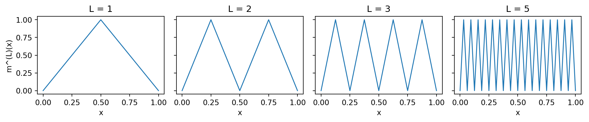
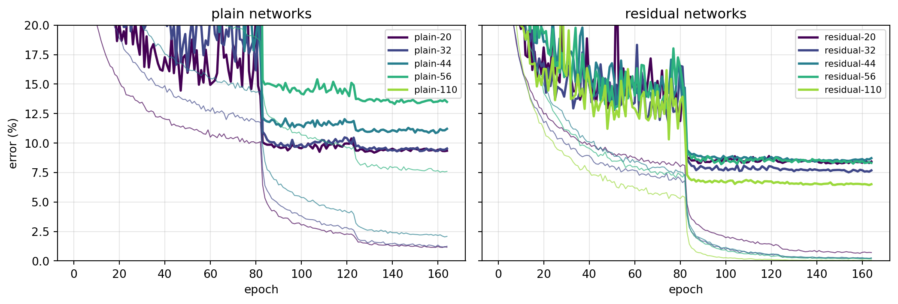
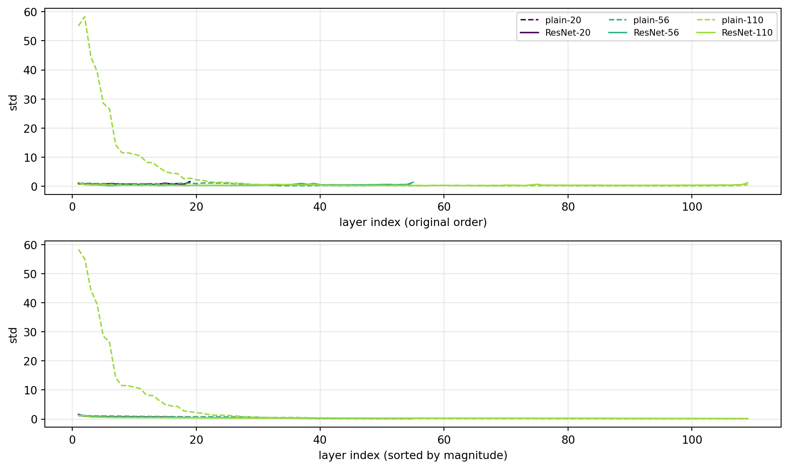
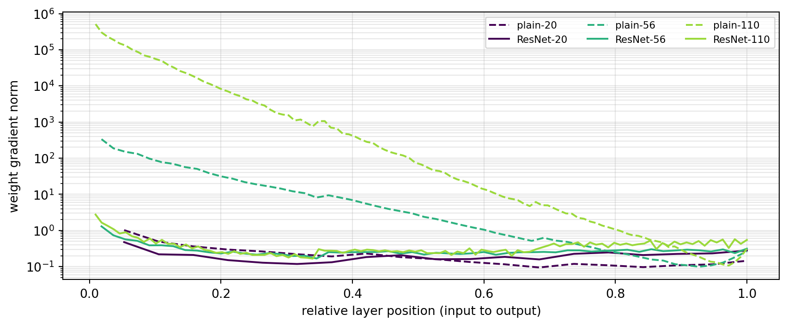
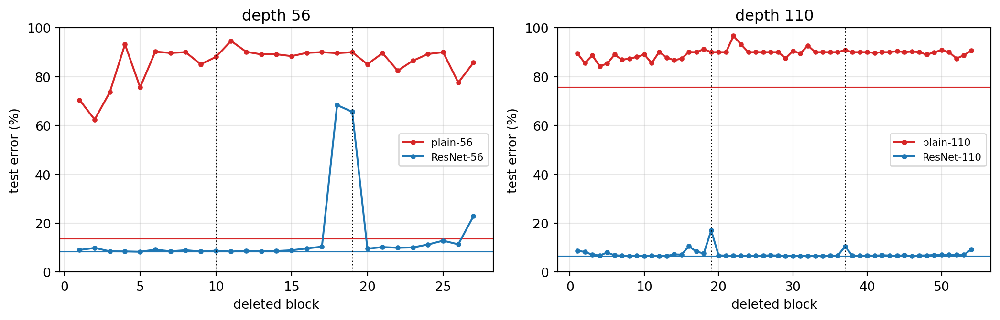
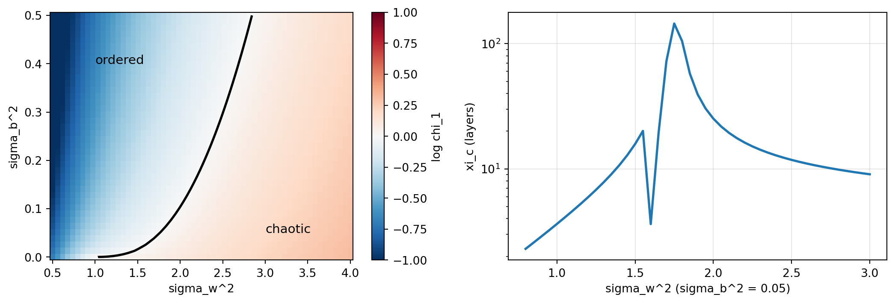
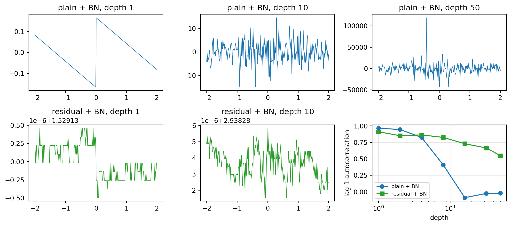
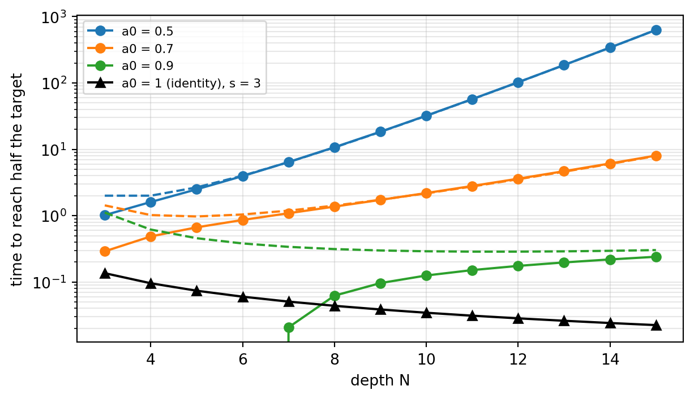
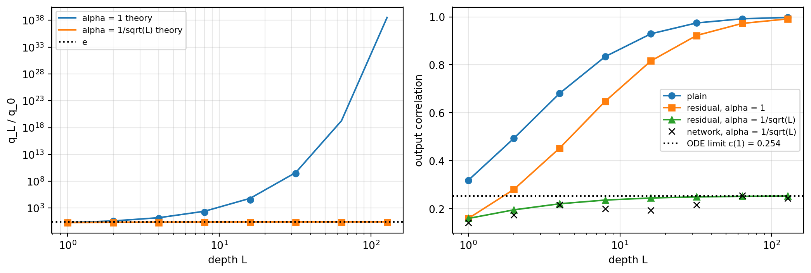

Every introductory account of deep learning tells the same story: depth is what makes deep learning work. A deep network composes simple functions into complicated ones, reuses intermediate features, and represents with a few hundred units what a shallow network would need astronomically many units to express. All of that is true. It is also true that for most of the history of neural networks, making a network deeper made it worse, and that this happened on the training set, where more capacity can only help in principle. The paper that finally made very deep networks trainable, “Deep Residual Learning for Image Recognition” by He, Zhang, Ren, and Sun (He et al. 2016a), opens with exactly this paradox. A 56 layer plain network trains to a higher error than a 20 layer one, even though the deeper network contains the shallower one as a special case.
This chapter takes that paradox apart. The chapter on skip connections introduced the residual block and the additive gradient path. Here we go further and ask the questions that chapter left open. What exactly goes wrong in a deep plain network, if not vanishing gradients? Why does batch normalization, which keeps every layer’s activations at unit variance, fail to prevent the problem? What do residual connections fix, what do they leave unfixed, and is a 1000 layer residual network actually deep in any meaningful sense? When does extra depth stop paying for itself, and what should be scaled instead? We answer with derivations, with a replication of the central experiment of He et al. on a laptop GPU, and with small numerical experiments that test each derived prediction.
What this chapter establishes
Depth increases expressivity exponentially (we derive Telgarsky’s sawtooth bound), so degradation is not a capacity problem. It is an optimization problem first and a generalization problem only at extreme depth.
In a wide random network, the forward signal and the backward gradient are governed by one number, \(\chi_1 = \sigma_w^2\,\mathbb{E}[\phi'(z)^2]\). Away from \(\chi_1 = 1\), information about the input is destroyed exponentially fast in depth, with an explicit depth scale \(\xi_c = -1/\log \chi_c\).
Even exactly at criticality, a plain ReLU network maps all inputs toward the same direction, with \(1 - c_\ell \approx 9\pi^2 / (2\ell^2)\). Criticality buys polynomial instead of exponential collapse, not immunity.
Controlling the average gradient is not enough. The spread of the input output Jacobian’s squared singular values grows linearly in depth, at a rate we derive from free probability and then measure. ReLU networks cannot avoid this growth.
Batch normalization keeps forward activations healthy but makes the gradients of a deep plain network explode at initialization, and it shatters the gradient as a function of the input. This is why the original paper’s argument from healthy gradient norms was incomplete.
Residual connections work by making the network effectively shallower. The residual stream variance grows like \((1 + \alpha^2)^L\), and the network has a well defined infinite depth limit only when the branch scale obeys \(\alpha^2 L = O(1)\). Trained residual networks behave like ensembles of paths whose typical length is a small fraction of the nominal depth.
Past a point, width, resolution, data, and compute are better uses of a parameter budget than depth, and modern large language models contain many layers that can be removed with little loss.
Definitions used throughout
Plain network: a feedforward stack \(h^{\ell+1} = \phi(W^{\ell+1} h^{\ell} + b^{\ell+1})\) with no shortcut paths, possibly with normalization layers.
Degradation: the empirical observation that, beyond some depth, a deeper plain network reaches a higher training error than a shallower one under the same training budget.
Preactivation variance \(q^\ell\): the variance of a single preactivation \(z_i^\ell\) over the random initialization, in the limit of infinite width.
Correlation \(c^\ell\): the correlation between the preactivations produced by two different inputs at layer \(\ell\).
Input output Jacobian \(J\): the matrix \(\partial h^L / \partial h^0\). Its squared singular values \(\lambda\) describe how the network stretches and squashes perturbations of the input, and through backpropagation, how it scales gradients.
Dynamical isometry: the condition that all squared singular values of \(J\) concentrate near one, not merely their mean.
Effective depth: the typical number of nonlinear transformations that a gradient actually traverses, which in a residual network can be far smaller than the nominal depth.
215.1 The Puzzle: Depth Is Powerful in Theory
215.1.1 What depth buys
Start with the strongest argument for depth. A one hidden layer ReLU network on the real line with \(k\) hidden units computes \(x \mapsto \sum_{i=1}^{k} a_i\,\mathrm{relu}(w_i x + b_i) + c\). Each unit is linear except at the single breakpoint \(x = -b_i / w_i\), so the sum has at most \(k\) breakpoints and therefore at most \(k + 1\) linear pieces.
Now compose instead of adding. Telgarsky’s construction uses the tent map on \([0, 1]\),
which is a ReLU layer with two units (Telgarsky 2016). The map sends \([0, \tfrac12]\) and \([\tfrac12, 1]\) each onto all of \([0, 1]\). Let \(m^{(L)} = m \circ \cdots \circ m\) be the \(L\) fold composition and let \(P_L\) be its number of linear pieces. Every linear piece of \(m^{(L-1)}\) maps some interval onto \([0, 1]\), and applying \(m\) to it splits it at the preimage of \(\tfrac12\) into two pieces, each again mapped onto \([0,1]\). Hence
A depth \(L\) network with \(2L\) hidden units therefore produces \(2^L\) pieces, while a one hidden layer network needs at least \(2^L - 1\) units to match it. Telgarsky turned this into a separation theorem: there are functions computed by networks with \(\Theta(L^3)\) layers and \(\Theta(1)\) units per layer that any network with \(O(L)\) layers cannot approximate unless it has \(\Omega(2^L)\) units (Telgarsky 2016). Eldan and Shamir proved a similar separation between depth two and depth three in high dimension (Eldan and Shamir 2016), and the number of linear regions of a deep ReLU network can grow exponentially with depth but only polynomially with width (Montúfar et al. 2014; Raghu et al. 2017).
Code
import mathimport numpy as npimport matplotlib.pyplot as pltfrom aiinaction.ch2071_depth import sawtooth, count_linear_piecesgrid = np.linspace(0.0, 1.0, 2**8*8+1)fig, axes = plt.subplots(1, 4, figsize=(11, 2.4), sharey=True)rows = []for ax, depth inzip(axes, (1, 2, 3, 5)): ys = [sawtooth(float(x), depth) for x in grid] ax.plot(grid, ys, lw=1.2) ax.set_title(f"L = {depth}") ax.set_xlabel("x")for depth inrange(1, 9): ys = [sawtooth(float(x), depth) for x in grid] rows.append((depth, 2* depth, count_linear_pieces(ys), 2**depth -1))axes[0].set_ylabel("m^(L)(x)")fig.tight_layout()plt.show()print(f"{'depth L':>8}{'deep units':>11}{'pieces':>7}{'shallow units needed':>21}")for depth, units, pieces, shallow in rows:print(f"{depth:>8}{units:>11}{pieces:>7}{shallow:>21}")

Figure 215.1: Telgarsky’s sawtooth. Composing a two unit tent map L times doubles the number of linear pieces at every layer. Depth buys exponential expressivity with linear cost.
depth L deep units pieces shallow units needed
1 2 2 1
2 4 4 3
3 6 8 7
4 8 16 15
5 10 32 31
6 12 64 63
7 14 128 127
8 16 256 255
The table confirms the recursion: the counted pieces are exactly \(2^L\) while the deep network uses only \(2L\) units. So whatever goes wrong as plain networks deepen, it is not a shortage of representable functions.
215.1.2 Three kinds of error
To say precisely what does go wrong, split the gap between a trained network \(\hat f\) and the best possible predictor \(f^\star\) into three terms, following Bottou and Bousquet (Bottou and Bousquet 2007). Let \(\mathcal{F}_L\) be the set of functions a depth \(L\) architecture can represent, \(f_L^\star\) the best of them in population risk \(R\), \(f_L^{n}\) the minimizer of the empirical risk over \(n\) samples, and \(\hat f\) what the optimizer actually returns. Then
Because \(\mathcal{F}_L \subseteq \mathcal{F}_{L+k}\) (shown below), the approximation term can only shrink with depth. The estimation term usually grows with capacity, but it shows up as a gap between training and test error. Degradation shows up as a rise in training error, which neither of those terms can produce. It is the optimization term. Everything in the first half of this chapter is about why gradient descent from a random initialization finds worse solutions in a larger set.
215.2 A Close Reading of He et al. (2016)
215.2.1 The experiment
He et al. trained “plain” convolutional networks, stacks of \(3 \times 3\) convolutions each followed by batch normalization and a ReLU, at depths 18 and 34 on ImageNet and at depths 20, 32, 44, and 56 on CIFAR-10 (He et al. 2016a). On both datasets the deeper plain network had higher training error throughout training. The same architectures with identity shortcuts added around every pair of convolutions, the residual networks, reversed the ordering: deeper was better.
The ImageNet numbers make the reversal concrete. All four networks below have the same width and, because the shortcuts of option A are parameter free, the plain and residual networks of each depth have exactly the same number of parameters.
At 18 layers the two architectures are essentially tied, and the paper notes that the residual version merely converges faster. The gap opens only with depth. On CIFAR-10 the plain networks show the same ordering (deeper plain networks have higher training and test error at every depth from 20 to 56), the plain 110 layer network ends above 60% error, and the residual networks improve steadily with depth:
CIFAR-10 test error (Table 6 of He et al.)
layers
parameters
error
ResNet
20
0.27M
8.75%
ResNet
32
0.46M
7.51%
ResNet
44
0.66M
7.17%
ResNet
56
0.85M
6.97%
ResNet
110
1.7M
6.43% (mean of 5 runs 6.61 ± 0.16)
ResNet
1202
19.4M
7.93%
215.2.2 The construction argument, stated precisely
The paper’s argument that the deeper network should be no worse is a statement about sets of functions. It deserves to be written as a proposition, because its limits are as instructive as its content.
Proposition (embedding by identity layers)
Let \(\mathcal{F}_L\) be the functions computed by a plain network of depth \(L\) whose hidden layers have width \(n\) and use ReLU, and let \(\mathcal{F}_{L+k}\) be the same architecture with \(k\) extra width \(n\) layers inserted before the output layer. Then \(\mathcal{F}_L \subseteq \mathcal{F}_{L+k}\), and therefore \(\min_{f \in \mathcal{F}_{L+k}} \hat R(f) \le \min_{f \in \mathcal{F}_{L}} \hat R(f)\) for any empirical risk \(\hat R\).
Proof. After a ReLU, the hidden state \(h^L\) is entrywise nonnegative. An inserted layer with \(W = I\) and \(b = 0\) computes \(\mathrm{relu}(I h^L) = h^L\), because \(\mathrm{relu}\) is the identity on nonnegative vectors. Inserting \(k\) such layers reproduces every function in \(\mathcal{F}_L\), so the minimum over the larger set is no larger. \(\square\)
Three things follow, and the third is the important one. First, the argument is about the minimum, the best point in the parameter space. It says nothing about whether gradient descent reaches it. Second, the embedded solution sits at a very special point: \(W = I\) for the inserted layers. A standard random initialization starts nowhere near it, since a random Gaussian matrix has spectral norm about \(2\sigma_w\) and is far from orthogonal, let alone equal to \(I\). Third, and decisive, the same functions can be parameterized so that the special point becomes the default. If an inserted layer computes \(h + \mathcal{F}(h)\) instead of \(\phi(Wh)\), then all weights equal to zero gives the identity. Residual learning is precisely the reparameterization that moves the embedded solution to the origin of the parameter space, where small random initializations already live. The proposition holds equally for both parameterizations. What changes is the geometry of the path from the initialization to good solutions.
215.2.3 What the paper ruled out, and what it left open
The authors were careful to argue that the degradation they observed was not the classical vanishing gradient problem.
Their reasoning, from Section 4.1 of the paper, has three steps. The plain networks use batch normalization, which forces forward propagated signals to have nonzero variance. The authors checked that the backward gradients have healthy norms. And the 34 layer plain network still reaches competitive accuracy, so the solver works to some extent. Hence, in their words, “neither forward nor backward signals vanish.” Training three times longer did not remove the degradation either. Their explanation is a conjecture: that “deep plain nets may have exponentially low convergence rates”. In Section 3.1 they add a more specific hypothesis, that solvers have difficulty approximating identity mappings with a stack of nonlinear layers, and they describe residual learning as a “reasonable preconditioning” for the case where the optimal function is close to the identity.
This leaves a genuine gap. Batch normalization fixes the scale of each layer’s activations, but scale is not the only thing that can go wrong. Later work identified at least four other failure modes, each of which we derive and measure below: the loss of input information in the forward pass (Section 215.4), the spreading of the Jacobian spectrum even when its mean is controlled (Section 215.5), the shattering and explosion of gradients that batch normalization itself induces (Section 215.6), and the slow escape from plateaus in deep products (Section 215.7).
215.2.4 The 1202 layer network: when depth hurts generalization
The paper also trained a residual network with \(n = 200\), that is 1202 layers. It showed no optimization difficulty at all: its training error fell below 0.1%, similar to the 110 layer network. But its test error was 7.93%, worse than the 6.43% of the 110 layer network. The authors attribute the gap to overfitting, noting that the network “may be unnecessarily large (19.4M)” for a dataset of 50,000 images and that they used no dropout or maxout. This is a different failure from degradation, and it is the one the classical theory predicts: once the optimizer can reach low training error, adding capacity eventually inflates the estimation term of the decomposition above.
Later work shows that the 1202 layer result reflects the training recipe as much as depth. With stochastic depth, which drops each residual block at random during training with a survival probability that decays linearly from 1 to 0.5, Huang et al. trained a 1202 layer network to 4.91% on CIFAR-10, compared with 6.67% for the same network trained at constant depth under their schedule (Huang et al. 2016). Stochastic depth trains an ensemble of shallower networks, with about three quarters of the blocks active on average, which already hints at the theme of Section 215.9: deep residual networks work best when they behave as if they were shallower.
215.2.5 Limitations of the paper’s evidence
The paper is one of the most cited in the history of the field, and it earned that. Reading it critically is still worthwhile, because several of its claims are often repeated more strongly than the evidence supports.
The diagnosis is by elimination, and one elimination is incomplete. The paper rules out vanishing gradients by showing that gradient norms are healthy, but a gradient can fail by exploding or by losing its directional information as well as by vanishing. We will see in Section 215.6 that batch normalization itself makes the gradients of deep plain networks explode at initialization, and that it decorrelates gradients across inputs. “Healthy norms” during training and well behaved gradients are not the same thing.
The central mechanism is a conjecture. “Exponentially low convergence rates” is offered as an explanation without a model that produces it. The deep linear analysis of Section 215.7 does produce one, but for plateaus rather than for the asymptotic rate.
The identity hypothesis is only partly supported. The paper’s Figure 7 shows that the layers of a trained residual network have smaller responses than those of a plain network, which is consistent with residual functions being close to zero. The companion paper on identity mappings tested the hypothesis more directly: shortcuts scaled by a constant \(0.5\) or gated by learned functions, which can still represent the identity, gave higher training error than the plain identity shortcut on a 110 layer network (12.35% test error for a 0.5 scaling of both paths, against 6.61% for the identity) (He et al. 2016b). That is strong evidence that the parameterization, not the function class, matters, but it does not show that “learning the identity” is what plain networks fail at.
Single runs and confounded comparisons. Apart from the 110 layer network (five runs, best and mean reported), the CIFAR-10 results are single runs, so differences of a few tenths of a percent between neighboring depths are within plausible seed variation. The plain and residual networks also share batch normalization, He initialization, and a single learning rate schedule, so the comparison holds the recipe fixed rather than tuning it for each architecture.
Depth was varied, width was not. Every CIFAR network uses 16, 32, and 64 filters. The paper cannot say whether the 110 layer residual network is better because it is deep or because it has more parameters, and later experiments with wide residual networks showed that the latter accounts for much of the gain (Section 215.10.1).
215.3 Replicating the Degradation Result on CIFAR-10
Claims about optimization are claims about what happens when you actually run the optimizer, so we reran the CIFAR-10 experiment. The script scripts/run_ch2071_degradation.py in the book’s repository implements Section 4.2 of the paper: networks of depth \(6n + 2\) built from three stages of \(2n\) convolutions with 16, 32, and 64 filters, batch normalization after every convolution, He initialization (He et al. 2015), parameter free option A shortcuts that zero pad new channels, SGD with momentum \(0.9\), weight decay \(10^{-4}\), batch size 128, and learning rate \(0.1\) divided by ten at 50% and 75% of training. Augmentation is the paper’s: pad by four pixels, take a random \(32 \times 32\) crop, and flip horizontally. For depth 110 we use the paper’s warm up of 400 iterations at learning rate \(0.01\). The plain networks are identical except that the shortcut is removed. The whole dataset and the augmentation live on the GPU, and each training step (forward pass, backward pass, and update) is captured once as a CUDA graph and replayed, because for networks this small the cost of launching thousands of tiny kernels from Python otherwise dominates. On a laptop RTX 3070 Ti an epoch of the 56 layer network then takes about ten seconds. The script writes every training curve and every measurement to JSON (results/ch2071_part_a.json and results/ch2071_part_b.json, because two training processes shared the GPU), which the cells below read, so the numbers in this section are the numbers from that run.
Setting
He et al. (2016), Section 4.2
This replication
Architecture
\(6n+2\) layers, 16/32/64 filters, global average pool, 10 way fully connected
same (last partial batch of each epoch dropped, so 390 iterations per epoch and 63,960 in total)
Schedule
lr 0.1, divided by 10 at 32k and 48k iterations, stop at 64k
164 epochs, lr divided by 10 after epochs 82 and 123 (about 32k and 48k iterations)
Warm up
lr 0.01 until training error below 80% (about 400 iterations) for depth 110
lr 0.01 for 400 iterations for depth 110
Data
45k train / 5k validation for curves, 50k train for the final table
50k train, 10k test for everything
Augmentation
4 pixel pad, random crop, horizontal flip
same, computed on the GPU
Precision
fp32
bfloat16 autocast, TF32 matrix multiplies
Seeds
best of 5 runs for depth 110, single runs otherwise
one seed per configuration
Code
import jsonfrom pathlib import Pathstores = [json.loads(p.read_text()) for p insorted(Path("results").glob("ch2071_part_*.json"))]store = stores[0]runs = {(r["depth"], r["residual"]): r for st in stores for r in st["runs"] if r["seed"] ==0}depths =sorted({d for d, _ in runs})colors =dict(zip(depths, plt.cm.viridis(np.linspace(0.0, 0.85, len(depths)))))fig, axes = plt.subplots(1, 2, figsize=(11, 3.8), sharey=True)for ax, residual, title in ((axes[0], False, "plain"), (axes[1], True, "residual")):for d in depths: r = runs.get((d, residual))if r isNone:continue ep = [h["epoch"] for h in r["history"]] ax.plot(ep, [100* h["train_err"] for h in r["history"]], color=colors[d], lw=0.8, alpha=0.7) ax.plot(ep, [100* h["test_err"] for h in r["history"]], color=colors[d], lw=2.0, label=f"{title}-{d}") ax.set_title(f"{title} networks") ax.set_xlabel("epoch") ax.set_ylim(0, 20) ax.grid(alpha=0.3) ax.legend(fontsize=8)axes[0].set_ylabel("error (%)")fig.tight_layout()plt.show()total_hours =sum(r["wall_seconds"] for r in runs.values()) /3600print("device:", store.get("device"), "| torch", store.get("torch"),"| epochs:", sorted({r["epochs"] for r in runs.values()}),f"| total GPU time {total_hours:.1f} h over {len(runs)} runs")

Figure 215.2: Replication of the degradation experiment. Left: plain networks, where deeper is worse on the training set at every depth. Right: residual networks with the same depth and width, which all reach near zero training error. Thin lines are training error on augmented minibatches, thick lines are test error. As in Figure 6 of the paper, the axis stops at 20%, so the plain 110 layer network is off the chart for most of training.
device: NVIDIA GeForce RTX 3070 Ti Laptop GPU | torch 2.6.0+cu124 | epochs: [164] | total GPU time 6.3 h over 10 runs
Code
import pandas as pdpaper_res = {20: 8.75, 32: 7.51, 44: 7.17, 56: 6.97, 110: 6.43}rows = []for d in depths: p, r = runs.get((d, False)), runs.get((d, True)) rows.append({"depth": d,"params": f"{r['params'] /1e6:.2f}M"if r else"","plain train err %": f"{100* p['final_train_err_clean']:.2f}"if p else"","plain test err %": f"{100* p['final_test_err']:.2f}"if p else"","ResNet train err %": f"{100* r['final_train_err_clean']:.2f}"if r else"","ResNet test err %": f"{100* r['final_test_err']:.2f}"if r else"","paper ResNet test err %": paper_res.get(d, ""), })pd.DataFrame(rows).set_index("depth")
Table 215.1: Final errors of the replication (one seed each, 164 epochs). Clean training error is measured on the 50,000 unaugmented training images at the end of training, the cleanest measure of what the optimizer achieved. The last column is the ResNet test error reported in Table 6 of He et al.
params
plain train err %
plain test err %
ResNet train err %
ResNet test err %
paper ResNet test err %
depth
20
0.27M
0.57
9.35
0.26
8.43
8.75
32
0.46M
0.59
9.54
0.05
7.68
7.51
44
0.66M
1.14
11.21
0.06
8.72
7.17
56
0.85M
5.88
13.49
0.04
8.32
6.97
110
1.73M
75.51
75.69
0.00
6.51
6.43
215.3.1 Layer responses
Figure 7 of the paper plots the standard deviation of each \(3 \times 3\) layer’s output, after batch normalization and before the nonlinearity or the addition, on the test set. The paper’s reading is that residual layers have smaller responses, which supports the idea that residual functions are closer to zero than unreferenced ones. The script records the same quantity.
Code
fig, axes = plt.subplots(2, 1, figsize=(10, 6))styles = {False: "--", True: "-"}for d in [d for d in (20, 56, 110) if d in depths]:for residual in (False, True): r = runs.get((d, residual))if r isNone:continue stds = r["layer_response_std"] lab =f"{'ResNet'if residual else'plain'}-{d}" axes[0].plot(range(1, len(stds) +1), stds, styles[residual], color=colors[d], label=lab, lw=1.3) axes[1].plot(range(1, len(stds) +1), sorted(stds, reverse=True), styles[residual], color=colors[d], lw=1.3)axes[0].set_xlabel("layer index (original order)"); axes[0].set_ylabel("std")axes[1].set_xlabel("layer index (sorted by magnitude)"); axes[1].set_ylabel("std")axes[0].legend(fontsize=8, ncol=3)for ax in axes: ax.grid(alpha=0.3)fig.tight_layout()plt.show()for d in depths: p, r = runs.get((d, False)), runs.get((d, True))if p and r:print(f"depth {d:>3}: median response std plain {np.median(p['layer_response_std']):.3f}, "f"ResNet {np.median(r['layer_response_std']):.3f}")

Figure 215.3: Standard deviations of layer responses on the CIFAR-10 test set, replicating Figure 7 of He et al. Top: in layer order. Bottom: sorted by magnitude. Residual layers respond less than plain ones, and deeper residual networks respond less per layer.
depth 20: median response std plain 0.817, ResNet 0.709
depth 32: median response std plain 0.729, ResNet 0.568
depth 44: median response std plain 0.658, ResNet 0.467
depth 56: median response std plain 0.707, ResNet 0.370
depth 110: median response std plain 0.196, ResNet 0.305
215.3.2 Gradients at initialization
He et al. checked that gradient norms were healthy during training. The script also records the gradient norm of every convolution’s weights on one fixed minibatch of 256 training images at initialization, before any update, which is where the mean field results of Section 215.6 make their prediction.
Code
fig, ax = plt.subplots(figsize=(9, 3.8))for d in [d for d in (20, 56, 110) if d in depths]:for residual in (False, True): r = runs.get((d, residual))if r isNone:continue g = np.array(r["init_grad_norms"]) ax.semilogy(np.arange(1, len(g) +1) /len(g), g, styles[residual], color=colors[d], label=f"{'ResNet'if residual else'plain'}-{d}")ax.set_xlabel("relative layer position (input to output)"); ax.set_ylabel("weight gradient norm")ax.legend(fontsize=8, ncol=3); ax.grid(alpha=0.3, which="both")fig.tight_layout()plt.show()print(f"{'network':>12}{'grad norm ratio, 2nd conv / last conv, at init':>48}")for d in depths:for residual in (False, True): r = runs.get((d, residual))if r: g = r["init_grad_norms"]print(f"{('ResNet'if residual else'plain') +'-'+str(d):>12}{g[1] / g[-1]:>48.2f}")

Figure 215.4: Per layer weight gradient norms at initialization on one minibatch of 256 images. Plain batch normalized networks (dashed) and residual networks (solid) of depth 20, 56 and 110.
Finally, the script repeats the single block lesion experiment of Veit et al. on the trained networks: each block in turn is replaced by its shortcut alone (identity, or the parameter free subsample and pad at the two downsampling blocks), and the test error is measured with every other block intact. For the plain network this is the same surgery, removing two convolutions and letting the input pass through.
Code
lesion_depths = [d for d in (56, 110) if (d, True) in runs]fig, axes = plt.subplots(1, len(lesion_depths), figsize=(11, 3.6), squeeze=False)for ax, d inzip(axes[0], lesion_depths): n_per_stage = (d -2) //6for residual, color in ((False, "C3"), (True, "C0")): r = runs.get((d, residual))if r isNone:continue errs =100* np.array(r["lesion_test_err"]) ax.plot(np.arange(1, len(errs) +1), errs, "o-", ms=3, color=color, label=f"{'ResNet'if residual else'plain'}-{d}") ax.axhline(100* r["final_test_err"], color=color, lw=0.8)for b in (n_per_stage +1, 2* n_per_stage +1): ax.axvline(b, color="k", ls=":", lw=1) ax.set_title(f"depth {d}"); ax.set_xlabel("deleted block"); ax.set_ylabel("test error (%)") ax.set_ylim(0, 100); ax.legend(fontsize=8); ax.grid(alpha=0.3)fig.tight_layout()plt.show()for d in lesion_depths: n_per_stage = (d -2) //6 down = {n_per_stage, 2* n_per_stage}for residual in (False, True): r = runs.get((d, residual))if r isNone:continue errs = np.array(r["lesion_test_err"]) normal = [e for i, e inenumerate(errs) if i notin down]print(f"{('ResNet'if residual else'plain') +'-'+str(d):>11}: base {100* r['final_test_err']:.2f}%, "f"median after deleting a non downsampling block {100* np.median(normal):.2f}%, "f"worst {100*max(normal):.2f}%, downsampling blocks "f"{', '.join(f'{100* errs[i]:.1f}%'for i insorted(down))}")

Figure 215.5: Test error after deleting a single block from a trained network. Dotted vertical lines mark the two downsampling blocks; horizontal lines mark the unlesioned test error.
plain-56: base 13.49%, median after deleting a non downsampling block 89.15%, worst 94.60%, downsampling blocks 88.0%, 90.0%
ResNet-56: base 8.32%, median after deleting a non downsampling block 9.18%, worst 68.33%, downsampling blocks 8.8%, 65.6%
plain-110: base 75.69%, median after deleting a non downsampling block 90.00%, worst 96.67%, downsampling blocks 90.0%, 90.9%
ResNet-110: base 6.51%, median after deleting a non downsampling block 6.76%, worst 10.55%, downsampling blocks 17.0%, 10.5%
215.3.4 What the replication shows
The degradation is reproduced, and it is unambiguously an optimization failure. Measured on the clean training set at the end of training, the plain networks’ error rises monotonically with depth: 0.57%, 0.59%, 1.14%, 5.88%, and 75.5% at depths 20, 32, 44, 56, and 110. The 110 layer plain network barely leaves chance level for the first 30 epochs and ends with 75.7% test error, in line with the paper’s report that plain-110 stays above 60%. The residual networks with the same parameters fit the training set almost perfectly at every depth, with clean training error between 0.26% and 0.002%. Because the residual networks can reach essentially zero training error with these exact weights and this exact schedule, the plain networks’ failure is not a matter of capacity, data, or training time: it is the optimization term of the decomposition at the start of this chapter.
The residual test errors match the paper at three depths out of five. Our ResNet-20, 32, and 110 reach 8.43%, 7.68%, and 6.51%, within about 0.3 points of the paper’s 8.75%, 7.51%, and 6.43%. Our ResNet-44 and 56 are worse, at 8.72% and 8.32% against 7.17% and 6.97%, so in this run the residual networks do not improve monotonically from 32 to 56 layers. With one seed per configuration we cannot separate the candidate causes: seed to seed variation (the paper’s five runs of ResNet-110 had a standard deviation of 0.16 points, but variation can be larger at other depths), bfloat16 arithmetic, and training on all 50,000 images rather than the 45,000 used to tune the schedule. What is robust is the conclusion the paper draws: deep residual networks train to near zero error where plain networks of the same depth cannot, and the deepest residual network has the lowest test error. Rerunning the script with --seeds 1 2 3 4 turns the single runs into error bars, at the cost of about six hours of laptop GPU time per seed.
Layer responses replicate Figure 7. Residual layers respond less than plain ones at every depth where the plain network trained, and the median response of residual layers falls steadily with depth (0.71, 0.57, 0.47, 0.37, and 0.31 from depth 20 to 110), the paper’s observation that “an individual layer of ResNets tends to modify the signal less”. The plain 110 layer network is the exception because it never trained: its responses are small for a different reason.
Gradients explode at initialization and then equilibrate. At initialization the gradient of the second convolution of a plain network is larger than that of the last convolution by a factor of 3.4 at depth 20, 25 at depth 32, 92 at depth 44, 709 at depth 56, and close to \(10^6\) at depth 110, a nearly constant growth of about 1.13 per convolution, which is the geometric explosion that the batch normalization mean field theory of Section 215.6 predicts, here in full size convolutional networks. The residual networks’ ratios stay between 0.8 and 3.2. At the end of training, however, the same ratio is of order one for every plain network (between 0.09 and 1.85). Both He et al.’s observation that gradients have “healthy norms” during training and Yang et al.’s prediction of exploding gradients are therefore correct: they describe different moments. The explosion governs the first steps, when the early layers of a plain network receive updates orders of magnitude too large relative to the late ones, and by the time the norms have equilibrated the network has already been pushed into a poor region of the loss surface.
The lesion study replicates Veit et al., and shows that shallower residual networks are less ensemble like. Deleting any single block of the trained plain 56 layer network raises its test error from 13.5% to between 62% and 95%, and to more than 85% for most blocks, close to the 90% of chance. Deleting a single non downsampling block of ResNet-110 raises its error from 6.51% to a median of 6.76%, and the worst of the 52 such deletions gives 10.55%; the two downsampling blocks are the most important, at 17.0% and 10.5%. ResNet-56 is in between: most deletions cost under a point, but removing the last block of the second stage or the downsampling block that follows it is catastrophic (68.3% and 65.6%), and removing the final block costs 14 points. That is what the effective path model of Section 215.9 predicts: with fewer blocks, each block carries a larger share of the short paths that do the work.
215.4 Mechanism 1: Forward Signal Propagation and the Edge of Chaos
215.4.1 The infinite width limit
Consider a plain network with preactivations \(z^{\ell+1} = W^{\ell+1} \phi(z^{\ell}) + b^{\ell+1}\), where the entries of \(W^{\ell+1} \in \mathbb{R}^{n \times n}\) are independent \(\mathcal{N}(0, \sigma_w^2 / n)\) and the biases are \(\mathcal{N}(0, \sigma_b^2)\). Fix an input and condition on layer \(\ell\). Each preactivation in the next layer, \(z_i^{\ell+1} = \sum_{j} W_{ij}^{\ell+1} \phi(z_j^\ell) + b_i^{\ell+1}\), is a sum of independent zero mean Gaussians given \(z^\ell\), so it is Gaussian with variance
As \(n \to \infty\), the average over \(j\) converges to an expectation over the distribution of a single preactivation. If that distribution is \(\mathcal{N}(0, q^\ell)\), the next layer’s preactivations are again Gaussian, with variance given by the length map
This is the mean field description of Poole et al. and Schoenholz et al. (Poole et al. 2016; Schoenholz et al. 2017). For bounded activations \(\mathcal{V}\) has a stable fixed point \(q^\star\) that is reached within a few layers, so the length of the signal is rarely the problem. For ReLU, \(\int \mathcal{D}z\, \mathrm{relu}(\sqrt q z)^2 = q/2\), so with \(\sigma_b = 0\) the map is \(q \mapsto \sigma_w^2 q / 2\), which is preserved exactly when \(\sigma_w^2 = 2\). That is He initialization, derived in one line.
215.4.2 The correlation map
Length is about one input. Learning is about telling inputs apart. Feed two inputs through the same network and let \(q_{12}^\ell\) be the covariance of their preactivations, with correlation \(c^\ell = q_{12}^\ell / q^\star\) once both have reached the length fixed point. The same conditioning argument gives a pair of jointly Gaussian preactivations at each layer, and the correlation map
Setting \(c^\ell = 1\) makes \(u_1 = u_2\) and turns the bracket into \(\mathcal{V}(q^\star) = q^\star\), so \(c = 1\) is always a fixed point: identical inputs stay identical. The question is whether it is stable, that is, whether two different inputs are driven toward each other.
215.4.3 The slope at the fixed point
Differentiate \(\mathcal{C}\) with respect to \(c\). The covariance of \((u_1, u_2)\) is \(q^\star c\), and Price’s theorem for jointly Gaussian variables says that the derivative of \(\mathbb{E}[g(u_1, u_2)]\) with respect to their covariance equals \(\mathbb{E}[\partial^2 g / \partial u_1 \partial u_2]\). With \(g = \phi(u_1)\phi(u_2)\) this gives
The same number appears in the backward pass. The layer Jacobian is \(J^{\ell} = D^\ell W^\ell\) with \(D^\ell = \operatorname{diag}(\phi'(z^\ell))\), and its mean squared singular value is
So the squared norm of a backpropagated gradient changes by a factor \(\chi_1\) per layer on average, \(\mathbb{E}\lVert\delta^\ell\rVert^2 \approx \chi_1^{L - \ell}\, \mathbb{E}\lVert\delta^L\rVert^2\). One number controls two phenomena:
Ordered phase, \(\chi_1 < 1\): the fixed point \(c = 1\) is stable, every pair of inputs converges to the same representation, and gradients vanish.
Chaotic phase, \(\chi_1 > 1\):\(c = 1\) is unstable, nearby inputs are pushed apart toward a fixed point \(c^\star < 1\), small input perturbations are amplified, and gradients explode.
Edge of chaos, \(\chi_1 = 1\): neither.
215.4.4 Depth scales
Linearize the correlation map around its stable fixed point \(c^\star\). Writing \(c^\ell = c^\star + \epsilon^\ell\) and \(\chi_c = \mathcal{C}'(c^\star)\) gives \(\epsilon^{\ell+1} \approx \chi_c\, \epsilon^\ell\), hence
The correlation depth scale\(\xi_c\) is the number of layers over which a plain network can carry information about how two inputs differ. In the ordered phase \(\chi_c = \chi_1\) and in the backward pass the gradient depth scale is \(\xi_\nabla = -1/\log\chi_1\). Both diverge at \(\chi_1 = 1\). Schoenholz et al. tested the consequence directly. They trained fully connected networks of many depths across the \((\sigma_w^2, \sigma_b^2)\) plane on MNIST and CIFAR-10 and overlaid multiples of \(\xi_c\) on the map of which networks trained. The boundary is well described by \(L \approx 6\xi_c\): networks are trainable when \(L \lesssim 6\xi_c\) and fail beyond it, a relationship they found to be independent of the dataset, the training duration, and the optimizer (Schoenholz et al. 2017). Depth, in this precise sense, is only usable up to a multiple of the depth scale set by the initialization. They also showed that dropout destroys the critical point, so that even modest dropout caps the trainable depth at about a hundred layers.
The cell below computes the phase diagram of tanh networks with Gauss Hermite quadrature, draws the critical line \(\chi_1 = 1\), and plots the depth scale along a slice. A finite width Monte Carlo run checks the length map against an actual random network.
Code
from numpy.polynomial.hermite_e import hermegaussgh_x, gh_w = hermegauss(80)gh_w = gh_w / gh_w.sum() # E[f(z)] = sum w f(x) for z ~ N(0, 1)def E(f):returnfloat(np.sum(gh_w * f(gh_x)))def qstar(sw2, sb2, iters=500): q =1.0for _ inrange(iters): q = sw2 * E(lambda z: np.tanh(np.sqrt(q) * z) **2) + sb2return qdef chi1_tanh(sw2, sb2): q = qstar(sw2, sb2)return sw2 * E(lambda z: (1- np.tanh(np.sqrt(q) * z) **2) **2)def corr_map(c, q, sw2, sb2): z1, z2 = np.meshgrid(gh_x, gh_x, indexing="ij") w2 = np.outer(gh_w, gh_w) u1 = np.sqrt(q) * z1 u2 = np.sqrt(q) * (c * z1 + np.sqrt(max(0.0, 1- c * c)) * z2)return (sw2 * np.sum(w2 * np.tanh(u1) * np.tanh(u2)) + sb2) / qdef c_fixed_point(sw2, sb2): q = qstar(sw2, sb2) c =0.3for _ inrange(300): c = corr_map(c, q, sw2, sb2)return c, qdef xi_c(sw2, sb2, h=1e-4): c, q = c_fixed_point(sw2, sb2)if c >1-1e-6: # ordered phase: slope at c = 1 is chi_1 chi_c = chi1_tanh(sw2, sb2)else: # chaotic phase: slope at the fixed point c* < 1 chi_c = (corr_map(c + h, q, sw2, sb2) - corr_map(c - h, q, sw2, sb2)) / (2* h)return-1.0/ np.log(chi_c)sw2_grid = np.linspace(0.5, 4.0, 60)sb2_grid = np.linspace(0.0, 0.5, 40)CHI = np.array([[chi1_tanh(a, b) for a in sw2_grid] for b in sb2_grid])fig, axes = plt.subplots(1, 2, figsize=(11, 3.8))im = axes[0].pcolormesh(sw2_grid, sb2_grid, np.log(CHI), cmap="RdBu_r", vmin=-1, vmax=1, shading="auto")axes[0].contour(sw2_grid, sb2_grid, CHI, levels=[1.0], colors="k", linewidths=2)axes[0].text(1.0, 0.4, "ordered", fontsize=11)axes[0].text(3.0, 0.05, "chaotic", fontsize=11)axes[0].set_xlabel("sigma_w^2"); axes[0].set_ylabel("sigma_b^2")fig.colorbar(im, ax=axes[0], label="log chi_1")slice_sw2 = np.linspace(0.8, 3.0, 45)xis = [xi_c(a, 0.05) for a in slice_sw2]axes[1].plot(slice_sw2, xis, lw=2)axes[1].set_yscale("log"); axes[1].set_xlabel("sigma_w^2 (sigma_b^2 = 0.05)")axes[1].set_ylabel("xi_c (layers)"); axes[1].grid(alpha=0.3)fig.tight_layout()plt.show()# Monte Carlo check of the length map with a finite random network.rng = np.random.default_rng(0)n_mc, sw2_mc, sb2_mc =2000, 1.5, 0.05z = rng.standard_normal(n_mc) *2.0# start far from the fixed point, q0 = 4theory_q =4.0print(f"{'layer':>5}{'q theory':>9}{'q network':>10}")for layer inrange(1, 7): W = rng.standard_normal((n_mc, n_mc)) * np.sqrt(sw2_mc / n_mc) z = W @ np.tanh(z) + rng.standard_normal(n_mc) * np.sqrt(sb2_mc) theory_q = sw2_mc * E(lambda x: np.tanh(np.sqrt(theory_q) * x) **2) + sb2_mcprint(f"{layer:>5}{theory_q:>9.4f}{np.mean(z**2):>10.4f}")crit = sw2_grid[np.argmin(np.abs(CHI[np.argmin(np.abs(sb2_grid -0.05))] -1.0))]print(f"critical sigma_w^2 at sigma_b^2 = 0.05: about {crit:.2f}; "f"peak xi_c on the slice: {max(xis):.0f} layers")

Figure 215.6: Mean field phase diagram of deep tanh networks. Left: chi_1 over the initialization plane, with the critical line chi_1 = 1 separating the ordered phase (gradients vanish, inputs collapse) from the chaotic phase (gradients explode, inputs decorrelate). Right: the correlation depth scale along sigma_b^2 = 0.05 diverges only at the critical point.
layer q theory q network
1 1.0029 1.0423
2 0.6422 0.6460
3 0.5234 0.5388
4 0.4717 0.4793
5 0.4464 0.4507
6 0.4334 0.4352
critical sigma_w^2 at sigma_b^2 = 0.05: about 1.75; peak xi_c on the slice: 145 layers
The finite network tracks the infinite width recursion to within sampling error after a single layer, and the depth scale is a handful of layers everywhere except in a narrow band around the critical line. A tanh network initialized at \(\sigma_w^2 = 3\) cannot propagate information about its input through more than a few dozen layers, no matter how long it is trained, because gradient descent starts from a point where the input has already been forgotten.
215.4.5 Criticality is not enough: ReLU correlations still collapse
He initialization puts a ReLU network exactly at criticality: with \(\sigma_w^2 = 2\) and \(\sigma_b = 0\), \(\chi_1 = 2\,\mathbb{P}(z > 0) = 1\). Does that make deep ReLU networks immune? The correlation map answers no. For jointly Gaussian \((u, v)\) with common variance \(q\) and correlation \(c = \cos\theta\), the degree one arc cosine kernel of Cho and Saul gives (Cho and Saul 2009)
Its slope at \(c = 1\) is exactly one, so the fixed point is only marginally stable and the approach is slower than exponential. To find the rate, put \(c = 1 - \epsilon\) and expand for small \(\epsilon\). Using \(\arccos(1 - \epsilon) = \sqrt{2\epsilon}\,(1 + \epsilon/12 + O(\epsilon^2))\) and \(\sqrt{1 - c^2} = \sqrt{2\epsilon}\,(1 - \epsilon/4 + O(\epsilon^2))\),
So the gap obeys \(\epsilon^{\ell+1} = \epsilon^\ell - k\,(\epsilon^\ell)^{3/2}\) with \(k = 2\sqrt2/(3\pi)\). Treating \(\ell\) as continuous, \(d\epsilon/d\ell = -k\,\epsilon^{3/2}\) integrates to \((\epsilon^\ell)^{-1/2} = (\epsilon^0)^{-1/2} + k\ell/2\), and for large \(\ell\)
At criticality the collapse is polynomial rather than exponential, but it is still a collapse: two inputs that start orthogonal are separated by an angle of about 9 degrees after 50 layers and under 5 degrees after 100, as the table below shows. The cell verifies the expansion symbolically with SymPy, then compares the exact recursion, the asymptotic law, and a finite random ReLU network.
Code
import sympy as spfrom aiinaction.ch2071_depth import (relu_correlation_map, relu_correlation_trajectory, relu_collapse_asymptotic)eps = sp.symbols("epsilon", positive=True)c_sym =1- epsf_sym = (sp.sqrt(1- c_sym**2) + (sp.pi - sp.acos(c_sym)) * c_sym) / sp.pigap = sp.series(f_sym - c_sym, eps, 0, 3).removeO()print("f(1 - eps) - (1 - eps) =", sp.expand(gap))leading = sp.limit((f_sym - c_sym) / eps**sp.Rational(3, 2), eps, 0)print("leading coefficient of eps^(3/2):", leading)assert sp.simplify(leading -2* sp.sqrt(2) / (3* sp.pi)) ==0k =2* sp.sqrt(2) / (3* sp.pi)print("4 / k^2 =", sp.simplify(4/ k**2), "(should equal 9 pi^2 / 2)")L =200theory = relu_correlation_trajectory(0.0, L)theory_res = relu_correlation_trajectory(0.0, L, alpha=1.0)def mc_corr(depth_max, width=1000, residual=False, seed=0): g = np.random.default_rng(seed) x = g.standard_normal((2, width)) x[1] -= x[1] @ x[0] / (x[0] @ x[0]) * x[0] # make the two inputs orthogonal h = x / np.linalg.norm(x, axis=1, keepdims=True) * np.sqrt(width) out = []for _ inrange(depth_max): W = g.standard_normal((width, width)) * np.sqrt(2.0/ width) h = h + np.maximum(h, 0) @ W.T if residual else np.maximum(h, 0) @ W.T out.append(h[0] @ h[1] / np.linalg.norm(h[0]) / np.linalg.norm(h[1]))return np.array(out)mc = np.mean([mc_corr(L, seed=s) for s inrange(3)], axis=0)ells = np.arange(1, L +1)fig, ax = plt.subplots(figsize=(6.5, 3.8))ax.loglog(ells, 1- np.array(theory[1:]), lw=2, label="plain: exact recursion")ax.loglog(ells, 1- mc, "o", ms=3, alpha=0.6, label="plain: width 1000 network")ax.loglog(ells, [relu_collapse_asymptotic(l) for l in ells], "k--", label="9 pi^2 / (2 l^2)")ax.loglog(ells, 1- np.array(theory_res[1:]), lw=2, label="residual, alpha = 1")ax.set_xlabel("layer l"); ax.set_ylabel("1 - c_l"); ax.grid(alpha=0.3, which="both")ax.legend(fontsize=8)fig.tight_layout()plt.show()print(f"{'layer':>6}{'1-c exact':>10}{'1-c network':>12}{'9pi^2/(2l^2)':>13}{'angle (deg)':>12}")for l in (5, 10, 25, 50, 100, 200): ang = math.degrees(math.acos(theory[l]))print(f"{l:>6}{1- theory[l]:>10.4f}{1- mc[l -1]:>12.4f} "f"{relu_collapse_asymptotic(l):>13.4f}{ang:>12.2f}")
Figure 215.7: Correlation collapse in critical ReLU networks. Two inputs that start orthogonal become nearly collinear with depth. The exact recursion, a width 1000 random network, and the 9 pi^2 / (2 l^2) law agree. A residual network with unit branch scale collapses too, only more slowly.
The asymptotic law converges to the exact recursion from above as \(\ell\) grows (the residual difference is a logarithmic correction), and the finite network follows the recursion. The practical meaning is that a deep plain ReLU network at initialization presents its last layer with nearly the same feature vector for every input. The classifier on top can only separate classes using the small residual differences, so early in training the useful gradient signal is tiny compared to the common component, and gradient descent must first undo the collapse before it can learn. Note also the residual curve: adding unscaled identity shortcuts slows the collapse but does not stop it. We return to this in Section 215.9.
215.5 Mechanism 2: The Spectrum of the Input Output Jacobian
215.5.1 Why the mean is not enough
Criticality fixes the mean squared singular value of the Jacobian \(J = \partial h^L / \partial h^0\) at one. But a matrix whose squared singular values average to one can still have a few huge ones and many tiny ones. Then a gradient is amplified along a handful of directions and annihilated along the rest, the effective condition number of the optimization problem is enormous, and first order methods crawl. The right object is the whole distribution of the squared singular values \(\lambda\) of \(J\), and in particular its variance.
215.5.2 A spectral prediction from free probability
Write \(J = D^L W^L D^{L-1} W^{L-1} \cdots D^1 W^1\). Pennington, Schoenholz, and Ganguli showed that in the wide limit the factors \(W^{\ell\top} W^\ell\) and \((D^\ell)^2\) behave as freely independent random matrices, so the spectrum of \(J^\top J\) is the free multiplicative convolution of the spectra of the individual factors (Pennington, Schoenholz, and Ganguli 2017, 2018). We need only one consequence of this, and it can be derived from the definition of freeness. For freely independent \(a\) and \(b\) with normalized trace \(\varphi\), the first mixed moments satisfy
If both factors have mean one, \(\varphi(a) = \varphi(b) = 1\), the second identity reads \(\varphi\big((ab)^2\big) - 1 = \big(\varphi(a^2) - 1\big) + \big(\varphi(b^2) - 1\big)\). Variances add. Applying this to the \(2L\) factors of \(J^\top J\), each normalized to mean one,
where \(v_W\) is the variance of the squared singular values of one normalized weight matrix and \(v_D\) the variance of the entries of \((D^\ell)^2\) normalized by \(\chi_1\). The two ingredients are elementary:
Gaussian weights:\(W^\top W\) with \(W_{ij} \sim \mathcal{N}(0, 1/n)\) follows the Marchenko Pastur law with unit ratio, whose variance is \(v_W = 1\). Orthogonal weights: every singular value equals one, so \(v_W = 0\).
Linear:\(v_D = 0\). ReLU at \(\sigma_w^2 = 2\): each entry of \(\sigma_w^2 (D^\ell)^2\) is \(0\) or \(2\) with probability one half, so its mean is \(1\) and its variance is \(v_D = 1\). Critical tanh:\(v_D = \sigma_w^4\,\mathbb{E}[\phi'(\sqrt{q^\star}z)^4] - 1\), which tends to zero as \(q^\star \to 0\), because tanh is nearly linear near the origin.
For Gaussian linear networks the prediction can be checked against an exact result: the squared singular values of a product of \(L\) square Gaussian matrices follow the Fuss Catalan distribution, whose second moment is \(\frac{1}{2L+1}\binom{2L+2}{2} = L + 1\), so the variance is exactly \(L\), as Equation 215.7 says.
Equation 215.7 is the precise sense in which deep plain networks are ill conditioned. It also explains which initializations can achieve dynamical isometry, \(\operatorname{Var}(\lambda) \approx 0\) at large depth: one needs \(v_W = 0\)and\(v_D \approx 0\), which means orthogonal weights and an activation that is nearly linear around the operating point. For ReLU, \(v_D = 1\) regardless of the weights, so no initialization of a ReLU network achieves dynamical isometry (Pennington, Schoenholz, and Ganguli 2017). With orthogonal weights and a tanh network tuned to a small \(q^\star\) on the critical line, the variance grows only as \(L \cdot v_D\) with a tiny \(v_D\). This is how Xiao et al. trained plain convolutional networks with 10,000 layers without shortcuts or normalization (Xiao et al. 2018).
Code
from aiinaction.ch2071_depth import gaussian_expectation, activation_derivative, activationn_j =400q_small =1.0/64.0Ed2 = gaussian_expectation(lambda z: activation_derivative("tanh", math.sqrt(q_small) * z) **2)Ed4 = gaussian_expectation(lambda z: activation_derivative("tanh", math.sqrt(q_small) * z) **4)sw2_t =1.0/ Ed2 # puts chi_1 = 1 at q* = 1/64sb2_t = q_small - sw2_t * gaussian_expectation(lambda z: activation("tanh", math.sqrt(q_small) * z) **2)vD_tanh = sw2_t**2* Ed4 -1.0def orthogonal(g, n): Q, R = np.linalg.qr(g.standard_normal((n, n)))return Q * np.sign(np.diag(R))def jacobian_lambdas(depth, act, weights, seed): g = np.random.default_rng(seed) q0 = q_small if act =="tanh"else1.0 z = g.standard_normal(n_j) * np.sqrt(q0) J = np.eye(n_j)for _ inrange(depth): W = g.standard_normal((n_j, n_j)) / np.sqrt(n_j) if weights =="gauss"else orthogonal(g, n_j)if act =="linear": J = W @ Jcontinueif act =="relu": W = W * np.sqrt(2.0) z = W @ np.maximum(z, 0) D = (z >0).astype(float)else: W = W * np.sqrt(sw2_t) z = W @ np.tanh(z) + g.standard_normal(n_j) * np.sqrt(sb2_t) D =1- np.tanh(z) **2 J = (D[:, None] * W) @ Jreturn np.linalg.svd(J, compute_uv=False) **2configs = [("linear", "gauss", 1.0), ("linear", "orth", 0.0), ("relu", "gauss", 2.0), ("relu", "orth", 1.0), ("tanh", "gauss", 1.0+ vD_tanh), ("tanh", "orth", vD_tanh)]print(f"critical tanh: sigma_w^2 = {sw2_t:.4f}, sigma_b^2 = {sb2_t:.2e}, v_D = {vD_tanh:.5f}")print(f"{'activation':>10}{'weights':>8}{'L':>4}{'mean lambda':>12}{'Var lambda':>11}{'predicted':>10}")spectra = {}for act, wts, per_layer in configs:for depth in (8, 32): lams = [jacobian_lambdas(depth, act, wts, seed) for seed inrange(4)] allv = np.concatenate(lams) spectra[(act, wts, depth)] = allvprint(f"{act:>10}{wts:>8}{depth:>4}{allv.mean():>12.3f} "f"{np.mean([l.var() for l in lams]):>11.3f}{depth * per_layer:>10.3f}")fig, ax = plt.subplots(figsize=(7, 3.6))bins = np.linspace(-8, 3, 120)for (act, wts), lab in [(("relu", "gauss"), "ReLU, Gaussian"), (("linear", "gauss"), "linear, Gaussian"), (("tanh", "orth"), "tanh critical, orthogonal")]: ax.hist(np.log10(spectra[(act, wts, 32)] +1e-12), bins=bins, density=True, alpha=0.55, label=lab)ax.set_xlabel("log10 of squared singular value of J (depth 32)")ax.set_ylabel("density"); ax.legend(fontsize=8)fig.tight_layout()plt.show()
Figure 215.8: Jacobian spectra at depth 32 (width 400). The distribution of log10 squared singular values spreads over many orders of magnitude for Gaussian ReLU networks but stays concentrated near zero for orthogonal critical tanh networks, as the free probability prediction says.
The measured variances follow \(L(v_W + v_D)\) within sampling error at moderate depth (the variance of a heavy tailed distribution estimated from finite matrices is noisy, which is why the cell averages four networks). Two lessons follow. First, the variance grows linearly in depth for every configuration except orthogonal linear and orthogonal critical tanh, so a deep plain network’s gradient is dominated by a shrinking set of directions even when its average scale is perfect. Second, the ReLU rows confirm that orthogonal initialization helps (\(v_W = 0\)) but cannot rescue ReLU (\(v_D = 1\)).
215.6 Mechanism 3: Shattered Gradients and the Batch Normalization Paradox
215.6.1 Gradients that look like noise
The analyses above concern a single input or a pair. Balduzzi et al. asked a complementary question: as the input moves continuously, how does the gradient change? (Balduzzi et al. 2017) For a well behaved function, gradients at nearby inputs should be similar, so that a step computed on one example generalizes to its neighbors. For fully connected ReLU networks with He initialization they proved that the covariance between gradients at two different inputs decays as \(1/2^L\) in a feedforward network, while in a residual network without normalization the gradient variance grows as \(2^L\) and the correlation decays as \((3/4)^L\). With batch normalization and a branch scale \(\beta\), residual networks change the decay of the correlation “from \(1/2^L\) to \(1/\sqrt{L}\)”, with a typical correlation of order \(1/(\beta\sqrt{L})\). A 100 layer feedforward network has gradient correlations “indistinguishable from zero”. They called this the shattered gradients problem: in a deep plain network the gradient as a function of the input resembles white noise. They also proposed a “looks linear” initialization, mirrored weights on concatenated rectifiers that make the network exactly linear at initialization, and found that plain networks so initialized train about as well as residual networks at depths up to about 200.
The experiment below follows their setup: a network of width 200 with a scalar input on a grid of 256 points in \([-2, 2]\), batch normalization computed over the grid, and the derivative of a random linear readout with respect to the input. We compare plain networks with residual networks and report the lag one autocorrelation of the gradient along the grid, which is near one for a smooth gradient and near zero for white noise.
Code
import torchdef input_gradient(depth, residual, seed, width=200, npts=256): g = torch.Generator().manual_seed(seed) x = torch.linspace(-2, 2, npts).unsqueeze(1).requires_grad_(True) h = x @ (torch.randn(1, width, generator=g) * math.sqrt(2.0))for _ inrange(depth): W = torch.randn(width, width, generator=g) * math.sqrt(2.0/ width)if residual: z = torch.relu(h) @ W h = h + (z - z.mean(0)) / (z.std(0) +1e-5)else: z = h @ W h = torch.relu((z - z.mean(0)) / (z.std(0) +1e-5)) y = (h @ (torch.randn(width, 1, generator=g) / math.sqrt(width))).sum() (grad,) = torch.autograd.grad(y, x)return grad.squeeze().numpy()def lag1(gr): gr = gr - gr.mean()returnfloat((gr[1:] * gr[:-1]).sum() / (gr * gr).sum())xs = np.linspace(-2, 2, 256)fig, axes = plt.subplots(2, 3, figsize=(11, 5))for col, depth inenumerate((1, 10, 50)): axes[0, col].plot(xs, input_gradient(depth, False, 0), lw=0.8) axes[0, col].set_title(f"plain + BN, depth {depth}")if col <2: axes[1, col].plot(xs, input_gradient(depth, True, 0), lw=0.8, color="C2") axes[1, col].set_title(f"residual + BN, depth {depth}")depth_list = [1, 2, 4, 8, 16, 32, 50]ac_plain = [np.mean([lag1(input_gradient(d, False, s)) for s inrange(5)]) for d in depth_list]ac_res = [np.mean([lag1(input_gradient(d, True, s)) for s inrange(5)]) for d in depth_list]axes[1, 2].plot(depth_list, ac_plain, "o-", label="plain + BN")axes[1, 2].plot(depth_list, ac_res, "s-", color="C2", label="residual + BN")axes[1, 2].set_xscale("log"); axes[1, 2].set_xlabel("depth"); axes[1, 2].set_ylabel("lag 1 autocorrelation")axes[1, 2].legend(fontsize=8); axes[1, 2].grid(alpha=0.3)fig.tight_layout()plt.show()print(f"{'depth':>6}{'plain+BN':>9}{'residual+BN':>12}")for d, a, b inzip(depth_list, ac_plain, ac_res):print(f"{d:>6}{a:>9.3f}{b:>12.3f}")

Figure 215.9: Shattered gradients. The derivative of the network output with respect to a scalar input, along a grid of inputs. In plain networks with batch normalization it degenerates into noise within about ten layers; in residual networks it keeps its structure. Bottom right: lag one autocorrelation versus depth, averaged over five seeds.
By depth 16 the gradient of the plain network has lost essentially all correlation between neighboring inputs. A gradient step computed on one image then carries almost no information about how to change the output on a similar image, and minibatch gradients become a poor guide to the full gradient. The residual network keeps a slowly decaying correlation, the qualitative difference Balduzzi et al. predicted.
215.6.2 Batch normalization makes deep plain networks explode
There is a sharper result. Yang et al. developed a mean field theory for networks with batch normalization and found that at initialization the gradients of a deep batch normalized network without shortcuts grow exponentially with depth, and that this explosion “cannot be eliminated by tuning the initial weight variances or by adjusting the nonlinear activation function” (Yang et al. 2019). In their words, batch normalization itself is the cause. They define the rate of explosion as the factor \(\lambda_G\) by which the squared gradient norm grows per layer, and prove that \(\lambda_G > 1\) for every nonconstant activation. The linear activation minimizes it, with \(\lambda_G = (B-2)/(B-3)\) for batch size \(B\), and for ReLU the rate decreases to \(\pi/(\pi - 1) \approx 1.467\) as \(B \to \infty\). Batch normalized ReLU networks deeper than about 50 layers were untrainable in their experiments regardless of batch size. This resolves the puzzle in the original paper. He et al. were right that batch normalization prevents the forward signal from vanishing, and right that the gradients they saw were not vanishing, but a gradient that grows geometrically toward the input layers is no healthier than one that shrinks. The cell below measures the ratio of the gradient norm at the first layer to that at the last layer at initialization, for plain and residual networks with batch normalization.
Code
import pandas as pddef bn(z):return (z - z.mean(0)) / torch.sqrt(z.var(0, unbiased=False) +1e-5)def grad_ratio(depth, act, residual, seed, width=256, batch=128): g = torch.Generator().manual_seed(seed) x = torch.randn(batch, width, generator=g) Ws = [(torch.randn(width, width, generator=g) / math.sqrt(width)).requires_grad_(True)for _ inrange(depth)] f = {"linear": lambda z: z, "relu": torch.relu, "tanh": torch.tanh}[act] h = xfor W in Ws: z = bn(h @ W) h = h + f(z) if residual else f(z) loss = ((h - torch.randn(batch, width, generator=g)) **2).mean() grads = torch.autograd.grad(loss, Ws)return (grads[0].norm() / grads[-1].norm()).item()rows = []for act in ("linear", "relu", "tanh"):for residual in (False, True): ratios = {L: np.mean([grad_ratio(L, act, residual, s) for s inrange(3)]) for L in (5, 10, 20, 40)} rate = (ratios[40] / ratios[10]) ** (1/30) rows.append({"activation": act, "architecture": "residual + BN"if residual else"plain + BN",**{f"L={L}": f"{v:.3g}"for L, v in ratios.items()},"growth per layer": f"{rate:.3f}"})pd.DataFrame(rows)
Table 215.2: Gradient norm ratio between the first and the last weight matrix at initialization (width 256, batch 128, mean of three seeds). Plain networks with batch normalization explode geometrically with depth; residual networks grow far more slowly.
activation
architecture
L=5
L=10
L=20
L=40
growth per layer
0
linear
plain + BN
1.01
1.04
1.08
1.17
1.004
1
linear
residual + BN
1.35
1.65
2.08
2.65
1.016
2
relu
plain + BN
2.18
5.7
36.9
1.34e+03
1.200
3
relu
residual + BN
1.53
2.13
3.26
7.01
1.041
4
tanh
plain + BN
1.4
2.2
5.57
31.4
1.093
5
tanh
residual + BN
1.34
1.65
2.1
2.83
1.018
The table measures the ratio of gradient norms, so the predicted per layer growth is \(\sqrt{\lambda_G}\). For the linear network with \(B = 128\), theory gives \(\sqrt{126/125} \approx 1.004\), which is what the table shows. For ReLU the infinite batch rate gives \(\sqrt{1.467} \approx 1.21\), and the measured rate of about 1.20 matches it. Over 40 layers that compounds to a first layer gradient more than a thousand times larger than the last layer gradient, at an initialization where every layer’s activations have exactly unit variance. A plain batch normalized network therefore starts training with its early layers receiving enormous updates relative to its late ones, which forces a small learning rate on the whole network. Residual connections tame the explosion, though not completely, because the identity path carries a gradient that does not pass through the normalization at all.
215.7 Mechanism 4: Optimization Dynamics of Deep Products
215.7.1 A scalar deep linear network
Everything so far describes the network at initialization. Depth also changes the dynamics of training itself, and the cleanest place to see it is a deep linear network, where every function the network can represent is linear, so expressivity and nonlinearity play no role at all. Saxe, McClelland, and Ganguli solved the learning dynamics of such networks exactly (Saxe, McClelland, and Ganguli 2014). A scalar version captures the essential phenomenon.
Let the network compute \(u = a_1 a_2 \cdots a_N\) and minimize \(\mathcal{L} = \frac12 (s - u)^2\) by gradient flow, \(\dot a_i = -\partial \mathcal{L} / \partial a_i\). Since \(\partial u / \partial a_i = \prod_{j \ne i} a_j\),
\[
\dot a_i = (s - u)\prod_{j \ne i} a_j .
\]
Start from the balanced initialization \(a_i(0) = a_0\) for all \(i\). By symmetry the weights stay equal, \(a_i(t) = a(t)\), so \(\dot a = (s - u)\,a^{N-1}\) and \(u = a^N\). The product then evolves as
\[
\dot u = N a^{N-1}\dot a = N a^{2N-2}(s - u) = N\,u^{2 - 2/N}\,(s - u).
\tag{215.8}\]
For \(N = 1\) this is plain linear regression, \(\dot u = s - u\), which converges exponentially at a depth independent rate. For \(N \ge 2\) the factor \(u^{2 - 2/N}\) makes the dynamics stall wherever \(u\) is small. Separating variables, the time to travel from \(u_0 = a_0^N\) to a fixed fraction of the target is
The plateau before learning takes off lengthens geometrically in depth whenever the initial scale is below one. With \(a_0 = 0.5\), going from 5 to 15 layers multiplies the waiting time by roughly \(2^{10}/3 \approx 340\). This is not a vanishing gradient in the usual sense, since the gradient at initialization is small but nonzero and the problem has no bad local minima (Kawaguchi 2016). It is a saddle: \(u = 0\) is a critical point of order \(N - 1\), and a deeper network starts closer to a flatter saddle. Initializing at \(a_0 = 1\), the identity, removes the plateau, and Saxe et al. showed that suitably structured (orthogonal) initializations make the learning time of deep linear networks nearly independent of depth (Saxe, McClelland, and Ganguli 2014). That is the linear shadow of residual learning, and Hardt and Ma made the connection exact (Hardt and Ma 2017). For a linear residual network \(h(x) = (I + A_\ell)\cdots(I + A_1)x\) they proved that a global optimum exists with every \(\lVert A_i \rVert\) of order \(1/\ell\), so deeper networks need smaller per layer corrections, and that inside the ball \(\max_i \lVert A_i\rVert < 1\) every critical point of the population risk is a global minimum. In the standard parameterization, by contrast, \(A_i = 0\) corresponds to all weights zero, which is a bad critical point. They then trained all convolutional residual networks of the form \(x + V\,\mathrm{relu}(Ux)\), with no batch normalization, dropout, or max pooling, to 6.38% error on CIFAR-10, on par with the original ResNet.
Code
from aiinaction.ch2071_depth import deep_linear_learning_time, deep_linear_time_asymptotic# Symbolic check of the reduced dynamics and of the plateau integral.a, s_sym, N_sym, u_sym = sp.symbols("a s N u", positive=True)u_of_a = a**N_symdu_dt = sp.diff(u_of_a, a) * (s_sym - u_of_a) * a ** (N_sym -1)assert sp.simplify(du_dt - N_sym * u_of_a ** (2-2/ N_sym) * (s_sym - u_of_a)) ==0lead = sp.integrate(u_sym ** (-(2-2/ N_sym)) / (N_sym * s_sym), u_sym)print("antiderivative of the leading term:", sp.simplify(lead))depths_lin = np.arange(3, 16)fig, ax = plt.subplots(figsize=(6.5, 3.8))for a0, color in ((0.5, "C0"), (0.7, "C1"), (0.9, "C2")): T = [deep_linear_learning_time(int(N), a0) for N in depths_lin] ax.semilogy(depths_lin, T, "o-", color=color, label=f"a0 = {a0}") ax.semilogy(depths_lin, [deep_linear_time_asymptotic(int(N), a0) for N in depths_lin], "--", color=color)# From the identity: u0 = 1, learn s = 3 (time to cover half the distance).T_id = []for N in depths_lin: u_grid = np.linspace(1.0, 2.0, 20001) integrand =1.0/ (N * u_grid ** (2-2/ N) * (3.0- u_grid)) T_id.append(np.trapezoid(integrand, u_grid))ax.semilogy(depths_lin, T_id, "k^-", label="a0 = 1 (identity), s = 3")ax.set_xlabel("depth N"); ax.set_ylabel("time to reach half the target")ax.legend(fontsize=8); ax.grid(alpha=0.3, which="both")fig.tight_layout()plt.show()print(f"{'N':>3}{'T(a0=0.5)':>10}{'asymptotic':>11}{'T identity':>11}")for N, tid inzip(depths_lin[::3], T_id[::3]):print(f"{N:>3}{deep_linear_learning_time(int(N), 0.5):>10.2f} "f"{deep_linear_time_asymptotic(int(N), 0.5):>11.2f}{tid:>11.4f}")
antiderivative of the leading term: Piecewise((-1/(s*u**((N - 2)/N)*(N - 2)), (N > 2) | (N < 2)), (log(u)/(N*s), True))

Figure 215.10: Learning time of a scalar deep linear network under gradient flow. From a small initialization the plateau lengthens geometrically with depth, as the asymptotic formula predicts (dashed). From the identity, depth makes learning faster, not slower.
The same message appears in pictures of the loss surface. Li et al. visualized random two dimensional slices of the loss around trained solutions, using a filter normalization that makes slices of different networks comparable (Li et al. 2018). Removing the shortcuts from CIFAR-10 ResNets, they found that the loss surface “spontaneously transitions from (nearly) convex to chaotic” as depth grows: a 20 layer network without shortcuts has a benign, nearly convex basin, while 56 and 110 layer versions have sharp, ill conditioned minimizers surrounded by non convex terrain in which gradient directions do not point toward the minimum. Their test errors trace the degradation curve: 8.18%, 13.31%, and 16.44% for the 20, 56, and 110 layer networks without shortcuts, against 7.37%, 5.89%, and 5.79% with them. With shortcuts, the basins of the 20 and 110 layer networks look almost identical. Orhan and Pitkow traced part of this to degenerate directions in plain networks, where units become linearly dependent or permanently inactive and the Hessian acquires many near zero eigenvalues; shortcut connections break these degeneracies (Orhan and Pitkow 2018). Both views agree with the scalar model: depth multiplies the number of ways the optimizer can stall near a degenerate point, and shortcuts move the initialization away from them.
215.8 Mechanism 5: Rank Collapse in Attention Networks
Transformers inherit a version of the forward collapse of Section 215.4. A self attention layer replaces each token by a convex combination of value vectors, an averaging operation. Dong, Cordonnier, and Loukas proved that a network built only of self attention layers, with no skip connections and no MLPs, converges to a rank one matrix in which every token is the same, and that the distance to that matrix shrinks doubly exponentially: after \(L\) layers it is bounded by a constant raised to the power \((3^L - 1)/2\) times the initial distance raised to the power \(3^L\)(Dong, Cordonnier, and Loukas 2021). Skip connections admit parameterizations in which the collapse does not happen at any depth, and MLPs slow it down, while layer normalization alone plays no role in preventing it. Noci et al. connected the same rank collapse to vanishing gradients of the queries and keys at initialization (Noci et al. 2022), and Daneshmand et al. showed that batch normalization provably prevents rank collapse in deep linear and ReLU networks at initialization (Daneshmand et al. 2020). The cell measures the relative distance of the token matrix from the nearest rank one “all tokens equal” matrix through a stack of random attention layers.
Code
def token_residual(X): R = X - X.mean(0, keepdims=True)return np.linalg.norm(R) / np.linalg.norm(X)def attention_stack(depth, skip, seed, n_tok=32, d=64): g = np.random.default_rng(seed) X = g.standard_normal((n_tok, d)) out = [token_residual(X)]for _ inrange(depth): Wq, Wk, Wv = (g.standard_normal((d, d)) / np.sqrt(d) for _ inrange(3)) S = (X @ Wq) @ (X @ Wk).T / np.sqrt(d) A = np.exp(S - S.max(1, keepdims=True)) A /= A.sum(1, keepdims=True) H = A @ X @ Wv X = X + H if skip else H X = X / np.linalg.norm(X) * np.sqrt(n_tok * d) # rescale, as a norm layer would out.append(token_residual(X))return np.array(out)layers_shown = [0, 1, 2, 3, 4, 6, 8, 16, 24]pure = np.mean([attention_stack(24, False, s) for s inrange(5)], axis=0)skip = np.mean([attention_stack(24, True, s) for s inrange(5)], axis=0)pd.DataFrame({"layer": layers_shown,"pure attention": [f"{pure[l]:.2e}"for l in layers_shown],"attention + skip": [f"{skip[l]:.2e}"for l in layers_shown]}).set_index("layer").T
Table 215.3: Rank collapse in random self attention stacks (32 tokens, width 64, mean of five seeds). The entry is the relative residual of the token matrix after removing its mean token. Without skip connections it collapses doubly exponentially; skip connections slow the collapse dramatically.
layer
0
1
2
3
4
6
8
16
24
pure attention
9.86e-01
7.93e-01
2.74e-01
2.03e-02
6.96e-06
4.30e-16
3.85e-16
4.07e-16
4.06e-16
attention + skip
9.86e-01
9.76e-01
9.54e-01
9.15e-01
8.66e-01
6.59e-01
4.23e-01
3.48e-02
1.96e-03
Without shortcuts the residual falls from order one to about \(10^{-6}\) by layer four and to machine precision by layer eight, and the logarithm of the residual roughly doubles in magnitude per layer, the doubly exponential signature. With skip connections the collapse is slowed from a few layers to a few dozen, but in this purely random stack it is not stopped, because nothing else in the block injects token specific information. In a trained transformer the MLP blocks and the learned weights play that role. The lesson is the same as for ReLU networks: the shortcut does not prevent the averaging dynamics, it dilutes them, and the dilution factor is again the ratio of branch scale to stream scale.
215.9 What Residual Connections Actually Fix, and What They Do Not
215.9.1 The residual stream grows
The chapter on skip connections showed that the identity path adds an unattenuated term to every backpropagated gradient. That is half of the story. The other half is what happens to the forward signal. Consider residual blocks \(x^{\ell+1} = x^\ell + \alpha\, W^\ell\, \mathrm{relu}(x^\ell)\) with \(W^\ell_{ij} \sim \mathcal{N}(0, 2/n)\) and a branch scale \(\alpha \ge 0\). In the wide limit, the branch output is independent of \(x^\ell\) given the past and has zero mean, so variances add:
With \(\alpha = 1\), the variance of the residual stream doubles every block. A 110 layer network without normalization would carry activations about \(2^{54} \approx 10^{16}\) times larger at the output than at the input. The same expansion appears in the Jacobian, whose mean squared singular value is \((1 + \alpha^2)^L\). Identity shortcuts alone therefore exchange vanishing for explosion. The forward signal is bounded only when \((1 + \alpha^2)^L = O(1)\), that is when \(\alpha^2 L = O(1)\), and with \(\alpha = 1/\sqrt{L}\) the limit is \(q^L \to q^0 e\).
215.9.2 The correlation map of a residual network
The same calculation applied to the covariance of two inputs gives \(q_{12}^{\ell+1} = q_{12}^\ell + \alpha^2 q^\ell f(c^\ell)\) with the ReLU kernel \(f\) of Equation 215.5, and dividing by \(q^{\ell+1}\),
Each block moves the correlation only a fraction \(\alpha^2 / (1 + \alpha^2)\) of the way that a plain layer would. Two consequences follow, and they are the heart of what residual networks do.
First, with a fixed \(\alpha\), the collapse of Equation 215.6 still happens, only slower: repeating the derivation with the step \(\epsilon \mapsto \epsilon - \frac{\alpha^2}{1+\alpha^2} k \epsilon^{3/2}\) gives \(1 - c^\ell \approx 9\pi^2 (1 + \alpha^2)^2 / (2\alpha^4 \ell^2)\). With \(\alpha = 1\) that is four times the plain value, so a residual ReLU network of depth \(2\ell\) forgets about as much as a plain network of depth \(\ell\).
Second, with \(\alpha^2 = 1/L\) and \(t = \ell / L\), the recursion becomes \(c^{\ell+1} - c^\ell = \frac{1}{L+1}\,\big(f(c^\ell) - c^\ell\big)\), a forward Euler step of size about \(1/L\) for the ordinary differential equation
The output correlation converges to \(c(1)\), independent of the depth. A residual network with branch scale \(1/\sqrt{L}\) has a genuine infinite depth limit, a continuous flow in the spirit of neural ordinary differential equations (Chen et al. 2018; Haber and Ruthotto 2018), and as \(L\) grows it does not lose any more information than a network of finite depth. This is the scaling behind stable ResNets (Hayou et al. 2021) and behind depth parameterizations that transfer hyperparameters across depth (Yang et al. 2024; Bordelon et al. 2024).
Code
from aiinaction.ch2071_depth import residual_variance, relu_kernel_odedef mc_residual(depth, alpha, width=1000, seed=0): g = np.random.default_rng(seed) x = g.standard_normal((2, width)) x[1] -= x[1] @ x[0] / (x[0] @ x[0]) * x[0] h = x / np.linalg.norm(x, axis=1, keepdims=True) * np.sqrt(width)for _ inrange(depth): W = g.standard_normal((width, width)) * np.sqrt(2.0/ width) h = h + alpha * np.maximum(h, 0) @ W.T var =float(np.mean(h[0] **2)) corr =float(h[0] @ h[1] / np.linalg.norm(h[0]) / np.linalg.norm(h[1]))return var, corrLs = [1, 2, 4, 8, 16, 32, 64, 128]c_ode = relu_kernel_ode(0.0, 1.0)fig, axes = plt.subplots(1, 2, figsize=(11, 3.8))axes[0].semilogy(Ls, [residual_variance(1.0, L, 1.0) for L in Ls], "-", label="alpha = 1 theory")axes[0].semilogy(Ls, [residual_variance(1.0, L, 1/ math.sqrt(L)) for L in Ls], "-", label="alpha = 1/sqrt(L) theory")mc_small = [L for L in Ls if L <=32]axes[0].semilogy(mc_small, [mc_residual(L, 1.0)[0] for L in mc_small], "o", color="C0")axes[0].semilogy(Ls, [mc_residual(L, 1/ math.sqrt(L))[0] for L in Ls], "s", color="C1")axes[0].axhline(math.e, color="k", ls=":", label="e")axes[0].set_xscale("log"); axes[0].set_xlabel("depth L"); axes[0].set_ylabel("q_L / q_0")axes[0].legend(fontsize=8); axes[0].grid(alpha=0.3, which="both")axes[1].plot(Ls, [relu_correlation_trajectory(0.0, L)[-1] for L in Ls], "o-", label="plain")axes[1].plot(Ls, [relu_correlation_trajectory(0.0, L, alpha=1.0)[-1] for L in Ls], "s-", label="residual, alpha = 1")axes[1].plot(Ls, [relu_correlation_trajectory(0.0, L, alpha=1/ math.sqrt(L))[-1] for L in Ls], "^-", label="residual, alpha = 1/sqrt(L)")axes[1].plot(Ls, [mc_residual(L, 1/ math.sqrt(L))[1] for L in Ls], "kx", label="network, alpha = 1/sqrt(L)")axes[1].axhline(c_ode, color="k", ls=":", label=f"ODE limit c(1) = {c_ode:.3f}")axes[1].set_xscale("log"); axes[1].set_xlabel("depth L"); axes[1].set_ylabel("output correlation")axes[1].legend(fontsize=8); axes[1].grid(alpha=0.3)fig.tight_layout()plt.show()for L in (8, 64, 1024):print(f"L = {L:>5}: c_L (alpha = 1/sqrt L) = {relu_correlation_trajectory(0.0, L, alpha=1/math.sqrt(L))[-1]:.4f}, "f"ODE c(1) = {c_ode:.4f}, plain c_L = {relu_correlation_trajectory(0.0, L)[-1]:.4f}")

Figure 215.11: Residual networks and the depth limit. Left: residual stream variance at initialization for unit branch scale (explodes) and 1/sqrt(L) branch scale (bounded by e), theory and a width 1000 network. Right: output correlation of two orthogonal inputs; plain and unit scale residual networks collapse with depth, while 1/sqrt(L) scaling converges to the ODE limit c(1).
215.9.3 How the practical remedies implement the scaling
Read through Equation 215.10 and Equation 215.12, the zoo of techniques for training very deep residual networks turns out to be a set of ways to make \(\alpha^2 L\) small at initialization.
Batch normalization in the branch. In a residual network with a normalized branch, each block adds a unit variance contribution to the stream, so after \(\ell\) blocks the stream has variance about \(\ell\) and each new branch contributes a fraction of order \(1/\sqrt{\ell}\) of the signal. De and Smith showed that this is why batch normalized residual networks train: normalization “downscales the residual branch relative to the skip connection” by a factor of order the square root of the depth, which biases every block toward the identity at initialization (De and Smith 2020).
SkipInit and ReZero. Replace normalization with an explicit learnable scalar on each branch, \(x + \alpha_\ell F(x)\), initialized at zero. De and Smith found SkipInit trainable whenever \(\alpha \le 1/\sqrt{d}\) for \(d\) blocks, and trained 1000 layer Wide ResNets without normalization to accuracy close to the batch normalized version (94.3% against 94.6% on CIFAR-10), while the same networks with \(\alpha = 1\) failed to train at depth 100 (De and Smith 2020). ReZero is the same idea applied to transformers: with \(\alpha_\ell = 0\) every Jacobian singular value equals one at initialization, a 12 layer transformer reached a target loss 56% faster than the Post-LN baseline, and 64 and 128 layer transformers that diverged with standard normalization trained stably (Bachlechner et al. 2021). The learned \(|\alpha_\ell|\) ended at about \(1/L\), as Equation 215.10 suggests.
Fixup. Zhang, Dauphin, and Ma derived the scaling from the requirement that one SGD step change the output by \(\Theta(\eta/L)\). For branches with \(m\) layers this gives a rescaling of each branch layer by \(L^{-1/(2m-2)}\), with the last layer of every branch and the classifier initialized at zero. Fixup matched batch normalization after the first epoch even at 10,000 layers, and trained ResNet-110 on CIFAR-10 to 7.24% without any normalization (H. Zhang, Dauphin, and Ma 2019).
Normalization free networks combine branch scaling with adaptive gradient clipping and reach state of the art ImageNet accuracy without batch normalization (Brock et al. 2021).
215.9.4 Residual networks as ensembles of shallow paths
Unroll \(n\) residual blocks \(x^{\ell+1} = x^\ell + F_\ell(x^\ell)\). Expanding the composition, every path from input to output chooses at each block either the shortcut or the branch, so there are \(2^n\) paths and \(\binom{n}{k}\) of them pass through exactly \(k\) branches. The path lengths follow a Binomial\((n, \tfrac12)\) distribution with mean \(n/2\). Veit, Wilber, and Belongie argued that a residual network behaves like an ensemble of these paths rather than a single deep computation (Veit, Wilber, and Belongie 2016). For the 54 block, 110 layer network on CIFAR-10, more than 95% of the paths pass through between 19 and 35 blocks. Their evidence came from three experiments. Deleting any single layer of a 15 layer VGG style plain network reduced its accuracy to chance, while deleting any single block of the residual network had no noticeable effect except for the downsampling blocks, which had a modest one. Deleting many blocks degraded accuracy smoothly rather than catastrophically, as an ensemble losing members would. And measuring the gradient carried by paths of each length showed that it decays roughly exponentially with the number of blocks traversed, so that “almost all of the gradient updates during training come from paths between 5 and 17 modules long”, about 0.45% of all paths. Retraining the network while sampling only 23 of the 54 blocks per minibatch, so that every training path was short, gave 5.96% error against 6.10% for normal training.
A simple model explains why the effective depth is so short. Suppose the branch Jacobians scale a backpropagated signal by a typical factor \(\rho\) relative to the identity. A path through \(k\) branches then carries a gradient of size about \(\rho^k\), and the total gradient carried by paths of length \(k\) is proportional to \(\binom{n}{k}\rho^k\). Normalizing,
a Binomial\((n, p)\) law whose mean, the effective depth, is \(n\rho/(1+\rho)\). Small branches mean \(\rho < 1\) and an effective depth well below \(n/2\). With \(n = 54\) blocks, as in ResNet-110, an effective depth around ten corresponds to \(\rho \approx 0.25\). The library computes both distributions, and the lesion experiment of our replication (Section 215.3) shows the consequence directly.
Figure 215.12: Path length distributions in a 54 block residual network (ResNet-110). Gray: the share of paths of each length. Colored: the share of gradient they carry when each branch scales the signal by rho. The gradient lives on short paths.
The picture this paints is deflationary. The residual network does not solve the problem of training a 110 layer computation. It sidesteps it by building a network in which most of the training signal flows through computations of depth ten to twenty, which are exactly the depths at which plain networks already trained well. Greff, Srivastava, and Schmidhuber reached a compatible conclusion from a different angle: within a stage, the successive blocks of highway and residual networks refine an estimate of the same features rather than computing a new representation at every layer, a pattern they called unrolled iterative estimation (Greff, Srivastava, and Schmidhuber 2017). Jastrzebski et al. measured the same effect, finding that residual blocks in later layers mostly move the representation a small step along the direction that reduces the loss, like iterations of an optimizer (Jastrzębski et al. 2018).
215.10 Depth Versus Width, Data, and Compute
215.10.1 Width can beat depth
If a residual network’s effective depth is a fraction of its nominal depth, the extra nominal layers are an expensive way to add parameters. Zagoruyko and Komodakis tested the alternative directly (Zagoruyko and Komodakis 2016). They observed that in very deep residual networks “each fraction of a percent of improved accuracy costs nearly doubling the number of layers”, a symptom they called diminishing feature reuse: nothing forces the gradient through any particular residual branch, so many blocks may learn little. Their wide residual networks (WRN) keep the residual design but use far fewer, wider layers. The comparison on CIFAR (Table 5 of their paper, median of five runs, no dropout) is striking:
network
depth
parameters
CIFAR-10 error
CIFAR-100 error
ResNet (He et al.)
110
1.7M
6.43%
25.16%
pre-activation ResNet
1001
10.2M
4.92%
22.71%
WRN-40-4
40
8.9M
4.53%
21.18%
WRN-16-8
16
11.0M
4.27%
20.43%
WRN-28-10
28
36.5M
4.00%
19.25%
A 40 layer network with fewer parameters than the 1001 layer network beats it on both datasets, and the authors report it trains about eight times faster. A 16 layer network matches or beats a network sixty times deeper. Their conclusion is that the main power of residual networks lies in the residual blocks, not in extreme depth. Li et al. found the same in the loss landscape: widening a 56 layer network, with or without shortcuts, makes its loss surface smoother and its error lower, and wide networks show no sign of the chaotic landscape of deep plain ones (Li et al. 2018).
215.10.2 The real control parameter is depth over width
Finite width corrections to the mean field picture sharpen the comparison. Hanin showed that in a ReLU network the mean squared entry of the input output Jacobian is the same at every depth and width, but its fluctuations are not: the fourth moment is bounded above and below by exponentials in \(\beta = \sum_j 1/n_j\), the sum of the reciprocal hidden widths (Hanin 2018). For a network of constant width \(n\) and depth \(L\), \(\beta \approx L/n\). Exploding and vanishing gradients in the sense of large fluctuations are therefore avoided only if width grows with depth, and for a fixed budget of neurons, equal widths minimize \(\beta\). Hanin and Nica studied products of random matrices in the regime where the number of factors and their size grow together, and proved that the logarithm of the norm of such a product applied to a fixed vector is asymptotically Gaussian; for ReLU networks its fluctuations are governed by the depth to width ratio \(L/n\)(Hanin and Nica 2020), and the effective theory of Roberts, Yaida, and Hanin organizes the entire finite width expansion in powers of the aspect ratio \(L/n\)(Roberts, Yaida, and Hanin 2022). The upshot is that “deep” is not a property of \(L\) alone. A network is in the well behaved, nearly Gaussian regime when \(L/n\) is small, and fluctuations from one initialization to the next, including fluctuations of the gradient, grow exponentially in \(L/n\). Doubling depth at fixed width moves a network away from that regime. Doubling both does not.
215.10.3 Compound scaling and the shape of large models
The most systematic answer to “what should be scaled?” comes from treating depth, width, and input resolution as three axes of one budget. Tan and Le observed that “the accuracy gain of very deep network diminishes”, noting that a 1000 layer ResNet reaches accuracy similar to ResNet-101, and that scaling any single dimension saturates (Tan and Le 2019). Scaling ResNet-50 by depth alone with four times the FLOPs raised ImageNet top-1 accuracy from 76.0% to 78.1%, scaling width or resolution alone gave 77.7% and 77.5%, and scaling all three together at the same cost gave 78.8%. For language models, Kaplan et al. found that performance “depends very weakly” on depth versus width at a fixed number of non embedding parameters: the aspect ratio can vary by a factor of 40 while the loss changes by only a few percent, and a 6 layer model with width 4288 comes within 3% of the loss of a 48 layer model with width 1600 (Kaplan et al. 2020). Levine et al. analyzed a simplified self attention network and derived a width dependent threshold, of order \(\log_3 d_x\) in the width \(d_x\), below which deepening is far more effective than widening and above which depth and width play similar roles. On that basis they argued that the largest language models of the time were too deep for their width (Levine et al. 2020). Nguyen, Raghu, and Kornblith compared the representations of wide and deep networks and found that very deep or very wide models develop a “block structure”, a long run of layers with nearly identical representations, which signals that many of those layers are doing little (Nguyen, Raghu, and Kornblith 2021).
215.10.4 Depth and generalization
The 1202 layer network of He et al. is the clearest case of depth hurting generalization rather than optimization, and it behaves as classical capacity arguments predict: a 19 million parameter network on 50,000 images. The relationship is not monotone in general. Over parameterized networks show the double descent behavior described in the chapter on double descent, where test error can fall again past the interpolation threshold (Belkin et al. 2019; Nakkiran et al. 2021). Depth also shapes the implicit bias of gradient descent: in deep linear networks and deep matrix factorization, adding layers drives gradient descent toward lower rank solutions (Arora et al. 2019), which helps when the target is low rank and hurts when it is not. Depth is therefore a statement about the prior the optimizer imposes, not only about capacity.
215.11 Depth in Modern Transformers and Large Language Models
Transformer language models are residual networks, and every result in Section 215.9 applies to their residual stream. The placement of layer normalization decides which regime a transformer is in. In the original Post-LN arrangement, \(x^{\ell+1} = \mathrm{LN}(x^\ell + F(x^\ell))\), normalization sits on the shortcut and destroys its identity character, and Post-LN transformers need learning rate warm up and still fail at large depth (Xiong et al. 2020; Liu et al. 2020). In the Pre-LN arrangement, \(x^{\ell+1} = x^\ell + F(\mathrm{LN}(x^\ell))\), the shortcut is a clean identity and training is stable, but the residual stream is never normalized, so its variance grows with depth exactly as in Equation 215.10 with branches of roughly constant output scale. DeepNet resolves the conflict for Post-LN models by up weighting the shortcut before normalization, \(x^{\ell+1} = \mathrm{LN}(\alpha x^\ell + G(x^\ell))\), and down scaling the initialization of the branch weights by \(\beta\). For a decoder only model with \(M\) layers, \(\alpha = (2M)^{1/4}\) and \(\beta = (8M)^{-1/4}\). With this rule Wang et al. trained transformers with 1000 layers (2500 attention and feed forward sublayers), and a 200 layer, 3.2 billion parameter translation model outperformed a 48 layer, 12 billion parameter baseline by 5 BLEU (Wang et al. 2024). Even then, translation quality grew only logarithmically in depth.
The growth has a cost that has only recently been measured. Gromov et al. removed contiguous blocks of layers from open weight language models, choosing the block whose input and output representations had the smallest angular distance, and then “healed” the damage with a small amount of QLoRA fine tuning (Gromov et al. 2025). For Llama-2-70B they could “eliminate up to roughly half of the layers before the performance collapses” on question answering benchmarks, and most model families tolerated removing between 20% and 55% of their layers. Deeper layers were consistently more similar to their neighbors than shallow ones. Men et al. reached a similar conclusion with a block influence score and found that simply deleting the most redundant layers rivals more elaborate pruning methods (Men et al. 2025). Sun et al. traced the redundancy to Pre-LN itself: the variance of the residual stream grows with depth, at least linearly and at most exponentially, and as it grows the Jacobian of a deep block approaches the identity, so the deepest layers contribute almost nothing (Sun et al. 2025). Their fix, scaling the output of each layer normalization by \(1/\sqrt{\ell}\), is the branch scaling of Equation 215.10 applied layer by layer, and it improved perplexity at every model size they trained, for example from 17.02 to 15.71 for a 1 billion parameter LLaMA style model.
These findings are the modern form of the degradation problem. Large models do not show higher training loss when deepened, because residual connections and normalization prevent that. What they show instead is that the deep end of the network contributes little per parameter: the same depth pathology, converted from an optimization failure into an efficiency failure.
215.12 Synthesis
215.12.1 A map from symptom to mechanism to remedy
Measure before deepening. Log per layer activation standard deviations and gradient norms at initialization and after a few hundred steps. Plot the output correlation of a pair of inputs against depth. These checks take seconds and catch most of the failure modes above.
Initialize at criticality. For ReLU networks use He initialization; for tanh use the critical line, and prefer orthogonal weights where the framework supports them.
Use residual connections with an identity shortcut, and keep the shortcut free of nonlinearities and normalization (pre activation or Pre-LN ordering).
Make the residual branches start small. Zero initialize the last normalization scale or the last layer of each branch, or use an explicit branch scale that keeps \(\alpha^2 L\) bounded.
Prefer width before depth past a few dozen effective layers, and when scaling a vision model, scale depth, width, and resolution together.
Test whether depth is earning its keep. Remove individual blocks at evaluation time. If accuracy barely moves, the network is effectively shallower than its parameter count suggests.
215.12.3 Open questions and the limits of the theory
The mean field and random matrix results in this chapter describe networks at initialization in the limit of infinite width. Real networks are finite, and training moves the weights far from their initial distribution, especially in the feature learning regime where the representations change substantially. The free independence assumption behind Equation 215.7 is exact only asymptotically, and finite \(L/n\) corrections grow with depth, which is precisely the regime of interest. Explaining the degradation of trained networks, rather than predicting trainability from the initialization, remains incomplete: the evidence that initialization phenomena cause the degradation He et al. observed is strong but correlational, built from interventions (initialization schemes, shortcuts, normalization placement) that change several mechanisms at once. Finally, the deflationary view of residual networks as ensembles of shallow paths is contested. Lesion robustness is compatible with iterative refinement of a shared representation as well as with an ensemble, and very deep models trained with depth aware parameterizations may use their depth more fully than the networks Veit et al. studied.
215.13 Reference Implementation
The functions used in this chapter’s cells live in the book’s tested library as aiinaction.ch2071_depth, with line by line ports in Julia (AIInAction.Ch2071Depth) and Rust (aiinaction::ch2071_depth). Every function is deterministic and uses only the standard library of each language, so the three implementations agree to floating point tolerance on shared test fixtures.
The example below runs the chapter’s main predictions through the library: the critical point of a tanh network, the ReLU collapse law, the depth limit of a scaled residual network, the deep linear plateau, and the effective depth of ResNet-110.
import mathfrom aiinaction.ch2071_depth import ( length_fixed_point, chi1, correlation_depth_scale, correlation_map, relu_correlation_trajectory, relu_collapse_asymptotic, relu_kernel_ode, residual_variance, deep_linear_learning_time, deep_linear_time_asymptotic, effective_path_distribution,)# 1. Mean field: a tanh network in the ordered phase.sw2, sb2 =1.2, 0.05q = length_fixed_point(sw2, sb2, "tanh")x1 = chi1(q, sw2, "tanh")print(f"tanh sw2={sw2}, sb2={sb2}: q* = {q:.5f}, chi_1 = {x1:.5f}, "f"xi_c = {correlation_depth_scale(x1):.2f} layers")print(f" correlation map at c = 0.5: {correlation_map(0.5, q, sw2, sb2, 'tanh'):.5f}")# 2. Critical ReLU: polynomial collapse of correlations.traj = relu_correlation_trajectory(0.0, 100)print(f"ReLU: 1 - c_100 = {1- traj[100]:.5f} (asymptotic {relu_collapse_asymptotic(100):.5f})")# 3. Residual networks: variance and correlation with 1/sqrt(L) branches.L =256print(f"residual variance, L={L}: alpha=1 -> {residual_variance(1.0, L, 1.0):.3e}, "f"alpha=1/sqrt(L) -> {residual_variance(1.0, L, 1/ math.sqrt(L)):.4f} (e = {math.e:.4f})")print(f" c_L = {relu_correlation_trajectory(0.0, L, alpha=1/ math.sqrt(L))[-1]:.4f}, "f"ODE limit c(1) = {relu_kernel_ode(0.0, 1.0):.4f}")# 4. Deep linear plateau from a0 = 0.5.for N in (4, 8, 12):print(f"deep linear N={N:>2}: T = {deep_linear_learning_time(N, 0.5):8.3f}, "f"asymptotic {deep_linear_time_asymptotic(N, 0.5):8.3f}")# 5. Effective depth of a 54 block residual network with branch gain 0.25.dist = effective_path_distribution(54, 0.25)mean_len =sum(k * p for k, p inenumerate(dist))print(f"effective depth (blocks) = {mean_len:.2f}; share of gradient on paths of 5 to 17 blocks = "f"{sum(dist[5:18]):.3f}")
tanh sw2=1.2, sb2=0.05: q* = 0.26990, chi_1 = 0.84517, xi_c = 5.94 layers
correlation map at c = 0.5: 0.58720
ReLU: 1 - c_100 = 0.00358 (asymptotic 0.00444)
residual variance, L=256: alpha=1 -> 1.158e+77, alpha=1/sqrt(L) -> 2.7130 (e = 2.7183)
c_L = 0.2533, ODE limit c(1) = 0.2539
deep linear N= 4: T = 1.606, asymptotic 2.000
deep linear N= 8: T = 10.742, asymptotic 10.667
deep linear N=12: T = 102.587, asymptotic 102.400
effective depth (blocks) = 10.80; share of gradient on paths of 5 to 17 blocks = 0.975
usingAIInAction.Ch2071Depth# 1. Mean field: a tanh network in the ordered phase.sw2, sb2 =1.2, 0.05q =length_fixed_point(sw2, sb2, "tanh")x1 =chi1(q, sw2, "tanh")println("q* = $(round(q; digits=5)), chi_1 = $(round(x1; digits=5)), ","xi_c = $(round(correlation_depth_scale(x1); digits=2)) layers")println("correlation map at c = 0.5: ", correlation_map(0.5, q, sw2, sb2, "tanh"))# 2. Critical ReLU: polynomial collapse of correlations.traj =relu_correlation_trajectory(0.0, 100)println("1 - c_100 = ", 1- traj[end], " (asymptotic ", relu_collapse_asymptotic(100), ")")# 3. Residual networks with 1/sqrt(L) branches.L =256println("variance: ", residual_variance(1.0, L, 1.0), " vs ", residual_variance(1.0, L, 1/sqrt(L)))println("c_L = ", relu_correlation_trajectory(0.0, L; alpha=1/sqrt(L))[end],", ODE c(1) = ", relu_kernel_ode(0.0, 1.0))# 4. Deep linear plateau from a0 = 0.5.for N in (4, 8, 12)println("N = $N: T = ", deep_linear_learning_time(N, 0.5),", asymptotic ", deep_linear_time_asymptotic(N, 0.5))end# 5. Effective depth of a 54 block residual network with branch gain 0.25.dist =effective_path_distribution(54, 0.25)println("effective depth = ", sum((k -1) * p for (k, p) inenumerate(dist)))
useaiinaction::ch2071_depth::{ chi1, correlation_depth_scale, correlation_map, deep_linear_learning_time, deep_linear_time_asymptotic, effective_path_distribution, length_fixed_point, relu_collapse_asymptotic, relu_correlation_trajectory, relu_kernel_ode, residual_variance, DEFAULT_N2,};fn main() ->Result<(),String>{// 1. Mean field: a tanh network in the ordered phase.let (sw2, sb2) = (1.2,0.05);let q = length_fixed_point(sw2, sb2,"tanh",1.0,1e-12,10_000)?;let x1 = chi1(q, sw2,"tanh")?;println!("q* = {q:.5}, chi_1 = {x1:.5}, xi_c = {:.2} layers", correlation_depth_scale(x1)?);println!("correlation map at c = 0.5: {:.5}", correlation_map(0.5, q, sw2, sb2,"tanh", DEFAULT_N2)?);// 2. Critical ReLU: polynomial collapse of correlations.let traj = relu_correlation_trajectory(0.0,100,None)?;println!("1 - c_100 = {:.5} (asymptotic {:.5})",1.0- traj[100], relu_collapse_asymptotic(100.0,None)?);// 3. Residual networks with 1/sqrt(L) branches.let l =256usize;let alpha =1.0/ (l asf64).sqrt();println!("variance: {:.3e} vs {:.4}", residual_variance(1.0, l,1.0)?, residual_variance(1.0, l, alpha)?);let c_l =*relu_correlation_trajectory(0.0, l,Some(alpha))?.last().unwrap();println!("c_L = {c_l:.4}, ODE c(1) = {:.4}", relu_kernel_ode(0.0,1.0,10_000)?);// 4. Deep linear plateau from a0 = 0.5.for n in [4usize,8,12] {println!("N = {n}: T = {:.3}, asymptotic {:.3}", deep_linear_learning_time(n,0.5,1.0,0.5,4000)?, deep_linear_time_asymptotic(n,0.5,1.0)?);}// 5. Effective depth of a 54 block residual network with branch gain 0.25.let dist = effective_path_distribution(54,0.25)?;let mean:f64= dist.iter().enumerate().map(|(k, p)| k asf64* p).sum();println!("effective depth = {mean:.2}");Ok(())}
215.14 Exercises
Sawtooth lower bound. Prove that a one hidden layer ReLU network with \(k\) units on \(\mathbb{R}\) has at most \(k + 1\) linear pieces, and conclude that it needs at least \(2^L - 1\) units to represent \(m^{(L)}\) exactly.
Chaotic fixed point. For tanh with \(\sigma_w^2 = 3\), \(\sigma_b^2 = 0.05\), compute \(q^\star\), the nontrivial correlation fixed point \(c^\star\), and \(\xi_c\) with the code of Figure 215.6. How many layers can such a network propagate information through?
Leaky ReLU spectra. For leaky ReLU with negative slope \(\beta\), choose \(\sigma_w^2\) to make \(\chi_1 = 1\) and compute \(v_D\). Use Equation 215.7 to show that dynamical isometry is approached as \(\beta \to 1\), and verify numerically.
Residual collapse rate. Derive \(1 - c^\ell \approx 9\pi^2(1+\alpha^2)^2/(2\alpha^4\ell^2)\) from Equation 215.11 and check it against relu_correlation_trajectory for \(\alpha = 0.5\).
Deep linear plateau. Integrate Equation 215.8 numerically with an explicit Euler scheme for \(N = 6\) and \(a_0 = 0.6\) and compare the time to reach \(s/2\) with deep_linear_learning_time and with Equation 215.9. When does the asymptotic formula become accurate?
Lesion your own network. Using the replication script, train a residual network of depth 56 with branch outputs multiplied by \(1/\sqrt{27}\) and repeat the lesion study. Does the damage from removing a block change, and why?
215.15 Summary
Deeper networks can represent more, exponentially more in the right sense, and that is exactly why their failure to train was puzzling. The resolution is that representation is not the bottleneck. A deep plain network at initialization loses information about its input at a rate set by \(\chi_1\), and even at the critical point a ReLU network maps all inputs toward one direction as \(9\pi^2/(2\ell^2)\). Its Jacobian’s singular values spread linearly in depth, at a rate free probability predicts and ReLU cannot escape. Batch normalization repairs the scale of the forward signal but shatters and inflates the backward one. Deep products create plateaus whose length grows geometrically with depth from small initializations. Residual connections address all of these at once by moving the identity to the origin of the parameter space, but their success comes from making the network effectively shallower: the residual stream is well behaved only when \(\alpha^2 L\) is bounded, and trained residual networks route their gradient through short paths. Beyond a few dozen effective layers, width, resolution, data, and compute are usually better investments than depth, and in today’s largest language models a substantial fraction of the deepest layers can be removed with little loss. Depth is a powerful resource, but it is never free.
215.16 References
Arora, Sanjeev, Nadav Cohen, Wei Hu, and Yuping Luo. 2019. “Implicit Regularization in Deep Matrix Factorization.” In Advances in Neural Information Processing Systems. Vol. 32. https://doi.org/10.48550/arXiv.1905.13655.
Bachlechner, Thomas, Bodhisattwa Prasad Majumder, Henry Mao, Gary Cottrell, and Julian McAuley. 2021. “ReZero Is All You Need: Fast Convergence at Large Depth.” In Proceedings of the Thirty-Seventh Conference on Uncertainty in Artificial Intelligence (UAI), 161:1352–61. Proceedings of Machine Learning Research. PMLR. https://doi.org/10.48550/arXiv.2003.04887.
Balduzzi, David, Marcus Frean, Lennox Leary, J. P. Lewis, Kurt Wan-Duo Ma, and Brian McWilliams. 2017. “The Shattered Gradients Problem: If Resnets Are the Answer, Then What Is the Question?” In Proceedings of the 34th International Conference on Machine Learning (ICML), 70:342–50. Proceedings of Machine Learning Research. PMLR. https://doi.org/10.48550/arXiv.1702.08591.
Belkin, Mikhail, Daniel Hsu, Siyuan Ma, and Soumik Mandal. 2019. “Reconciling Modern Machine-Learning Practice and the Classical Bias–Variance Trade-Off.”Proceedings of the National Academy of Sciences 116 (32): 15849–54.
Bordelon, Blake, Lorenzo Noci, Mufan Bill Li, Boris Hanin, and Cengiz Pehlevan. 2024. “Depthwise Hyperparameter Transfer in Residual Networks: Dynamics and Scaling Limit.” In International Conference on Learning Representations (ICLR). https://doi.org/10.48550/arXiv.2309.16620.
Brock, Andy, Soham De, Samuel L. Smith, and Karen Simonyan. 2021. “High-Performance Large-Scale Image Recognition Without Normalization.” In Proceedings of the 38th International Conference on Machine Learning (ICML), 139:1059–71. Proceedings of Machine Learning Research. PMLR. https://doi.org/10.48550/arXiv.2102.06171.
Chen, Ricky T. Q., Yulia Rubanova, Jesse Bettencourt, and David K. Duvenaud. 2018. “Neural Ordinary Differential Equations.” In Advances in Neural Information Processing Systems. Vol. 31. https://doi.org/10.48550/arXiv.1806.07366.
Daneshmand, Hadi, Jonas Kohler, Francis Bach, Thomas Hofmann, and Aurelien Lucchi. 2020. “Batch Normalization Provably Avoids Ranks Collapse for Randomly Initialised Deep Networks.” In Advances in Neural Information Processing Systems, 33:18387–98. https://doi.org/10.48550/arXiv.2003.01652.
De, Soham, and Samuel L. Smith. 2020. “Batch Normalization Biases Residual Blocks Towards the Identity Function in Deep Networks.” In Advances in Neural Information Processing Systems, 33:19964–75. https://doi.org/10.48550/arXiv.2002.10444.
Dong, Yihe, Jean-Baptiste Cordonnier, and Andreas Loukas. 2021. “Attention Is Not All You Need: Pure Attention Loses Rank Doubly Exponentially with Depth.” In Proceedings of the 38th International Conference on Machine Learning (ICML), 139:2793–803. Proceedings of Machine Learning Research. PMLR. https://doi.org/10.48550/arXiv.2103.03404.
Eldan, Ronen, and Ohad Shamir. 2016. “The Power of Depth for Feedforward Neural Networks.” In 29th Annual Conference on Learning Theory (COLT), 49:907–40. Proceedings of Machine Learning Research. PMLR. https://doi.org/10.48550/arXiv.1512.03965.
Greff, Klaus, Rupesh K. Srivastava, and Jürgen Schmidhuber. 2017. “Highway and Residual Networks Learn Unrolled Iterative Estimation.” In International Conference on Learning Representations (ICLR). https://doi.org/10.48550/arXiv.1612.07771.
Gromov, Andrey, Kushal Tirumala, Hassan Shapourian, Paolo Glorioso, and Daniel A. Roberts. 2025. “The Unreasonable Ineffectiveness of the Deeper Layers.” In International Conference on Learning Representations (ICLR). https://doi.org/10.48550/arXiv.2403.17887.
Haber, Eldad, and Lars Ruthotto. 2018. “Stable Architectures for Deep Neural Networks.”Inverse Problems 34 (1): 014004. https://doi.org/10.1088/1361-6420/aa9a90.
Hanin, Boris. 2018. “Which Neural Net Architectures Give Rise to Exploding and Vanishing Gradients?” In Advances in Neural Information Processing Systems. Vol. 31. https://doi.org/10.48550/arXiv.1801.03744.
Hanin, Boris, and Mihai Nica. 2020. “Products of Many Large Random Matrices and Gradients in Deep Neural Networks.”Communications in Mathematical Physics 376: 287–322. https://doi.org/10.1007/s00220-019-03624-z.
Hardt, Moritz, and Tengyu Ma. 2017. “Identity Matters in Deep Learning.” In International Conference on Learning Representations (ICLR). https://doi.org/10.48550/arXiv.1611.04231.
Hayou, Soufiane, Eugenio Clerico, Bobby He, George Deligiannidis, Arnaud Doucet, and Judith Rousseau. 2021. “Stable ResNet.” In Proceedings of the 24th International Conference on Artificial Intelligence and Statistics (AISTATS), 130:1324–32. Proceedings of Machine Learning Research. PMLR. https://doi.org/10.48550/arXiv.2010.12859.
He, Kaiming, Xiangyu Zhang, Shaoqing Ren, and Jian Sun. 2015. “Delving Deep into Rectifiers: Surpassing Human-Level Performance on ImageNet Classification.” In Proceedings of the IEEE International Conference on Computer Vision (ICCV), 1026–34. IEEE. https://doi.org/10.1109/ICCV.2015.123.
———. 2016a. “Deep Residual Learning for Image Recognition.” In Proceedings of the IEEE Conference on Computer Vision and Pattern Recognition (CVPR), 770–78. https://doi.org/10.1109/CVPR.2016.90.
Huang, Gao, Yu Sun, Zhuang Liu, Daniel Sedra, and Kilian Q. Weinberger. 2016. “Deep Networks with Stochastic Depth.” In Computer Vision – ECCV 2016, 646–61. Lecture Notes in Computer Science. Springer International Publishing. https://doi.org/10.1007/978-3-319-46493-0_39.
Jastrzębski, Stanisław, Devansh Arpit, Nicolas Ballas, Vikas Verma, Tong Che, and Yoshua Bengio. 2018. “Residual Connections Encourage Iterative Inference.” In International Conference on Learning Representations (ICLR). https://doi.org/10.48550/arXiv.1710.04773.
Kaplan, Jared, Sam McCandlish, Tom Henighan, Tom B. Brown, Benjamin Chess, Rewon Child, Scott Gray, Alec Radford, Jeffrey Wu, and Dario Amodei. 2020. “Scaling Laws for Neural Language Models.”arXiv Preprint arXiv:2001.08361. https://doi.org/10.48550/arXiv.2001.08361.
Kawaguchi, Kenji. 2016. “Deep Learning Without Poor Local Minima.” In Advances in Neural Information Processing Systems. Vol. 29. https://doi.org/10.48550/arXiv.1605.07110.
Levine, Yoav, Noam Wies, Or Sharir, Hofit Bata, and Amnon Shashua. 2020. “Limits to Depth Efficiencies of Self-Attention.” In Advances in Neural Information Processing Systems, 33:22640–51. https://doi.org/10.48550/arXiv.2006.12467.
Li, Hao, Zheng Xu, Gavin Taylor, Christoph Studer, and Tom Goldstein. 2018. “Visualizing the Loss Landscape of Neural Nets.” In Advances in Neural Information Processing Systems. Vol. 31. https://doi.org/10.48550/arXiv.1712.09913.
Liu, Liyuan, Xiaodong Liu, Jianfeng Gao, Weizhu Chen, and Jiawei Han. 2020. “Understanding the Difficulty of Training Transformers.” In Proceedings of the 2020 Conference on Empirical Methods in Natural Language Processing (EMNLP), 5747–63. Association for Computational Linguistics. https://doi.org/10.18653/v1/2020.emnlp-main.463.
Martens, James, Andy Ballard, Guillaume Desjardins, Grzegorz Swirszcz, Valentin Dalibard, Jascha Sohl-Dickstein, and Samuel S. Schoenholz. 2021. “Rapid Training of Deep Neural Networks Without Skip Connections or Normalization Layers Using Deep Kernel Shaping.”arXiv Preprint arXiv:2110.01765. https://doi.org/10.48550/arXiv.2110.01765.
Men, Xin, Mingyu Xu, Qingyu Zhang, Qianhao Yuan, Bingning Wang, Hongyu Lin, Yaojie Lu, Xianpei Han, and Weipeng Chen. 2025. “ShortGPT: Layers in Large Language Models Are More Redundant Than You Expect.” In Findings of the Association for Computational Linguistics: ACL 2025, 20192–204. Association for Computational Linguistics. https://doi.org/10.18653/v1/2025.findings-acl.1035.
Montúfar, Guido, Razvan Pascanu, Kyunghyun Cho, and Yoshua Bengio. 2014. “On the Number of Linear Regions of Deep Neural Networks.” In Advances in Neural Information Processing Systems. Vol. 27. https://doi.org/10.48550/arXiv.1402.1869.
Nakkiran, Preetum, Gal Kaplun, Yamini Bansal, Tristan Yang, Boaz Barak, and Ilya Sutskever. 2021. “Deep Double Descent: Where Bigger Models and More Data Hurt.”Journal of Statistical Mechanics: Theory and Experiment 2021 (12): 124003. https://doi.org/10.1088/1742-5468/ac3a74.
Nguyen, Thao, Maithra Raghu, and Simon Kornblith. 2021. “Do Wide and Deep Networks Learn the Same Things? Uncovering How Neural Network Representations Vary with Width and Depth.” In International Conference on Learning Representations (ICLR). https://doi.org/10.48550/arXiv.2010.15327.
Noci, Lorenzo, Sotiris Anagnostidis, Luca Biggio, Antonio Orvieto, Sidak Pal Singh, and Aurelien Lucchi. 2022. “Signal Propagation in Transformers: Theoretical Perspectives and the Role of Rank Collapse.” In Advances in Neural Information Processing Systems, 35:27198–211. https://doi.org/10.52202/068431-1972.
Orhan, A. Emin, and Xaq Pitkow. 2018. “Skip Connections Eliminate Singularities.” In International Conference on Learning Representations (ICLR). https://doi.org/10.48550/arXiv.1701.09175.
Pennington, Jeffrey, Samuel S. Schoenholz, and Surya Ganguli. 2017. “Resurrecting the Sigmoid in Deep Learning Through Dynamical Isometry: Theory and Practice.” In Advances in Neural Information Processing Systems. Vol. 30. https://doi.org/10.48550/arXiv.1711.04735.
———. 2018. “The Emergence of Spectral Universality in Deep Networks.” In Proceedings of the Twenty-First International Conference on Artificial Intelligence and Statistics (AISTATS), 84:1924–32. Proceedings of Machine Learning Research. PMLR. https://doi.org/10.48550/arXiv.1802.09979.
Poole, Ben, Subhaneil Lahiri, Maithra Raghu, Jascha Sohl-Dickstein, and Surya Ganguli. 2016. “Exponential Expressivity in Deep Neural Networks Through Transient Chaos.” In Advances in Neural Information Processing Systems. Vol. 29. https://doi.org/10.48550/arXiv.1606.05340.
Raghu, Maithra, Ben Poole, Jon Kleinberg, Surya Ganguli, and Jascha Sohl-Dickstein. 2017. “On the Expressive Power of Deep Neural Networks.” In Proceedings of the 34th International Conference on Machine Learning (ICML), 70:2847–54. Proceedings of Machine Learning Research. PMLR. https://doi.org/10.48550/arXiv.1606.05336.
Roberts, Daniel A., Sho Yaida, and Boris Hanin. 2022. The Principles of Deep Learning Theory: An Effective Theory Approach to Understanding Neural Networks. Cambridge University Press. https://doi.org/10.1017/9781009023405.
Saxe, Andrew M., James L. McClelland, and Surya Ganguli. 2014. “Exact Solutions to the Nonlinear Dynamics of Learning in Deep Linear Neural Networks.” In International Conference on Learning Representations (ICLR). https://doi.org/10.48550/arXiv.1312.6120.
Schoenholz, Samuel S., Justin Gilmer, Surya Ganguli, and Jascha Sohl-Dickstein. 2017. “Deep Information Propagation.” In International Conference on Learning Representations (ICLR). https://doi.org/10.48550/arXiv.1611.01232.
Sun, Wenfang, Xinyuan Song, Pengxiang Li, Lu Yin, Yefeng Zheng, and Shiwei Liu. 2025. “The Curse of Depth in Large Language Models.” In Advances in Neural Information Processing Systems, 38:181014–46. https://doi.org/10.52202/085713-5446.
Tan, Mingxing, and Quoc V. Le. 2019. “EfficientNet: Rethinking Model Scaling for Convolutional Neural Networks.” In Proceedings of the 36th International Conference on Machine Learning (ICML), 97:6105–14. Proceedings of Machine Learning Research. PMLR. https://doi.org/10.48550/arXiv.1905.11946.
Telgarsky, Matus. 2016. “Benefits of Depth in Neural Networks.” In 29th Annual Conference on Learning Theory (COLT), 49:1517–39. Proceedings of Machine Learning Research. PMLR. https://doi.org/10.48550/arXiv.1602.04485.
Veit, Andreas, Michael J. Wilber, and Serge Belongie. 2016. “Residual Networks Behave Like Ensembles of Relatively Shallow Networks.” In Advances in Neural Information Processing Systems (NeurIPS). Vol. 29.
Wang, Hongyu, Shuming Ma, Li Dong, Shaohan Huang, Dongdong Zhang, and Furu Wei. 2024. “DeepNet: Scaling Transformers to 1,000 Layers.”IEEE Transactions on Pattern Analysis and Machine Intelligence 46 (10): 6761–74. https://doi.org/10.1109/TPAMI.2024.3386927.
Xiao, Lechao, Yasaman Bahri, Jascha Sohl-Dickstein, Samuel S. Schoenholz, and Jeffrey Pennington. 2018. “Dynamical Isometry and a Mean Field Theory of CNNs: How to Train 10,000-Layer Vanilla Convolutional Neural Networks.” In Proceedings of the 35th International Conference on Machine Learning (ICML), 80:5393–5402. Proceedings of Machine Learning Research. PMLR. https://doi.org/10.48550/arXiv.1806.05393.
Xiong, Ruibin, Yunchang Yang, Di He, Kai Zheng, Shuxin Zheng, Chen Xing, Huishuai Zhang, Yanyan Lan, Liwei Wang, and Tie-Yan Liu. 2020. “On Layer Normalization in the Transformer Architecture.” In Proceedings of the 37th International Conference on Machine Learning (ICML), 119:10524–33. Proceedings of Machine Learning Research. PMLR. https://doi.org/10.48550/arXiv.2002.04745.
Yang, Greg, Jeffrey Pennington, Vinay Rao, Jascha Sohl-Dickstein, and Samuel S. Schoenholz. 2019. “A Mean Field Theory of Batch Normalization.” In International Conference on Learning Representations (ICLR). https://doi.org/10.48550/arXiv.1902.08129.
Yang, Greg, Dingli Yu, Chen Zhu, and Soufiane Hayou. 2024. “Tensor Programs VI: Feature Learning in Infinite Depth Neural Networks.” In International Conference on Learning Representations (ICLR). https://doi.org/10.48550/arXiv.2310.02244.
Zagoruyko, Sergey, and Nikos Komodakis. 2016. “Wide Residual Networks.” In Proceedings of the British Machine Vision Conference (BMVC), 87.1–12. BMVA Press. https://doi.org/10.5244/C.30.87.
Zhang, Guodong, Aleksandar Botev, and James Martens. 2022. “Deep Learning Without Shortcuts: Shaping the Kernel with Tailored Rectifiers.” In International Conference on Learning Representations (ICLR). https://doi.org/10.48550/arXiv.2203.08120.
Zhang, Hongyi, Yann N. Dauphin, and Tengyu Ma. 2019. “Fixup Initialization: Residual Learning Without Normalization.” In International Conference on Learning Representations (ICLR). https://doi.org/10.48550/arXiv.1901.09321.
Source Code
# Why Deeper Is Not Always Better {#sec-depth-not-free}Every introductory account of deep learning tells the same story: depth is what makes deep learning work. A deep network composes simple functions into complicated ones, reuses intermediate features, and represents with a few hundred units what a shallow network would need astronomically many units to express. All of that is true. It is also true that for most of the history of neural networks, making a network deeper made it *worse*, and that this happened on the training set, where more capacity can only help in principle. The paper that finally made very deep networks trainable, "Deep Residual Learning for Image Recognition" by He, Zhang, Ren, and Sun [@he2016deep], opens with exactly this paradox. A 56 layer plain network trains to a higher error than a 20 layer one, even though the deeper network contains the shallower one as a special case.This chapter takes that paradox apart. The chapter on [skip connections](207-skip-connections-residual-learning.qmd) introduced the residual block and the additive gradient path. Here we go further and ask the questions that chapter left open. What exactly goes wrong in a deep plain network, if not vanishing gradients? Why does batch normalization, which keeps every layer's activations at unit variance, fail to prevent the problem? What do residual connections fix, what do they leave unfixed, and is a 1000 layer residual network actually deep in any meaningful sense? When does extra depth stop paying for itself, and what should be scaled instead? We answer with derivations, with a replication of the central experiment of He et al. on a laptop GPU, and with small numerical experiments that test each derived prediction.::: {.callout-note}## What this chapter establishes1. Depth increases **expressivity** exponentially (we derive Telgarsky's sawtooth bound), so degradation is not a capacity problem. It is an **optimization** problem first and a **generalization** problem only at extreme depth.2. In a wide random network, the forward signal and the backward gradient are governed by one number, $\chi_1 = \sigma_w^2\,\mathbb{E}[\phi'(z)^2]$. Away from $\chi_1 = 1$, information about the input is destroyed exponentially fast in depth, with an explicit depth scale $\xi_c = -1/\log \chi_c$.3. Even exactly at criticality, a plain ReLU network maps all inputs toward the same direction, with $1 - c_\ell \approx 9\pi^2 / (2\ell^2)$. Criticality buys polynomial instead of exponential collapse, not immunity.4. Controlling the *average* gradient is not enough. The *spread* of the input output Jacobian's squared singular values grows linearly in depth, at a rate we derive from free probability and then measure. ReLU networks cannot avoid this growth.5. Batch normalization keeps forward activations healthy but makes the *gradients* of a deep plain network explode at initialization, and it shatters the gradient as a function of the input. This is why the original paper's argument from healthy gradient norms was incomplete.6. Residual connections work by making the network **effectively shallower**. The residual stream variance grows like $(1 + \alpha^2)^L$, and the network has a well defined infinite depth limit only when the branch scale obeys $\alpha^2 L = O(1)$. Trained residual networks behave like ensembles of paths whose typical length is a small fraction of the nominal depth.7. Past a point, width, resolution, data, and compute are better uses of a parameter budget than depth, and modern large language models contain many layers that can be removed with little loss.:::::: {.callout-note}## Definitions used throughout- **Plain network:** a feedforward stack $h^{\ell+1} = \phi(W^{\ell+1} h^{\ell} + b^{\ell+1})$ with no shortcut paths, possibly with normalization layers.- **Degradation:** the empirical observation that, beyond some depth, a deeper plain network reaches a *higher training error* than a shallower one under the same training budget.- **Preactivation variance $q^\ell$:** the variance of a single preactivation $z_i^\ell$ over the random initialization, in the limit of infinite width.- **Correlation $c^\ell$:** the correlation between the preactivations produced by two different inputs at layer $\ell$.- **Input output Jacobian $J$:** the matrix $\partial h^L / \partial h^0$. Its squared singular values $\lambda$ describe how the network stretches and squashes perturbations of the input, and through backpropagation, how it scales gradients.- **Dynamical isometry:** the condition that *all* squared singular values of $J$ concentrate near one, not merely their mean.- **Effective depth:** the typical number of nonlinear transformations that a gradient actually traverses, which in a residual network can be far smaller than the nominal depth.:::## The Puzzle: Depth Is Powerful in Theory### What depth buysStart with the strongest argument *for* depth. A one hidden layer ReLU network on the real line with $k$ hidden units computes $x \mapsto \sum_{i=1}^{k} a_i\,\mathrm{relu}(w_i x + b_i) + c$. Each unit is linear except at the single breakpoint $x = -b_i / w_i$, so the sum has at most $k$ breakpoints and therefore at most $k + 1$ linear pieces.Now compose instead of adding. Telgarsky's construction uses the tent map on $[0, 1]$,$$m(x) = 2\,\mathrm{relu}(x) - 4\,\mathrm{relu}\!\left(x - \tfrac12\right)= \begin{cases} 2x, & 0 \le x \le \tfrac12, \\ 2 - 2x, & \tfrac12 < x \le 1, \end{cases}$$which is a ReLU layer with two units [@telgarsky2016benefits]. The map sends $[0, \tfrac12]$ and $[\tfrac12, 1]$ each onto all of $[0, 1]$. Let $m^{(L)} = m \circ \cdots \circ m$ be the $L$ fold composition and let $P_L$ be its number of linear pieces. Every linear piece of $m^{(L-1)}$ maps some interval onto $[0, 1]$, and applying $m$ to it splits it at the preimage of $\tfrac12$ into two pieces, each again mapped onto $[0,1]$. Hence$$P_L = 2 P_{L-1}, \qquad P_1 = 2 \quad\Longrightarrow\quad P_L = 2^L .$$A depth $L$ network with $2L$ hidden units therefore produces $2^L$ pieces, while a one hidden layer network needs at least $2^L - 1$ units to match it. Telgarsky turned this into a separation theorem: there are functions computed by networks with $\Theta(L^3)$ layers and $\Theta(1)$ units per layer that any network with $O(L)$ layers cannot approximate unless it has $\Omega(2^L)$ units [@telgarsky2016benefits]. Eldan and Shamir proved a similar separation between depth two and depth three in high dimension [@eldan2016power], and the number of linear regions of a deep ReLU network can grow exponentially with depth but only polynomially with width [@montufar2014number; @raghu2017expressive].```{python}#| label: fig-2071-sawtooth#| fig-cap: "Telgarsky's sawtooth. Composing a two unit tent map L times doubles the number of linear pieces at every layer. Depth buys exponential expressivity with linear cost."import mathimport numpy as npimport matplotlib.pyplot as pltfrom aiinaction.ch2071_depth import sawtooth, count_linear_piecesgrid = np.linspace(0.0, 1.0, 2**8*8+1)fig, axes = plt.subplots(1, 4, figsize=(11, 2.4), sharey=True)rows = []for ax, depth inzip(axes, (1, 2, 3, 5)): ys = [sawtooth(float(x), depth) for x in grid] ax.plot(grid, ys, lw=1.2) ax.set_title(f"L = {depth}") ax.set_xlabel("x")for depth inrange(1, 9): ys = [sawtooth(float(x), depth) for x in grid] rows.append((depth, 2* depth, count_linear_pieces(ys), 2**depth -1))axes[0].set_ylabel("m^(L)(x)")fig.tight_layout()plt.show()print(f"{'depth L':>8}{'deep units':>11}{'pieces':>7}{'shallow units needed':>21}")for depth, units, pieces, shallow in rows:print(f"{depth:>8}{units:>11}{pieces:>7}{shallow:>21}")```The table confirms the recursion: the counted pieces are exactly $2^L$ while the deep network uses only $2L$ units. So whatever goes wrong as plain networks deepen, it is not a shortage of representable functions.### Three kinds of errorTo say precisely what *does* go wrong, split the gap between a trained network $\hat f$ and the best possible predictor $f^\star$ into three terms, following Bottou and Bousquet [@bottou2007tradeoffs]. Let $\mathcal{F}_L$ be the set of functions a depth $L$ architecture can represent, $f_L^\star$ the best of them in population risk $R$, $f_L^{n}$ the minimizer of the empirical risk over $n$ samples, and $\hat f$ what the optimizer actually returns. Then$$R(\hat f) - R(f^\star) =\underbrace{R(f_L^\star) - R(f^\star)}_{\text{approximation}}+ \underbrace{R(f_L^n) - R(f_L^\star)}_{\text{estimation}}+ \underbrace{R(\hat f) - R(f_L^n)}_{\text{optimization}} .$$Because $\mathcal{F}_L \subseteq \mathcal{F}_{L+k}$ (shown below), the approximation term can only shrink with depth. The estimation term usually grows with capacity, but it shows up as a gap between training and test error. Degradation shows up as a rise in *training* error, which neither of those terms can produce. It is the optimization term. Everything in the first half of this chapter is about why gradient descent from a random initialization finds worse solutions in a larger set.## A Close Reading of He et al. (2016)### The experimentHe et al. trained "plain" convolutional networks, stacks of $3 \times 3$ convolutions each followed by batch normalization and a ReLU, at depths 18 and 34 on ImageNet and at depths 20, 32, 44, and 56 on CIFAR-10 [@he2016deep]. On both datasets the deeper plain network had higher training error throughout training. The same architectures with identity shortcuts added around every pair of convolutions, the residual networks, reversed the ordering: deeper was better.The ImageNet numbers make the reversal concrete. All four networks below have the same width and, because the shortcuts of option A are parameter free, the plain and residual networks of each depth have exactly the same number of parameters.| ImageNet top-1 validation error (10 crop) | 18 layers | 34 layers | change from 18 to 34 ||---|---|---|---|| plain | 27.94% | 28.54% | worse by 0.60 || ResNet | 27.88% | 25.03% | better by 2.85 |Source: Table 2 of @he2016deep.At 18 layers the two architectures are essentially tied, and the paper notes that the residual version merely converges faster. The gap opens only with depth. On CIFAR-10 the plain networks show the same ordering (deeper plain networks have higher training and test error at every depth from 20 to 56), the plain 110 layer network ends above 60% error, and the residual networks improve steadily with depth:| CIFAR-10 test error (Table 6 of He et al.) | layers | parameters | error ||---|---|---|---|| ResNet | 20 | 0.27M | 8.75% || ResNet | 32 | 0.46M | 7.51% || ResNet | 44 | 0.66M | 7.17% || ResNet | 56 | 0.85M | 6.97% || ResNet | 110 | 1.7M | 6.43% (mean of 5 runs 6.61 ± 0.16) || ResNet | 1202 | 19.4M | 7.93% |### The construction argument, stated preciselyThe paper's argument that the deeper network should be no worse is a statement about sets of functions. It deserves to be written as a proposition, because its limits are as instructive as its content.::: {.callout-important}## Proposition (embedding by identity layers)Let $\mathcal{F}_L$ be the functions computed by a plain network of depth $L$ whose hidden layers have width $n$ and use ReLU, and let $\mathcal{F}_{L+k}$ be the same architecture with $k$ extra width $n$ layers inserted before the output layer. Then $\mathcal{F}_L \subseteq \mathcal{F}_{L+k}$, and therefore $\min_{f \in \mathcal{F}_{L+k}} \hat R(f) \le \min_{f \in \mathcal{F}_{L}} \hat R(f)$ for any empirical risk $\hat R$.:::*Proof.* After a ReLU, the hidden state $h^L$ is entrywise nonnegative. An inserted layer with $W = I$ and $b = 0$ computes $\mathrm{relu}(I h^L) = h^L$, because $\mathrm{relu}$ is the identity on nonnegative vectors. Inserting $k$ such layers reproduces every function in $\mathcal{F}_L$, so the minimum over the larger set is no larger. $\square$Three things follow, and the third is the important one. First, the argument is about the *minimum*, the best point in the parameter space. It says nothing about whether gradient descent reaches it. Second, the embedded solution sits at a very special point: $W = I$ for the inserted layers. A standard random initialization starts nowhere near it, since a random Gaussian matrix has spectral norm about $2\sigma_w$ and is far from orthogonal, let alone equal to $I$. Third, and decisive, *the same functions can be parameterized so that the special point becomes the default*. If an inserted layer computes $h + \mathcal{F}(h)$ instead of $\phi(Wh)$, then all weights equal to zero gives the identity. Residual learning is precisely the reparameterization that moves the embedded solution to the origin of the parameter space, where small random initializations already live. The proposition holds equally for both parameterizations. What changes is the geometry of the path from the initialization to good solutions.### What the paper ruled out, and what it left openThe authors were careful to argue that the degradation they observed was not the classical vanishing gradient problem.Their reasoning, from Section 4.1 of the paper, has three steps. The plain networks use batch normalization, which forces forward propagated signals to have nonzero variance. The authors checked that the backward gradients have healthy norms. And the 34 layer plain network still reaches competitive accuracy, so the solver works to some extent. Hence, in their words, "neither forward nor backward signals vanish." Training three times longer did not remove the degradation either. Their explanation is a conjecture: that "deep plain nets may have exponentially low convergence rates". In Section 3.1 they add a more specific hypothesis, that solvers have difficulty approximating identity mappings with a stack of nonlinear layers, and they describe residual learning as a "reasonable preconditioning" for the case where the optimal function is close to the identity.This leaves a genuine gap. Batch normalization fixes the scale of each layer's activations, but scale is not the only thing that can go wrong. Later work identified at least four other failure modes, each of which we derive and measure below: the loss of input information in the forward pass (@sec-2071-mean-field), the spreading of the Jacobian spectrum even when its mean is controlled (@sec-2071-spectrum), the shattering and explosion of gradients that batch normalization itself induces (@sec-2071-shattered), and the slow escape from plateaus in deep products (@sec-2071-linear).### The 1202 layer network: when depth hurts generalizationThe paper also trained a residual network with $n = 200$, that is 1202 layers. It showed no optimization difficulty at all: its training error fell below 0.1%, similar to the 110 layer network. But its test error was 7.93%, worse than the 6.43% of the 110 layer network. The authors attribute the gap to overfitting, noting that the network "may be unnecessarily large (19.4M)" for a dataset of 50,000 images and that they used no dropout or maxout. This is a different failure from degradation, and it is the one the classical theory predicts: once the optimizer can reach low training error, adding capacity eventually inflates the estimation term of the decomposition above.Later work shows that the 1202 layer result reflects the training recipe as much as depth. With stochastic depth, which drops each residual block at random during training with a survival probability that decays linearly from 1 to 0.5, Huang et al. trained a 1202 layer network to 4.91% on CIFAR-10, compared with 6.67% for the same network trained at constant depth under their schedule [@huang2016deep]. Stochastic depth trains an ensemble of shallower networks, with about three quarters of the blocks active on average, which already hints at the theme of @sec-2071-residual: deep residual networks work best when they behave as if they were shallower.### Limitations of the paper's evidenceThe paper is one of the most cited in the history of the field, and it earned that. Reading it critically is still worthwhile, because several of its claims are often repeated more strongly than the evidence supports.1. **The diagnosis is by elimination, and one elimination is incomplete.** The paper rules out vanishing gradients by showing that gradient norms are healthy, but a gradient can fail by exploding or by losing its directional information as well as by vanishing. We will see in @sec-2071-shattered that batch normalization itself makes the gradients of deep plain networks explode at initialization, and that it decorrelates gradients across inputs. "Healthy norms" during training and well behaved gradients are not the same thing.2. **The central mechanism is a conjecture.** "Exponentially low convergence rates" is offered as an explanation without a model that produces it. The deep linear analysis of @sec-2071-linear does produce one, but for plateaus rather than for the asymptotic rate.3. **The identity hypothesis is only partly supported.** The paper's Figure 7 shows that the layers of a trained residual network have smaller responses than those of a plain network, which is consistent with residual functions being close to zero. The companion paper on identity mappings tested the hypothesis more directly: shortcuts scaled by a constant $0.5$ or gated by learned functions, which can still represent the identity, gave higher *training* error than the plain identity shortcut on a 110 layer network (12.35% test error for a 0.5 scaling of both paths, against 6.61% for the identity) [@he2016identity]. That is strong evidence that the parameterization, not the function class, matters, but it does not show that "learning the identity" is what plain networks fail at.4. **Single runs and confounded comparisons.** Apart from the 110 layer network (five runs, best and mean reported), the CIFAR-10 results are single runs, so differences of a few tenths of a percent between neighboring depths are within plausible seed variation. The plain and residual networks also share batch normalization, He initialization, and a single learning rate schedule, so the comparison holds the recipe fixed rather than tuning it for each architecture.5. **Depth was varied, width was not.** Every CIFAR network uses 16, 32, and 64 filters. The paper cannot say whether the 110 layer residual network is better because it is deep or because it has more parameters, and later experiments with wide residual networks showed that the latter accounts for much of the gain (@sec-2071-width).## Replicating the Degradation Result on CIFAR-10 {#sec-2071-replication}Claims about optimization are claims about what happens when you actually run the optimizer, so we reran the CIFAR-10 experiment. The script `scripts/run_ch2071_degradation.py` in the book's repository implements Section 4.2 of the paper: networks of depth $6n + 2$ built from three stages of $2n$ convolutions with 16, 32, and 64 filters, batch normalization after every convolution, He initialization [@he2015delving], parameter free option A shortcuts that zero pad new channels, SGD with momentum $0.9$, weight decay $10^{-4}$, batch size 128, and learning rate $0.1$ divided by ten at 50% and 75% of training. Augmentation is the paper's: pad by four pixels, take a random $32 \times 32$ crop, and flip horizontally. For depth 110 we use the paper's warm up of 400 iterations at learning rate $0.01$. The plain networks are identical except that the shortcut is removed. The whole dataset and the augmentation live on the GPU, and each training step (forward pass, backward pass, and update) is captured once as a CUDA graph and replayed, because for networks this small the cost of launching thousands of tiny kernels from Python otherwise dominates. On a laptop RTX 3070 Ti an epoch of the 56 layer network then takes about ten seconds. The script writes every training curve and every measurement to JSON (`results/ch2071_part_a.json` and `results/ch2071_part_b.json`, because two training processes shared the GPU), which the cells below read, so the numbers in this section are the numbers from that run.| Setting | He et al. (2016), Section 4.2 | This replication ||---|---|---|| Architecture | $6n+2$ layers, 16/32/64 filters, global average pool, 10 way fully connected | same || Shortcuts | option A (identity, zero padded channels) | same || Normalization and init | BN after every convolution, He init | same (PyTorch `kaiming_normal_`, fan out) || Optimizer | SGD, momentum 0.9, weight decay $10^{-4}$, batch 128 | same (last partial batch of each epoch dropped, so 390 iterations per epoch and 63,960 in total) || Schedule | lr 0.1, divided by 10 at 32k and 48k iterations, stop at 64k | 164 epochs, lr divided by 10 after epochs 82 and 123 (about 32k and 48k iterations) || Warm up | lr 0.01 until training error below 80% (about 400 iterations) for depth 110 | lr 0.01 for 400 iterations for depth 110 || Data | 45k train / 5k validation for curves, 50k train for the final table | 50k train, 10k test for everything || Augmentation | 4 pixel pad, random crop, horizontal flip | same, computed on the GPU || Precision | fp32 | bfloat16 autocast, TF32 matrix multiplies || Seeds | best of 5 runs for depth 110, single runs otherwise | one seed per configuration |```{python}#| label: fig-2071-curves#| fig-cap: "Replication of the degradation experiment. Left: plain networks, where deeper is worse on the training set at every depth. Right: residual networks with the same depth and width, which all reach near zero training error. Thin lines are training error on augmented minibatches, thick lines are test error. As in Figure 6 of the paper, the axis stops at 20%, so the plain 110 layer network is off the chart for most of training."import jsonfrom pathlib import Pathstores = [json.loads(p.read_text()) for p insorted(Path("results").glob("ch2071_part_*.json"))]store = stores[0]runs = {(r["depth"], r["residual"]): r for st in stores for r in st["runs"] if r["seed"] ==0}depths =sorted({d for d, _ in runs})colors =dict(zip(depths, plt.cm.viridis(np.linspace(0.0, 0.85, len(depths)))))fig, axes = plt.subplots(1, 2, figsize=(11, 3.8), sharey=True)for ax, residual, title in ((axes[0], False, "plain"), (axes[1], True, "residual")):for d in depths: r = runs.get((d, residual))if r isNone:continue ep = [h["epoch"] for h in r["history"]] ax.plot(ep, [100* h["train_err"] for h in r["history"]], color=colors[d], lw=0.8, alpha=0.7) ax.plot(ep, [100* h["test_err"] for h in r["history"]], color=colors[d], lw=2.0, label=f"{title}-{d}") ax.set_title(f"{title} networks") ax.set_xlabel("epoch") ax.set_ylim(0, 20) ax.grid(alpha=0.3) ax.legend(fontsize=8)axes[0].set_ylabel("error (%)")fig.tight_layout()plt.show()total_hours =sum(r["wall_seconds"] for r in runs.values()) /3600print("device:", store.get("device"), "| torch", store.get("torch"),"| epochs:", sorted({r["epochs"] for r in runs.values()}),f"| total GPU time {total_hours:.1f} h over {len(runs)} runs")``````{python}#| label: tbl-2071-replication#| tbl-cap: "Final errors of the replication (one seed each, 164 epochs). Clean training error is measured on the 50,000 unaugmented training images at the end of training, the cleanest measure of what the optimizer achieved. The last column is the ResNet test error reported in Table 6 of He et al."import pandas as pdpaper_res = {20: 8.75, 32: 7.51, 44: 7.17, 56: 6.97, 110: 6.43}rows = []for d in depths: p, r = runs.get((d, False)), runs.get((d, True)) rows.append({"depth": d,"params": f"{r['params'] /1e6:.2f}M"if r else"","plain train err %": f"{100* p['final_train_err_clean']:.2f}"if p else"","plain test err %": f"{100* p['final_test_err']:.2f}"if p else"","ResNet train err %": f"{100* r['final_train_err_clean']:.2f}"if r else"","ResNet test err %": f"{100* r['final_test_err']:.2f}"if r else"","paper ResNet test err %": paper_res.get(d, ""), })pd.DataFrame(rows).set_index("depth")```### Layer responsesFigure 7 of the paper plots the standard deviation of each $3 \times 3$ layer's output, after batch normalization and before the nonlinearity or the addition, on the test set. The paper's reading is that residual layers have smaller responses, which supports the idea that residual functions are closer to zero than unreferenced ones. The script records the same quantity.```{python}#| label: fig-2071-layer-std#| fig-cap: "Standard deviations of layer responses on the CIFAR-10 test set, replicating Figure 7 of He et al. Top: in layer order. Bottom: sorted by magnitude. Residual layers respond less than plain ones, and deeper residual networks respond less per layer."fig, axes = plt.subplots(2, 1, figsize=(10, 6))styles = {False: "--", True: "-"}for d in [d for d in (20, 56, 110) if d in depths]:for residual in (False, True): r = runs.get((d, residual))if r isNone:continue stds = r["layer_response_std"] lab =f"{'ResNet'if residual else'plain'}-{d}" axes[0].plot(range(1, len(stds) +1), stds, styles[residual], color=colors[d], label=lab, lw=1.3) axes[1].plot(range(1, len(stds) +1), sorted(stds, reverse=True), styles[residual], color=colors[d], lw=1.3)axes[0].set_xlabel("layer index (original order)"); axes[0].set_ylabel("std")axes[1].set_xlabel("layer index (sorted by magnitude)"); axes[1].set_ylabel("std")axes[0].legend(fontsize=8, ncol=3)for ax in axes: ax.grid(alpha=0.3)fig.tight_layout()plt.show()for d in depths: p, r = runs.get((d, False)), runs.get((d, True))if p and r:print(f"depth {d:>3}: median response std plain {np.median(p['layer_response_std']):.3f}, "f"ResNet {np.median(r['layer_response_std']):.3f}")```### Gradients at initializationHe et al. checked that gradient norms were healthy during training. The script also records the gradient norm of every convolution's weights on one fixed minibatch of 256 training images *at initialization*, before any update, which is where the mean field results of @sec-2071-shattered make their prediction.```{python}#| label: fig-2071-init-grads#| fig-cap: "Per layer weight gradient norms at initialization on one minibatch of 256 images. Plain batch normalized networks (dashed) and residual networks (solid) of depth 20, 56 and 110."fig, ax = plt.subplots(figsize=(9, 3.8))for d in [d for d in (20, 56, 110) if d in depths]:for residual in (False, True): r = runs.get((d, residual))if r isNone:continue g = np.array(r["init_grad_norms"]) ax.semilogy(np.arange(1, len(g) +1) /len(g), g, styles[residual], color=colors[d], label=f"{'ResNet'if residual else'plain'}-{d}")ax.set_xlabel("relative layer position (input to output)"); ax.set_ylabel("weight gradient norm")ax.legend(fontsize=8, ncol=3); ax.grid(alpha=0.3, which="both")fig.tight_layout()plt.show()print(f"{'network':>12}{'grad norm ratio, 2nd conv / last conv, at init':>48}")for d in depths:for residual in (False, True): r = runs.get((d, residual))if r: g = r["init_grad_norms"]print(f"{('ResNet'if residual else'plain') +'-'+str(d):>12}{g[1] / g[-1]:>48.2f}")```### Lesion studyFinally, the script repeats the single block lesion experiment of Veit et al. on the trained networks: each block in turn is replaced by its shortcut alone (identity, or the parameter free subsample and pad at the two downsampling blocks), and the test error is measured with every other block intact. For the plain network this is the same surgery, removing two convolutions and letting the input pass through.```{python}#| label: fig-2071-lesion#| fig-cap: "Test error after deleting a single block from a trained network. Dotted vertical lines mark the two downsampling blocks; horizontal lines mark the unlesioned test error."lesion_depths = [d for d in (56, 110) if (d, True) in runs]fig, axes = plt.subplots(1, len(lesion_depths), figsize=(11, 3.6), squeeze=False)for ax, d inzip(axes[0], lesion_depths): n_per_stage = (d -2) //6for residual, color in ((False, "C3"), (True, "C0")): r = runs.get((d, residual))if r isNone:continue errs =100* np.array(r["lesion_test_err"]) ax.plot(np.arange(1, len(errs) +1), errs, "o-", ms=3, color=color, label=f"{'ResNet'if residual else'plain'}-{d}") ax.axhline(100* r["final_test_err"], color=color, lw=0.8)for b in (n_per_stage +1, 2* n_per_stage +1): ax.axvline(b, color="k", ls=":", lw=1) ax.set_title(f"depth {d}"); ax.set_xlabel("deleted block"); ax.set_ylabel("test error (%)") ax.set_ylim(0, 100); ax.legend(fontsize=8); ax.grid(alpha=0.3)fig.tight_layout()plt.show()for d in lesion_depths: n_per_stage = (d -2) //6 down = {n_per_stage, 2* n_per_stage}for residual in (False, True): r = runs.get((d, residual))if r isNone:continue errs = np.array(r["lesion_test_err"]) normal = [e for i, e inenumerate(errs) if i notin down]print(f"{('ResNet'if residual else'plain') +'-'+str(d):>11}: base {100* r['final_test_err']:.2f}%, "f"median after deleting a non downsampling block {100* np.median(normal):.2f}%, "f"worst {100*max(normal):.2f}%, downsampling blocks "f"{', '.join(f'{100* errs[i]:.1f}%'for i insorted(down))}")```### What the replication shows**The degradation is reproduced, and it is unambiguously an optimization failure.** Measured on the clean training set at the end of training, the plain networks' error rises monotonically with depth: 0.57%, 0.59%, 1.14%, 5.88%, and 75.5% at depths 20, 32, 44, 56, and 110. The 110 layer plain network barely leaves chance level for the first 30 epochs and ends with 75.7% test error, in line with the paper's report that plain-110 stays above 60%. The residual networks with the same parameters fit the training set almost perfectly at every depth, with clean training error between 0.26% and 0.002%. Because the residual networks *can* reach essentially zero training error with these exact weights and this exact schedule, the plain networks' failure is not a matter of capacity, data, or training time: it is the optimization term of the decomposition at the start of this chapter.**The residual test errors match the paper at three depths out of five.** Our ResNet-20, 32, and 110 reach 8.43%, 7.68%, and 6.51%, within about 0.3 points of the paper's 8.75%, 7.51%, and 6.43%. Our ResNet-44 and 56 are worse, at 8.72% and 8.32% against 7.17% and 6.97%, so in this run the residual networks do not improve monotonically from 32 to 56 layers. With one seed per configuration we cannot separate the candidate causes: seed to seed variation (the paper's five runs of ResNet-110 had a standard deviation of 0.16 points, but variation can be larger at other depths), bfloat16 arithmetic, and training on all 50,000 images rather than the 45,000 used to tune the schedule. What is robust is the conclusion the paper draws: deep residual networks train to near zero error where plain networks of the same depth cannot, and the deepest residual network has the lowest test error. Rerunning the script with `--seeds 1 2 3 4` turns the single runs into error bars, at the cost of about six hours of laptop GPU time per seed.**Layer responses replicate Figure 7.** Residual layers respond less than plain ones at every depth where the plain network trained, and the median response of residual layers falls steadily with depth (0.71, 0.57, 0.47, 0.37, and 0.31 from depth 20 to 110), the paper's observation that "an individual layer of ResNets tends to modify the signal less". The plain 110 layer network is the exception because it never trained: its responses are small for a different reason.**Gradients explode at initialization and then equilibrate.** At initialization the gradient of the second convolution of a plain network is larger than that of the last convolution by a factor of 3.4 at depth 20, 25 at depth 32, 92 at depth 44, 709 at depth 56, and close to $10^6$ at depth 110, a nearly constant growth of about 1.13 per convolution, which is the geometric explosion that the batch normalization mean field theory of @sec-2071-shattered predicts, here in full size convolutional networks. The residual networks' ratios stay between 0.8 and 3.2. At the end of training, however, the same ratio is of order one for every plain network (between 0.09 and 1.85). Both He et al.'s observation that gradients have "healthy norms" during training and Yang et al.'s prediction of exploding gradients are therefore correct: they describe different moments. The explosion governs the first steps, when the early layers of a plain network receive updates orders of magnitude too large relative to the late ones, and by the time the norms have equilibrated the network has already been pushed into a poor region of the loss surface.**The lesion study replicates Veit et al., and shows that shallower residual networks are less ensemble like.** Deleting any single block of the trained plain 56 layer network raises its test error from 13.5% to between 62% and 95%, and to more than 85% for most blocks, close to the 90% of chance. Deleting a single non downsampling block of ResNet-110 raises its error from 6.51% to a median of 6.76%, and the worst of the 52 such deletions gives 10.55%; the two downsampling blocks are the most important, at 17.0% and 10.5%. ResNet-56 is in between: most deletions cost under a point, but removing the last block of the second stage or the downsampling block that follows it is catastrophic (68.3% and 65.6%), and removing the final block costs 14 points. That is what the effective path model of @sec-2071-residual predicts: with fewer blocks, each block carries a larger share of the short paths that do the work.## Mechanism 1: Forward Signal Propagation and the Edge of Chaos {#sec-2071-mean-field}### The infinite width limitConsider a plain network with preactivations $z^{\ell+1} = W^{\ell+1} \phi(z^{\ell}) + b^{\ell+1}$, where the entries of $W^{\ell+1} \in \mathbb{R}^{n \times n}$ are independent $\mathcal{N}(0, \sigma_w^2 / n)$ and the biases are $\mathcal{N}(0, \sigma_b^2)$. Fix an input and condition on layer $\ell$. Each preactivation in the next layer, $z_i^{\ell+1} = \sum_{j} W_{ij}^{\ell+1} \phi(z_j^\ell) + b_i^{\ell+1}$, is a sum of independent zero mean Gaussians given $z^\ell$, so it is Gaussian with variance$$\operatorname{Var}\!\left(z_i^{\ell+1} \mid z^\ell\right) = \frac{\sigma_w^2}{n} \sum_{j=1}^{n} \phi(z_j^\ell)^2 + \sigma_b^2 .$$As $n \to \infty$, the average over $j$ converges to an expectation over the distribution of a single preactivation. If that distribution is $\mathcal{N}(0, q^\ell)$, the next layer's preactivations are again Gaussian, with variance given by the **length map**$$q^{\ell+1} = \mathcal{V}(q^\ell) = \sigma_w^2 \int \mathcal{D}z\; \phi\!\left(\sqrt{q^\ell}\, z\right)^2 + \sigma_b^2,\qquad \mathcal{D}z = \frac{e^{-z^2/2}}{\sqrt{2\pi}}\,dz .$$ {#eq-2071-length-map}This is the mean field description of Poole et al. and Schoenholz et al. [@poole2016exponential; @schoenholz2017deep]. For bounded activations $\mathcal{V}$ has a stable fixed point $q^\star$ that is reached within a few layers, so the *length* of the signal is rarely the problem. For ReLU, $\int \mathcal{D}z\, \mathrm{relu}(\sqrt q z)^2 = q/2$, so with $\sigma_b = 0$ the map is $q \mapsto \sigma_w^2 q / 2$, which is preserved exactly when $\sigma_w^2 = 2$. That is He initialization, derived in one line.### The correlation mapLength is about one input. Learning is about telling inputs apart. Feed two inputs through the same network and let $q_{12}^\ell$ be the covariance of their preactivations, with correlation $c^\ell = q_{12}^\ell / q^\star$ once both have reached the length fixed point. The same conditioning argument gives a pair of jointly Gaussian preactivations at each layer, and the **correlation map**$$c^{\ell+1} = \mathcal{C}(c^\ell) = \frac{1}{q^\star}\left[\sigma_w^2 \int \mathcal{D}z_1\,\mathcal{D}z_2\; \phi(u_1)\,\phi(u_2) + \sigma_b^2\right],\qquad\begin{aligned}u_1 &= \sqrt{q^\star}\, z_1, \\u_2 &= \sqrt{q^\star}\left(c^\ell z_1 + \sqrt{1 - (c^\ell)^2}\, z_2\right).\end{aligned}$$ {#eq-2071-corr-map}Setting $c^\ell = 1$ makes $u_1 = u_2$ and turns the bracket into $\mathcal{V}(q^\star) = q^\star$, so $c = 1$ is always a fixed point: identical inputs stay identical. The question is whether it is *stable*, that is, whether two different inputs are driven toward each other.### The slope at the fixed pointDifferentiate $\mathcal{C}$ with respect to $c$. The covariance of $(u_1, u_2)$ is $q^\star c$, and Price's theorem for jointly Gaussian variables says that the derivative of $\mathbb{E}[g(u_1, u_2)]$ with respect to their covariance equals $\mathbb{E}[\partial^2 g / \partial u_1 \partial u_2]$. With $g = \phi(u_1)\phi(u_2)$ this gives$$\frac{\partial \mathcal{C}}{\partial c}= \frac{\sigma_w^2}{q^\star} \cdot q^\star\, \mathbb{E}\!\left[\phi'(u_1)\,\phi'(u_2)\right]= \sigma_w^2\, \mathbb{E}\!\left[\phi'(u_1)\,\phi'(u_2)\right],$$and at $c = 1$,$$\chi_1 \;=\; \left.\frac{\partial \mathcal{C}}{\partial c}\right|_{c=1} \;=\; \sigma_w^2 \int \mathcal{D}z\; \phi'\!\left(\sqrt{q^\star}\, z\right)^2 .$$ {#eq-2071-chi1}The same number appears in the backward pass. The layer Jacobian is $J^{\ell} = D^\ell W^\ell$ with $D^\ell = \operatorname{diag}(\phi'(z^\ell))$, and its mean squared singular value is$$\frac{1}{n}\,\mathbb{E}\operatorname{tr}\!\left(J^\ell J^{\ell\top}\right)= \frac{1}{n} \sum_{i,j} \mathbb{E}\!\left[\phi'(z_i^\ell)^2\right] \mathbb{E}\!\left[(W_{ij}^\ell)^2\right]= \sigma_w^2\, \mathbb{E}\!\left[\phi'(z)^2\right] = \chi_1 .$$So the squared norm of a backpropagated gradient changes by a factor $\chi_1$ per layer on average, $\mathbb{E}\lVert\delta^\ell\rVert^2 \approx \chi_1^{L - \ell}\, \mathbb{E}\lVert\delta^L\rVert^2$. One number controls two phenomena:- **Ordered phase, $\chi_1 < 1$:** the fixed point $c = 1$ is stable, every pair of inputs converges to the same representation, and gradients vanish.- **Chaotic phase, $\chi_1 > 1$:** $c = 1$ is unstable, nearby inputs are pushed apart toward a fixed point $c^\star < 1$, small input perturbations are amplified, and gradients explode.- **Edge of chaos, $\chi_1 = 1$:** neither.### Depth scalesLinearize the correlation map around its stable fixed point $c^\star$. Writing $c^\ell = c^\star + \epsilon^\ell$ and $\chi_c = \mathcal{C}'(c^\star)$ gives $\epsilon^{\ell+1} \approx \chi_c\, \epsilon^\ell$, hence$$\epsilon^\ell \approx \epsilon^0\, \chi_c^{\ell} = \epsilon^0\, e^{-\ell/\xi_c},\qquad \xi_c = -\frac{1}{\log \chi_c} .$$ {#eq-2071-xi}The **correlation depth scale** $\xi_c$ is the number of layers over which a plain network can carry information about how two inputs differ. In the ordered phase $\chi_c = \chi_1$ and in the backward pass the gradient depth scale is $\xi_\nabla = -1/\log\chi_1$. Both diverge at $\chi_1 = 1$. Schoenholz et al. tested the consequence directly. They trained fully connected networks of many depths across the $(\sigma_w^2, \sigma_b^2)$ plane on MNIST and CIFAR-10 and overlaid multiples of $\xi_c$ on the map of which networks trained. The boundary is well described by $L \approx 6\xi_c$: networks are trainable when $L \lesssim 6\xi_c$ and fail beyond it, a relationship they found to be independent of the dataset, the training duration, and the optimizer [@schoenholz2017deep]. Depth, in this precise sense, is only usable up to a multiple of the depth scale set by the initialization. They also showed that dropout destroys the critical point, so that even modest dropout caps the trainable depth at about a hundred layers.The cell below computes the phase diagram of tanh networks with Gauss Hermite quadrature, draws the critical line $\chi_1 = 1$, and plots the depth scale along a slice. A finite width Monte Carlo run checks the length map against an actual random network.```{python}#| label: fig-2071-phase#| fig-cap: "Mean field phase diagram of deep tanh networks. Left: chi_1 over the initialization plane, with the critical line chi_1 = 1 separating the ordered phase (gradients vanish, inputs collapse) from the chaotic phase (gradients explode, inputs decorrelate). Right: the correlation depth scale along sigma_b^2 = 0.05 diverges only at the critical point."from numpy.polynomial.hermite_e import hermegaussgh_x, gh_w = hermegauss(80)gh_w = gh_w / gh_w.sum() # E[f(z)] = sum w f(x) for z ~ N(0, 1)def E(f):returnfloat(np.sum(gh_w * f(gh_x)))def qstar(sw2, sb2, iters=500): q =1.0for _ inrange(iters): q = sw2 * E(lambda z: np.tanh(np.sqrt(q) * z) **2) + sb2return qdef chi1_tanh(sw2, sb2): q = qstar(sw2, sb2)return sw2 * E(lambda z: (1- np.tanh(np.sqrt(q) * z) **2) **2)def corr_map(c, q, sw2, sb2): z1, z2 = np.meshgrid(gh_x, gh_x, indexing="ij") w2 = np.outer(gh_w, gh_w) u1 = np.sqrt(q) * z1 u2 = np.sqrt(q) * (c * z1 + np.sqrt(max(0.0, 1- c * c)) * z2)return (sw2 * np.sum(w2 * np.tanh(u1) * np.tanh(u2)) + sb2) / qdef c_fixed_point(sw2, sb2): q = qstar(sw2, sb2) c =0.3for _ inrange(300): c = corr_map(c, q, sw2, sb2)return c, qdef xi_c(sw2, sb2, h=1e-4): c, q = c_fixed_point(sw2, sb2)if c >1-1e-6: # ordered phase: slope at c = 1 is chi_1 chi_c = chi1_tanh(sw2, sb2)else: # chaotic phase: slope at the fixed point c* < 1 chi_c = (corr_map(c + h, q, sw2, sb2) - corr_map(c - h, q, sw2, sb2)) / (2* h)return-1.0/ np.log(chi_c)sw2_grid = np.linspace(0.5, 4.0, 60)sb2_grid = np.linspace(0.0, 0.5, 40)CHI = np.array([[chi1_tanh(a, b) for a in sw2_grid] for b in sb2_grid])fig, axes = plt.subplots(1, 2, figsize=(11, 3.8))im = axes[0].pcolormesh(sw2_grid, sb2_grid, np.log(CHI), cmap="RdBu_r", vmin=-1, vmax=1, shading="auto")axes[0].contour(sw2_grid, sb2_grid, CHI, levels=[1.0], colors="k", linewidths=2)axes[0].text(1.0, 0.4, "ordered", fontsize=11)axes[0].text(3.0, 0.05, "chaotic", fontsize=11)axes[0].set_xlabel("sigma_w^2"); axes[0].set_ylabel("sigma_b^2")fig.colorbar(im, ax=axes[0], label="log chi_1")slice_sw2 = np.linspace(0.8, 3.0, 45)xis = [xi_c(a, 0.05) for a in slice_sw2]axes[1].plot(slice_sw2, xis, lw=2)axes[1].set_yscale("log"); axes[1].set_xlabel("sigma_w^2 (sigma_b^2 = 0.05)")axes[1].set_ylabel("xi_c (layers)"); axes[1].grid(alpha=0.3)fig.tight_layout()plt.show()# Monte Carlo check of the length map with a finite random network.rng = np.random.default_rng(0)n_mc, sw2_mc, sb2_mc =2000, 1.5, 0.05z = rng.standard_normal(n_mc) *2.0# start far from the fixed point, q0 = 4theory_q =4.0print(f"{'layer':>5}{'q theory':>9}{'q network':>10}")for layer inrange(1, 7): W = rng.standard_normal((n_mc, n_mc)) * np.sqrt(sw2_mc / n_mc) z = W @ np.tanh(z) + rng.standard_normal(n_mc) * np.sqrt(sb2_mc) theory_q = sw2_mc * E(lambda x: np.tanh(np.sqrt(theory_q) * x) **2) + sb2_mcprint(f"{layer:>5}{theory_q:>9.4f}{np.mean(z**2):>10.4f}")crit = sw2_grid[np.argmin(np.abs(CHI[np.argmin(np.abs(sb2_grid -0.05))] -1.0))]print(f"critical sigma_w^2 at sigma_b^2 = 0.05: about {crit:.2f}; "f"peak xi_c on the slice: {max(xis):.0f} layers")```The finite network tracks the infinite width recursion to within sampling error after a single layer, and the depth scale is a handful of layers everywhere except in a narrow band around the critical line. A tanh network initialized at $\sigma_w^2 = 3$ cannot propagate information about its input through more than a few dozen layers, no matter how long it is trained, because gradient descent starts from a point where the input has already been forgotten.### Criticality is not enough: ReLU correlations still collapseHe initialization puts a ReLU network exactly at criticality: with $\sigma_w^2 = 2$ and $\sigma_b = 0$, $\chi_1 = 2\,\mathbb{P}(z > 0) = 1$. Does that make deep ReLU networks immune? The correlation map answers no. For jointly Gaussian $(u, v)$ with common variance $q$ and correlation $c = \cos\theta$, the degree one arc cosine kernel of Cho and Saul gives [@cho2009kernel]$$\mathbb{E}\!\left[\mathrm{relu}(u)\,\mathrm{relu}(v)\right] = \frac{q}{2\pi}\left(\sin\theta + (\pi - \theta)\cos\theta\right),$$so with $\sigma_w^2 = 2$ the correlation map is$$f(c) = \frac{1}{\pi}\left(\sqrt{1 - c^2} + (\pi - \arccos c)\, c\right).$$ {#eq-2071-relu-map}Its slope at $c = 1$ is exactly one, so the fixed point is only marginally stable and the approach is slower than exponential. To find the rate, put $c = 1 - \epsilon$ and expand for small $\epsilon$. Using $\arccos(1 - \epsilon) = \sqrt{2\epsilon}\,(1 + \epsilon/12 + O(\epsilon^2))$ and $\sqrt{1 - c^2} = \sqrt{2\epsilon}\,(1 - \epsilon/4 + O(\epsilon^2))$,$$\begin{aligned}f(1 - \epsilon) - (1 - \epsilon)&= \frac{1}{\pi}\left[\sqrt{1 - c^2} - c \arccos c\right]\\&= \frac{\sqrt{2\epsilon}}{\pi}\left[\left(1 - \frac{\epsilon}{4}\right) - (1 - \epsilon)\left(1 + \frac{\epsilon}{12}\right)\right] + O(\epsilon^{5/2}) \\&= \frac{\sqrt{2\epsilon}}{\pi}\cdot\frac{2\epsilon}{3} + O(\epsilon^{5/2})= \frac{2\sqrt 2}{3\pi}\,\epsilon^{3/2} + O(\epsilon^{5/2}).\end{aligned}$$So the gap obeys $\epsilon^{\ell+1} = \epsilon^\ell - k\,(\epsilon^\ell)^{3/2}$ with $k = 2\sqrt2/(3\pi)$. Treating $\ell$ as continuous, $d\epsilon/d\ell = -k\,\epsilon^{3/2}$ integrates to $(\epsilon^\ell)^{-1/2} = (\epsilon^0)^{-1/2} + k\ell/2$, and for large $\ell$$$1 - c^\ell \;\approx\; \frac{4}{k^2 \ell^2} \;=\; \frac{9\pi^2}{2\,\ell^2} .$$ {#eq-2071-relu-collapse}At criticality the collapse is polynomial rather than exponential, but it is still a collapse: two inputs that start orthogonal are separated by an angle of about 9 degrees after 50 layers and under 5 degrees after 100, as the table below shows. The cell verifies the expansion symbolically with SymPy, then compares the exact recursion, the asymptotic law, and a finite random ReLU network.```{python}#| label: fig-2071-relu-collapse#| fig-cap: "Correlation collapse in critical ReLU networks. Two inputs that start orthogonal become nearly collinear with depth. The exact recursion, a width 1000 random network, and the 9 pi^2 / (2 l^2) law agree. A residual network with unit branch scale collapses too, only more slowly."import sympy as spfrom aiinaction.ch2071_depth import (relu_correlation_map, relu_correlation_trajectory, relu_collapse_asymptotic)eps = sp.symbols("epsilon", positive=True)c_sym =1- epsf_sym = (sp.sqrt(1- c_sym**2) + (sp.pi - sp.acos(c_sym)) * c_sym) / sp.pigap = sp.series(f_sym - c_sym, eps, 0, 3).removeO()print("f(1 - eps) - (1 - eps) =", sp.expand(gap))leading = sp.limit((f_sym - c_sym) / eps**sp.Rational(3, 2), eps, 0)print("leading coefficient of eps^(3/2):", leading)assert sp.simplify(leading -2* sp.sqrt(2) / (3* sp.pi)) ==0k =2* sp.sqrt(2) / (3* sp.pi)print("4 / k^2 =", sp.simplify(4/ k**2), "(should equal 9 pi^2 / 2)")L =200theory = relu_correlation_trajectory(0.0, L)theory_res = relu_correlation_trajectory(0.0, L, alpha=1.0)def mc_corr(depth_max, width=1000, residual=False, seed=0): g = np.random.default_rng(seed) x = g.standard_normal((2, width)) x[1] -= x[1] @ x[0] / (x[0] @ x[0]) * x[0] # make the two inputs orthogonal h = x / np.linalg.norm(x, axis=1, keepdims=True) * np.sqrt(width) out = []for _ inrange(depth_max): W = g.standard_normal((width, width)) * np.sqrt(2.0/ width) h = h + np.maximum(h, 0) @ W.T if residual else np.maximum(h, 0) @ W.T out.append(h[0] @ h[1] / np.linalg.norm(h[0]) / np.linalg.norm(h[1]))return np.array(out)mc = np.mean([mc_corr(L, seed=s) for s inrange(3)], axis=0)ells = np.arange(1, L +1)fig, ax = plt.subplots(figsize=(6.5, 3.8))ax.loglog(ells, 1- np.array(theory[1:]), lw=2, label="plain: exact recursion")ax.loglog(ells, 1- mc, "o", ms=3, alpha=0.6, label="plain: width 1000 network")ax.loglog(ells, [relu_collapse_asymptotic(l) for l in ells], "k--", label="9 pi^2 / (2 l^2)")ax.loglog(ells, 1- np.array(theory_res[1:]), lw=2, label="residual, alpha = 1")ax.set_xlabel("layer l"); ax.set_ylabel("1 - c_l"); ax.grid(alpha=0.3, which="both")ax.legend(fontsize=8)fig.tight_layout()plt.show()print(f"{'layer':>6}{'1-c exact':>10}{'1-c network':>12}{'9pi^2/(2l^2)':>13}{'angle (deg)':>12}")for l in (5, 10, 25, 50, 100, 200): ang = math.degrees(math.acos(theory[l]))print(f"{l:>6}{1- theory[l]:>10.4f}{1- mc[l -1]:>12.4f} "f"{relu_collapse_asymptotic(l):>13.4f}{ang:>12.2f}")```The asymptotic law converges to the exact recursion from above as $\ell$ grows (the residual difference is a logarithmic correction), and the finite network follows the recursion. The practical meaning is that a deep plain ReLU network at initialization presents its last layer with nearly the same feature vector for every input. The classifier on top can only separate classes using the small residual differences, so early in training the useful gradient signal is tiny compared to the common component, and gradient descent must first undo the collapse before it can learn. Note also the residual curve: adding unscaled identity shortcuts slows the collapse but does not stop it. We return to this in @sec-2071-residual.## Mechanism 2: The Spectrum of the Input Output Jacobian {#sec-2071-spectrum}### Why the mean is not enoughCriticality fixes the *mean* squared singular value of the Jacobian $J = \partial h^L / \partial h^0$ at one. But a matrix whose squared singular values average to one can still have a few huge ones and many tiny ones. Then a gradient is amplified along a handful of directions and annihilated along the rest, the effective condition number of the optimization problem is enormous, and first order methods crawl. The right object is the whole distribution of the squared singular values $\lambda$ of $J$, and in particular its variance.### A spectral prediction from free probabilityWrite $J = D^L W^L D^{L-1} W^{L-1} \cdots D^1 W^1$. Pennington, Schoenholz, and Ganguli showed that in the wide limit the factors $W^{\ell\top} W^\ell$ and $(D^\ell)^2$ behave as freely independent random matrices, so the spectrum of $J^\top J$ is the free multiplicative convolution of the spectra of the individual factors [@pennington2017resurrecting; @pennington2018emergence]. We need only one consequence of this, and it can be derived from the definition of freeness. For freely independent $a$ and $b$ with normalized trace $\varphi$, the first mixed moments satisfy$$\varphi(ab) = \varphi(a)\varphi(b), \qquad\varphi(abab) = \varphi(a^2)\varphi(b)^2 + \varphi(a)^2\varphi(b^2) - \varphi(a)^2\varphi(b)^2 .$$If both factors have mean one, $\varphi(a) = \varphi(b) = 1$, the second identity reads $\varphi\big((ab)^2\big) - 1 = \big(\varphi(a^2) - 1\big) + \big(\varphi(b^2) - 1\big)$. Variances add. Applying this to the $2L$ factors of $J^\top J$, each normalized to mean one,$$\operatorname{Var}(\lambda) \;=\; \sum_{\ell = 1}^{L}\left[ v_W + v_D \right] \;=\; L\,(v_W + v_D),$$ {#eq-2071-var-lambda}where $v_W$ is the variance of the squared singular values of one normalized weight matrix and $v_D$ the variance of the entries of $(D^\ell)^2$ normalized by $\chi_1$. The two ingredients are elementary:- **Gaussian weights:** $W^\top W$ with $W_{ij} \sim \mathcal{N}(0, 1/n)$ follows the Marchenko Pastur law with unit ratio, whose variance is $v_W = 1$. **Orthogonal weights:** every singular value equals one, so $v_W = 0$.- **Linear:** $v_D = 0$. **ReLU at $\sigma_w^2 = 2$:** each entry of $\sigma_w^2 (D^\ell)^2$ is $0$ or $2$ with probability one half, so its mean is $1$ and its variance is $v_D = 1$. **Critical tanh:** $v_D = \sigma_w^4\,\mathbb{E}[\phi'(\sqrt{q^\star}z)^4] - 1$, which tends to zero as $q^\star \to 0$, because tanh is nearly linear near the origin.For Gaussian linear networks the prediction can be checked against an exact result: the squared singular values of a product of $L$ square Gaussian matrices follow the Fuss Catalan distribution, whose second moment is $\frac{1}{2L+1}\binom{2L+2}{2} = L + 1$, so the variance is exactly $L$, as @eq-2071-var-lambda says.@eq-2071-var-lambda is the precise sense in which deep plain networks are ill conditioned. It also explains which initializations can achieve **dynamical isometry**, $\operatorname{Var}(\lambda) \approx 0$ at large depth: one needs $v_W = 0$ *and* $v_D \approx 0$, which means orthogonal weights *and* an activation that is nearly linear around the operating point. For ReLU, $v_D = 1$ regardless of the weights, so no initialization of a ReLU network achieves dynamical isometry [@pennington2017resurrecting]. With orthogonal weights and a tanh network tuned to a small $q^\star$ on the critical line, the variance grows only as $L \cdot v_D$ with a tiny $v_D$. This is how Xiao et al. trained plain convolutional networks with 10,000 layers without shortcuts or normalization [@xiao2018dynamical].```{python}#| label: fig-2071-spectrum#| fig-cap: "Jacobian spectra at depth 32 (width 400). The distribution of log10 squared singular values spreads over many orders of magnitude for Gaussian ReLU networks but stays concentrated near zero for orthogonal critical tanh networks, as the free probability prediction says."from aiinaction.ch2071_depth import gaussian_expectation, activation_derivative, activationn_j =400q_small =1.0/64.0Ed2 = gaussian_expectation(lambda z: activation_derivative("tanh", math.sqrt(q_small) * z) **2)Ed4 = gaussian_expectation(lambda z: activation_derivative("tanh", math.sqrt(q_small) * z) **4)sw2_t =1.0/ Ed2 # puts chi_1 = 1 at q* = 1/64sb2_t = q_small - sw2_t * gaussian_expectation(lambda z: activation("tanh", math.sqrt(q_small) * z) **2)vD_tanh = sw2_t**2* Ed4 -1.0def orthogonal(g, n): Q, R = np.linalg.qr(g.standard_normal((n, n)))return Q * np.sign(np.diag(R))def jacobian_lambdas(depth, act, weights, seed): g = np.random.default_rng(seed) q0 = q_small if act =="tanh"else1.0 z = g.standard_normal(n_j) * np.sqrt(q0) J = np.eye(n_j)for _ inrange(depth): W = g.standard_normal((n_j, n_j)) / np.sqrt(n_j) if weights =="gauss"else orthogonal(g, n_j)if act =="linear": J = W @ Jcontinueif act =="relu": W = W * np.sqrt(2.0) z = W @ np.maximum(z, 0) D = (z >0).astype(float)else: W = W * np.sqrt(sw2_t) z = W @ np.tanh(z) + g.standard_normal(n_j) * np.sqrt(sb2_t) D =1- np.tanh(z) **2 J = (D[:, None] * W) @ Jreturn np.linalg.svd(J, compute_uv=False) **2configs = [("linear", "gauss", 1.0), ("linear", "orth", 0.0), ("relu", "gauss", 2.0), ("relu", "orth", 1.0), ("tanh", "gauss", 1.0+ vD_tanh), ("tanh", "orth", vD_tanh)]print(f"critical tanh: sigma_w^2 = {sw2_t:.4f}, sigma_b^2 = {sb2_t:.2e}, v_D = {vD_tanh:.5f}")print(f"{'activation':>10}{'weights':>8}{'L':>4}{'mean lambda':>12}{'Var lambda':>11}{'predicted':>10}")spectra = {}for act, wts, per_layer in configs:for depth in (8, 32): lams = [jacobian_lambdas(depth, act, wts, seed) for seed inrange(4)] allv = np.concatenate(lams) spectra[(act, wts, depth)] = allvprint(f"{act:>10}{wts:>8}{depth:>4}{allv.mean():>12.3f} "f"{np.mean([l.var() for l in lams]):>11.3f}{depth * per_layer:>10.3f}")fig, ax = plt.subplots(figsize=(7, 3.6))bins = np.linspace(-8, 3, 120)for (act, wts), lab in [(("relu", "gauss"), "ReLU, Gaussian"), (("linear", "gauss"), "linear, Gaussian"), (("tanh", "orth"), "tanh critical, orthogonal")]: ax.hist(np.log10(spectra[(act, wts, 32)] +1e-12), bins=bins, density=True, alpha=0.55, label=lab)ax.set_xlabel("log10 of squared singular value of J (depth 32)")ax.set_ylabel("density"); ax.legend(fontsize=8)fig.tight_layout()plt.show()```The measured variances follow $L(v_W + v_D)$ within sampling error at moderate depth (the variance of a heavy tailed distribution estimated from finite matrices is noisy, which is why the cell averages four networks). Two lessons follow. First, the variance grows *linearly* in depth for every configuration except orthogonal linear and orthogonal critical tanh, so a deep plain network's gradient is dominated by a shrinking set of directions even when its average scale is perfect. Second, the ReLU rows confirm that orthogonal initialization helps ($v_W = 0$) but cannot rescue ReLU ($v_D = 1$).## Mechanism 3: Shattered Gradients and the Batch Normalization Paradox {#sec-2071-shattered}### Gradients that look like noiseThe analyses above concern a single input or a pair. Balduzzi et al. asked a complementary question: as the input moves continuously, how does the gradient change? [@balduzzi2017shattered] For a well behaved function, gradients at nearby inputs should be similar, so that a step computed on one example generalizes to its neighbors. For fully connected ReLU networks with He initialization they proved that the covariance between gradients at two different inputs decays as $1/2^L$ in a feedforward network, while in a residual network without normalization the gradient variance grows as $2^L$ and the correlation decays as $(3/4)^L$. With batch normalization and a branch scale $\beta$, residual networks change the decay of the correlation "from $1/2^L$ to $1/\sqrt{L}$", with a typical correlation of order $1/(\beta\sqrt{L})$. A 100 layer feedforward network has gradient correlations "indistinguishable from zero". They called this the shattered gradients problem: in a deep plain network the gradient as a function of the input resembles white noise. They also proposed a "looks linear" initialization, mirrored weights on concatenated rectifiers that make the network exactly linear at initialization, and found that plain networks so initialized train about as well as residual networks at depths up to about 200.The experiment below follows their setup: a network of width 200 with a scalar input on a grid of 256 points in $[-2, 2]$, batch normalization computed over the grid, and the derivative of a random linear readout with respect to the input. We compare plain networks with residual networks and report the lag one autocorrelation of the gradient along the grid, which is near one for a smooth gradient and near zero for white noise.```{python}#| label: fig-2071-shattered#| fig-cap: "Shattered gradients. The derivative of the network output with respect to a scalar input, along a grid of inputs. In plain networks with batch normalization it degenerates into noise within about ten layers; in residual networks it keeps its structure. Bottom right: lag one autocorrelation versus depth, averaged over five seeds."import torchdef input_gradient(depth, residual, seed, width=200, npts=256): g = torch.Generator().manual_seed(seed) x = torch.linspace(-2, 2, npts).unsqueeze(1).requires_grad_(True) h = x @ (torch.randn(1, width, generator=g) * math.sqrt(2.0))for _ inrange(depth): W = torch.randn(width, width, generator=g) * math.sqrt(2.0/ width)if residual: z = torch.relu(h) @ W h = h + (z - z.mean(0)) / (z.std(0) +1e-5)else: z = h @ W h = torch.relu((z - z.mean(0)) / (z.std(0) +1e-5)) y = (h @ (torch.randn(width, 1, generator=g) / math.sqrt(width))).sum() (grad,) = torch.autograd.grad(y, x)return grad.squeeze().numpy()def lag1(gr): gr = gr - gr.mean()returnfloat((gr[1:] * gr[:-1]).sum() / (gr * gr).sum())xs = np.linspace(-2, 2, 256)fig, axes = plt.subplots(2, 3, figsize=(11, 5))for col, depth inenumerate((1, 10, 50)): axes[0, col].plot(xs, input_gradient(depth, False, 0), lw=0.8) axes[0, col].set_title(f"plain + BN, depth {depth}")if col <2: axes[1, col].plot(xs, input_gradient(depth, True, 0), lw=0.8, color="C2") axes[1, col].set_title(f"residual + BN, depth {depth}")depth_list = [1, 2, 4, 8, 16, 32, 50]ac_plain = [np.mean([lag1(input_gradient(d, False, s)) for s inrange(5)]) for d in depth_list]ac_res = [np.mean([lag1(input_gradient(d, True, s)) for s inrange(5)]) for d in depth_list]axes[1, 2].plot(depth_list, ac_plain, "o-", label="plain + BN")axes[1, 2].plot(depth_list, ac_res, "s-", color="C2", label="residual + BN")axes[1, 2].set_xscale("log"); axes[1, 2].set_xlabel("depth"); axes[1, 2].set_ylabel("lag 1 autocorrelation")axes[1, 2].legend(fontsize=8); axes[1, 2].grid(alpha=0.3)fig.tight_layout()plt.show()print(f"{'depth':>6}{'plain+BN':>9}{'residual+BN':>12}")for d, a, b inzip(depth_list, ac_plain, ac_res):print(f"{d:>6}{a:>9.3f}{b:>12.3f}")```By depth 16 the gradient of the plain network has lost essentially all correlation between neighboring inputs. A gradient step computed on one image then carries almost no information about how to change the output on a similar image, and minibatch gradients become a poor guide to the full gradient. The residual network keeps a slowly decaying correlation, the qualitative difference Balduzzi et al. predicted.### Batch normalization makes deep plain networks explodeThere is a sharper result. Yang et al. developed a mean field theory for networks with batch normalization and found that at initialization the gradients of a deep batch normalized network without shortcuts grow exponentially with depth, and that this explosion "cannot be eliminated by tuning the initial weight variances or by adjusting the nonlinear activation function" [@yang2019mean]. In their words, batch normalization itself is the cause. They define the rate of explosion as the factor $\lambda_G$ by which the squared gradient norm grows per layer, and prove that $\lambda_G > 1$ for every nonconstant activation. The linear activation minimizes it, with $\lambda_G = (B-2)/(B-3)$ for batch size $B$, and for ReLU the rate decreases to $\pi/(\pi - 1) \approx 1.467$ as $B \to \infty$. Batch normalized ReLU networks deeper than about 50 layers were untrainable in their experiments regardless of batch size. This resolves the puzzle in the original paper. He et al. were right that batch normalization prevents the forward signal from vanishing, and right that the gradients they saw were not vanishing, but a gradient that grows geometrically toward the input layers is no healthier than one that shrinks. The cell below measures the ratio of the gradient norm at the first layer to that at the last layer at initialization, for plain and residual networks with batch normalization.```{python}#| label: tbl-2071-bn-explosion#| tbl-cap: "Gradient norm ratio between the first and the last weight matrix at initialization (width 256, batch 128, mean of three seeds). Plain networks with batch normalization explode geometrically with depth; residual networks grow far more slowly."import pandas as pddef bn(z):return (z - z.mean(0)) / torch.sqrt(z.var(0, unbiased=False) +1e-5)def grad_ratio(depth, act, residual, seed, width=256, batch=128): g = torch.Generator().manual_seed(seed) x = torch.randn(batch, width, generator=g) Ws = [(torch.randn(width, width, generator=g) / math.sqrt(width)).requires_grad_(True)for _ inrange(depth)] f = {"linear": lambda z: z, "relu": torch.relu, "tanh": torch.tanh}[act] h = xfor W in Ws: z = bn(h @ W) h = h + f(z) if residual else f(z) loss = ((h - torch.randn(batch, width, generator=g)) **2).mean() grads = torch.autograd.grad(loss, Ws)return (grads[0].norm() / grads[-1].norm()).item()rows = []for act in ("linear", "relu", "tanh"):for residual in (False, True): ratios = {L: np.mean([grad_ratio(L, act, residual, s) for s inrange(3)]) for L in (5, 10, 20, 40)} rate = (ratios[40] / ratios[10]) ** (1/30) rows.append({"activation": act, "architecture": "residual + BN"if residual else"plain + BN",**{f"L={L}": f"{v:.3g}"for L, v in ratios.items()},"growth per layer": f"{rate:.3f}"})pd.DataFrame(rows)```The table measures the ratio of gradient *norms*, so the predicted per layer growth is $\sqrt{\lambda_G}$. For the linear network with $B = 128$, theory gives $\sqrt{126/125} \approx 1.004$, which is what the table shows. For ReLU the infinite batch rate gives $\sqrt{1.467} \approx 1.21$, and the measured rate of about 1.20 matches it. Over 40 layers that compounds to a first layer gradient more than a thousand times larger than the last layer gradient, at an initialization where every layer's activations have exactly unit variance. A plain batch normalized network therefore starts training with its early layers receiving enormous updates relative to its late ones, which forces a small learning rate on the whole network. Residual connections tame the explosion, though not completely, because the identity path carries a gradient that does not pass through the normalization at all.## Mechanism 4: Optimization Dynamics of Deep Products {#sec-2071-linear}### A scalar deep linear networkEverything so far describes the network at initialization. Depth also changes the dynamics of training itself, and the cleanest place to see it is a deep *linear* network, where every function the network can represent is linear, so expressivity and nonlinearity play no role at all. Saxe, McClelland, and Ganguli solved the learning dynamics of such networks exactly [@saxe2014exact]. A scalar version captures the essential phenomenon.Let the network compute $u = a_1 a_2 \cdots a_N$ and minimize $\mathcal{L} = \frac12 (s - u)^2$ by gradient flow, $\dot a_i = -\partial \mathcal{L} / \partial a_i$. Since $\partial u / \partial a_i = \prod_{j \ne i} a_j$,$$\dot a_i = (s - u)\prod_{j \ne i} a_j .$$Start from the balanced initialization $a_i(0) = a_0$ for all $i$. By symmetry the weights stay equal, $a_i(t) = a(t)$, so $\dot a = (s - u)\,a^{N-1}$ and $u = a^N$. The product then evolves as$$\dot u = N a^{N-1}\dot a = N a^{2N-2}(s - u) = N\,u^{2 - 2/N}\,(s - u).$$ {#eq-2071-deep-linear}For $N = 1$ this is plain linear regression, $\dot u = s - u$, which converges exponentially at a depth independent rate. For $N \ge 2$ the factor $u^{2 - 2/N}$ makes the dynamics stall wherever $u$ is small. Separating variables, the time to travel from $u_0 = a_0^N$ to a fixed fraction of the target is$$T(N, a_0) = \int_{u_0}^{s/2} \frac{du}{N\,u^{2-2/N}\,(s - u)} .$$When $a_0$ is small, the integral is dominated by its lower end, where $s - u \approx s$:$$T(N, a_0) \approx \frac{1}{Ns}\int_{u_0}^{\cdot} u^{-(2 - 2/N)}\,du\approx \frac{u_0^{-(1 - 2/N)}}{Ns\,(1 - 2/N)}= \frac{a_0^{-(N-2)}}{s\,(N - 2)}, \qquad N > 2 .$$ {#eq-2071-plateau}The plateau before learning takes off lengthens **geometrically in depth** whenever the initial scale is below one. With $a_0 = 0.5$, going from 5 to 15 layers multiplies the waiting time by roughly $2^{10}/3 \approx 340$. This is not a vanishing gradient in the usual sense, since the gradient at initialization is small but nonzero and the problem has no bad local minima [@kawaguchi2016deep]. It is a saddle: $u = 0$ is a critical point of order $N - 1$, and a deeper network starts closer to a flatter saddle. Initializing at $a_0 = 1$, the identity, removes the plateau, and Saxe et al. showed that suitably structured (orthogonal) initializations make the learning time of deep linear networks nearly independent of depth [@saxe2014exact]. That is the linear shadow of residual learning, and Hardt and Ma made the connection exact [@hardt2017identity]. For a linear residual network $h(x) = (I + A_\ell)\cdots(I + A_1)x$ they proved that a global optimum exists with every $\lVert A_i \rVert$ of order $1/\ell$, so deeper networks need *smaller* per layer corrections, and that inside the ball $\max_i \lVert A_i\rVert < 1$ every critical point of the population risk is a global minimum. In the standard parameterization, by contrast, $A_i = 0$ corresponds to all weights zero, which is a bad critical point. They then trained all convolutional residual networks of the form $x + V\,\mathrm{relu}(Ux)$, with no batch normalization, dropout, or max pooling, to 6.38% error on CIFAR-10, on par with the original ResNet.```{python}#| label: fig-2071-deep-linear#| fig-cap: "Learning time of a scalar deep linear network under gradient flow. From a small initialization the plateau lengthens geometrically with depth, as the asymptotic formula predicts (dashed). From the identity, depth makes learning faster, not slower."from aiinaction.ch2071_depth import deep_linear_learning_time, deep_linear_time_asymptotic# Symbolic check of the reduced dynamics and of the plateau integral.a, s_sym, N_sym, u_sym = sp.symbols("a s N u", positive=True)u_of_a = a**N_symdu_dt = sp.diff(u_of_a, a) * (s_sym - u_of_a) * a ** (N_sym -1)assert sp.simplify(du_dt - N_sym * u_of_a ** (2-2/ N_sym) * (s_sym - u_of_a)) ==0lead = sp.integrate(u_sym ** (-(2-2/ N_sym)) / (N_sym * s_sym), u_sym)print("antiderivative of the leading term:", sp.simplify(lead))depths_lin = np.arange(3, 16)fig, ax = plt.subplots(figsize=(6.5, 3.8))for a0, color in ((0.5, "C0"), (0.7, "C1"), (0.9, "C2")): T = [deep_linear_learning_time(int(N), a0) for N in depths_lin] ax.semilogy(depths_lin, T, "o-", color=color, label=f"a0 = {a0}") ax.semilogy(depths_lin, [deep_linear_time_asymptotic(int(N), a0) for N in depths_lin], "--", color=color)# From the identity: u0 = 1, learn s = 3 (time to cover half the distance).T_id = []for N in depths_lin: u_grid = np.linspace(1.0, 2.0, 20001) integrand =1.0/ (N * u_grid ** (2-2/ N) * (3.0- u_grid)) T_id.append(np.trapezoid(integrand, u_grid))ax.semilogy(depths_lin, T_id, "k^-", label="a0 = 1 (identity), s = 3")ax.set_xlabel("depth N"); ax.set_ylabel("time to reach half the target")ax.legend(fontsize=8); ax.grid(alpha=0.3, which="both")fig.tight_layout()plt.show()print(f"{'N':>3}{'T(a0=0.5)':>10}{'asymptotic':>11}{'T identity':>11}")for N, tid inzip(depths_lin[::3], T_id[::3]):print(f"{N:>3}{deep_linear_learning_time(int(N), 0.5):>10.2f} "f"{deep_linear_time_asymptotic(int(N), 0.5):>11.2f}{tid:>11.4f}")```### The loss landscapeThe same message appears in pictures of the loss surface. Li et al. visualized random two dimensional slices of the loss around trained solutions, using a filter normalization that makes slices of different networks comparable [@li2018visualizing]. Removing the shortcuts from CIFAR-10 ResNets, they found that the loss surface "spontaneously transitions from (nearly) convex to chaotic" as depth grows: a 20 layer network without shortcuts has a benign, nearly convex basin, while 56 and 110 layer versions have sharp, ill conditioned minimizers surrounded by non convex terrain in which gradient directions do not point toward the minimum. Their test errors trace the degradation curve: 8.18%, 13.31%, and 16.44% for the 20, 56, and 110 layer networks without shortcuts, against 7.37%, 5.89%, and 5.79% with them. With shortcuts, the basins of the 20 and 110 layer networks look almost identical. Orhan and Pitkow traced part of this to degenerate directions in plain networks, where units become linearly dependent or permanently inactive and the Hessian acquires many near zero eigenvalues; shortcut connections break these degeneracies [@orhan2018skip]. Both views agree with the scalar model: depth multiplies the number of ways the optimizer can stall near a degenerate point, and shortcuts move the initialization away from them.## Mechanism 5: Rank Collapse in Attention NetworksTransformers inherit a version of the forward collapse of @sec-2071-mean-field. A self attention layer replaces each token by a convex combination of value vectors, an averaging operation. Dong, Cordonnier, and Loukas proved that a network built only of self attention layers, with no skip connections and no MLPs, converges to a rank one matrix in which every token is the same, and that the distance to that matrix shrinks *doubly exponentially*: after $L$ layers it is bounded by a constant raised to the power $(3^L - 1)/2$ times the initial distance raised to the power $3^L$ [@dong2021attention]. Skip connections admit parameterizations in which the collapse does not happen at any depth, and MLPs slow it down, while layer normalization alone plays no role in preventing it. Noci et al. connected the same rank collapse to vanishing gradients of the queries and keys at initialization [@noci2022signal], and Daneshmand et al. showed that batch normalization provably prevents rank collapse in deep linear and ReLU networks at initialization [@daneshmand2020batch]. The cell measures the relative distance of the token matrix from the nearest rank one "all tokens equal" matrix through a stack of random attention layers.```{python}#| label: tbl-2071-rank#| tbl-cap: "Rank collapse in random self attention stacks (32 tokens, width 64, mean of five seeds). The entry is the relative residual of the token matrix after removing its mean token. Without skip connections it collapses doubly exponentially; skip connections slow the collapse dramatically."def token_residual(X): R = X - X.mean(0, keepdims=True)return np.linalg.norm(R) / np.linalg.norm(X)def attention_stack(depth, skip, seed, n_tok=32, d=64): g = np.random.default_rng(seed) X = g.standard_normal((n_tok, d)) out = [token_residual(X)]for _ inrange(depth): Wq, Wk, Wv = (g.standard_normal((d, d)) / np.sqrt(d) for _ inrange(3)) S = (X @ Wq) @ (X @ Wk).T / np.sqrt(d) A = np.exp(S - S.max(1, keepdims=True)) A /= A.sum(1, keepdims=True) H = A @ X @ Wv X = X + H if skip else H X = X / np.linalg.norm(X) * np.sqrt(n_tok * d) # rescale, as a norm layer would out.append(token_residual(X))return np.array(out)layers_shown = [0, 1, 2, 3, 4, 6, 8, 16, 24]pure = np.mean([attention_stack(24, False, s) for s inrange(5)], axis=0)skip = np.mean([attention_stack(24, True, s) for s inrange(5)], axis=0)pd.DataFrame({"layer": layers_shown,"pure attention": [f"{pure[l]:.2e}"for l in layers_shown],"attention + skip": [f"{skip[l]:.2e}"for l in layers_shown]}).set_index("layer").T```Without shortcuts the residual falls from order one to about $10^{-6}$ by layer four and to machine precision by layer eight, and the logarithm of the residual roughly doubles in magnitude per layer, the doubly exponential signature. With skip connections the collapse is slowed from a few layers to a few dozen, but in this purely random stack it is not stopped, because nothing else in the block injects token specific information. In a trained transformer the MLP blocks and the learned weights play that role. The lesson is the same as for ReLU networks: the shortcut does not prevent the averaging dynamics, it dilutes them, and the dilution factor is again the ratio of branch scale to stream scale.## What Residual Connections Actually Fix, and What They Do Not {#sec-2071-residual}### The residual stream growsThe chapter on skip connections showed that the identity path adds an unattenuated term to every backpropagated gradient. That is half of the story. The other half is what happens to the forward signal. Consider residual blocks $x^{\ell+1} = x^\ell + \alpha\, W^\ell\, \mathrm{relu}(x^\ell)$ with $W^\ell_{ij} \sim \mathcal{N}(0, 2/n)$ and a branch scale $\alpha \ge 0$. In the wide limit, the branch output is independent of $x^\ell$ given the past and has zero mean, so variances add:$$q^{\ell+1} = q^\ell + \alpha^2 \cdot 2 \cdot \mathbb{E}\!\left[\mathrm{relu}\!\left(\sqrt{q^\ell}\, z\right)^2\right] = q^\ell (1 + \alpha^2)\quad\Longrightarrow\quadq^L = q^0 (1 + \alpha^2)^L .$$ {#eq-2071-res-var}With $\alpha = 1$, the variance of the residual stream *doubles every block*. A 110 layer network without normalization would carry activations about $2^{54} \approx 10^{16}$ times larger at the output than at the input. The same expansion appears in the Jacobian, whose mean squared singular value is $(1 + \alpha^2)^L$. Identity shortcuts alone therefore exchange vanishing for explosion. The forward signal is bounded only when $(1 + \alpha^2)^L = O(1)$, that is when $\alpha^2 L = O(1)$, and with $\alpha = 1/\sqrt{L}$ the limit is $q^L \to q^0 e$.### The correlation map of a residual networkThe same calculation applied to the covariance of two inputs gives $q_{12}^{\ell+1} = q_{12}^\ell + \alpha^2 q^\ell f(c^\ell)$ with the ReLU kernel $f$ of @eq-2071-relu-map, and dividing by $q^{\ell+1}$,$$c^{\ell+1} = \frac{c^\ell + \alpha^2 f(c^\ell)}{1 + \alpha^2} .$$ {#eq-2071-res-corr}Each block moves the correlation only a fraction $\alpha^2 / (1 + \alpha^2)$ of the way that a plain layer would. Two consequences follow, and they are the heart of what residual networks do.First, with a fixed $\alpha$, the collapse of @eq-2071-relu-collapse still happens, only slower: repeating the derivation with the step $\epsilon \mapsto \epsilon - \frac{\alpha^2}{1+\alpha^2} k \epsilon^{3/2}$ gives $1 - c^\ell \approx 9\pi^2 (1 + \alpha^2)^2 / (2\alpha^4 \ell^2)$. With $\alpha = 1$ that is four times the plain value, so a residual ReLU network of depth $2\ell$ forgets about as much as a plain network of depth $\ell$.Second, with $\alpha^2 = 1/L$ and $t = \ell / L$, the recursion becomes $c^{\ell+1} - c^\ell = \frac{1}{L+1}\,\big(f(c^\ell) - c^\ell\big)$, a forward Euler step of size about $1/L$ for the ordinary differential equation$$\frac{dc}{dt} = f(c) - c, \qquad t \in [0, 1].$$ {#eq-2071-ode}The output correlation converges to $c(1)$, *independent of the depth*. A residual network with branch scale $1/\sqrt{L}$ has a genuine infinite depth limit, a continuous flow in the spirit of neural ordinary differential equations [@chen2018neural; @haber2018stable], and as $L$ grows it does not lose any more information than a network of finite depth. This is the scaling behind stable ResNets [@hayou2021stable] and behind depth parameterizations that transfer hyperparameters across depth [@yang2024tensor; @bordelon2024depthwise].```{python}#| label: fig-2071-residual-limit#| fig-cap: "Residual networks and the depth limit. Left: residual stream variance at initialization for unit branch scale (explodes) and 1/sqrt(L) branch scale (bounded by e), theory and a width 1000 network. Right: output correlation of two orthogonal inputs; plain and unit scale residual networks collapse with depth, while 1/sqrt(L) scaling converges to the ODE limit c(1)."from aiinaction.ch2071_depth import residual_variance, relu_kernel_odedef mc_residual(depth, alpha, width=1000, seed=0): g = np.random.default_rng(seed) x = g.standard_normal((2, width)) x[1] -= x[1] @ x[0] / (x[0] @ x[0]) * x[0] h = x / np.linalg.norm(x, axis=1, keepdims=True) * np.sqrt(width)for _ inrange(depth): W = g.standard_normal((width, width)) * np.sqrt(2.0/ width) h = h + alpha * np.maximum(h, 0) @ W.T var =float(np.mean(h[0] **2)) corr =float(h[0] @ h[1] / np.linalg.norm(h[0]) / np.linalg.norm(h[1]))return var, corrLs = [1, 2, 4, 8, 16, 32, 64, 128]c_ode = relu_kernel_ode(0.0, 1.0)fig, axes = plt.subplots(1, 2, figsize=(11, 3.8))axes[0].semilogy(Ls, [residual_variance(1.0, L, 1.0) for L in Ls], "-", label="alpha = 1 theory")axes[0].semilogy(Ls, [residual_variance(1.0, L, 1/ math.sqrt(L)) for L in Ls], "-", label="alpha = 1/sqrt(L) theory")mc_small = [L for L in Ls if L <=32]axes[0].semilogy(mc_small, [mc_residual(L, 1.0)[0] for L in mc_small], "o", color="C0")axes[0].semilogy(Ls, [mc_residual(L, 1/ math.sqrt(L))[0] for L in Ls], "s", color="C1")axes[0].axhline(math.e, color="k", ls=":", label="e")axes[0].set_xscale("log"); axes[0].set_xlabel("depth L"); axes[0].set_ylabel("q_L / q_0")axes[0].legend(fontsize=8); axes[0].grid(alpha=0.3, which="both")axes[1].plot(Ls, [relu_correlation_trajectory(0.0, L)[-1] for L in Ls], "o-", label="plain")axes[1].plot(Ls, [relu_correlation_trajectory(0.0, L, alpha=1.0)[-1] for L in Ls], "s-", label="residual, alpha = 1")axes[1].plot(Ls, [relu_correlation_trajectory(0.0, L, alpha=1/ math.sqrt(L))[-1] for L in Ls], "^-", label="residual, alpha = 1/sqrt(L)")axes[1].plot(Ls, [mc_residual(L, 1/ math.sqrt(L))[1] for L in Ls], "kx", label="network, alpha = 1/sqrt(L)")axes[1].axhline(c_ode, color="k", ls=":", label=f"ODE limit c(1) = {c_ode:.3f}")axes[1].set_xscale("log"); axes[1].set_xlabel("depth L"); axes[1].set_ylabel("output correlation")axes[1].legend(fontsize=8); axes[1].grid(alpha=0.3)fig.tight_layout()plt.show()for L in (8, 64, 1024):print(f"L = {L:>5}: c_L (alpha = 1/sqrt L) = {relu_correlation_trajectory(0.0, L, alpha=1/math.sqrt(L))[-1]:.4f}, "f"ODE c(1) = {c_ode:.4f}, plain c_L = {relu_correlation_trajectory(0.0, L)[-1]:.4f}")```### How the practical remedies implement the scalingRead through @eq-2071-res-var and @eq-2071-ode, the zoo of techniques for training very deep residual networks turns out to be a set of ways to make $\alpha^2 L$ small at initialization.- **Batch normalization in the branch.** In a residual network with a normalized branch, each block adds a unit variance contribution to the stream, so after $\ell$ blocks the stream has variance about $\ell$ and each new branch contributes a fraction of order $1/\sqrt{\ell}$ of the signal. De and Smith showed that this is why batch normalized residual networks train: normalization "downscales the residual branch relative to the skip connection" by a factor of order the square root of the depth, which biases every block toward the identity at initialization [@de2020batch].- **SkipInit and ReZero.** Replace normalization with an explicit learnable scalar on each branch, $x + \alpha_\ell F(x)$, initialized at zero. De and Smith found SkipInit trainable whenever $\alpha \le 1/\sqrt{d}$ for $d$ blocks, and trained 1000 layer Wide ResNets without normalization to accuracy close to the batch normalized version (94.3% against 94.6% on CIFAR-10), while the same networks with $\alpha = 1$ failed to train at depth 100 [@de2020batch]. ReZero is the same idea applied to transformers: with $\alpha_\ell = 0$ every Jacobian singular value equals one at initialization, a 12 layer transformer reached a target loss 56% faster than the Post-LN baseline, and 64 and 128 layer transformers that diverged with standard normalization trained stably [@bachlechner2021rezero]. The learned $|\alpha_\ell|$ ended at about $1/L$, as @eq-2071-res-var suggests.- **Fixup.** Zhang, Dauphin, and Ma derived the scaling from the requirement that one SGD step change the output by $\Theta(\eta/L)$. For branches with $m$ layers this gives a rescaling of each branch layer by $L^{-1/(2m-2)}$, with the last layer of every branch and the classifier initialized at zero. Fixup matched batch normalization after the first epoch even at 10,000 layers, and trained ResNet-110 on CIFAR-10 to 7.24% without any normalization [@zhang2019fixup].- **Normalization free networks** combine branch scaling with adaptive gradient clipping and reach state of the art ImageNet accuracy without batch normalization [@brock2021high].- **Kernel shaping** goes the other way, removing shortcuts entirely and transforming the activation functions so that the correlation map of @eq-2071-corr-map stays close to the identity over the full depth [@martens2021rapid; @zhang2022deep].### Residual networks as ensembles of shallow pathsUnroll $n$ residual blocks $x^{\ell+1} = x^\ell + F_\ell(x^\ell)$. Expanding the composition, every path from input to output chooses at each block either the shortcut or the branch, so there are $2^n$ paths and $\binom{n}{k}$ of them pass through exactly $k$ branches. The path lengths follow a Binomial$(n, \tfrac12)$ distribution with mean $n/2$. Veit, Wilber, and Belongie argued that a residual network behaves like an ensemble of these paths rather than a single deep computation [@veit2016residual]. For the 54 block, 110 layer network on CIFAR-10, more than 95% of the paths pass through between 19 and 35 blocks. Their evidence came from three experiments. Deleting any single layer of a 15 layer VGG style plain network reduced its accuracy to chance, while deleting any single block of the residual network had no noticeable effect except for the downsampling blocks, which had a modest one. Deleting many blocks degraded accuracy smoothly rather than catastrophically, as an ensemble losing members would. And measuring the gradient carried by paths of each length showed that it decays roughly exponentially with the number of blocks traversed, so that "almost all of the gradient updates during training come from paths between 5 and 17 modules long", about 0.45% of all paths. Retraining the network while sampling only 23 of the 54 blocks per minibatch, so that every training path was short, gave 5.96% error against 6.10% for normal training.A simple model explains why the effective depth is so short. Suppose the branch Jacobians scale a backpropagated signal by a typical factor $\rho$ relative to the identity. A path through $k$ branches then carries a gradient of size about $\rho^k$, and the total gradient carried by paths of length $k$ is proportional to $\binom{n}{k}\rho^k$. Normalizing,$$\frac{\binom{n}{k}\rho^k}{\sum_{j}\binom{n}{j}\rho^j} = \binom{n}{k}\, p^k (1 - p)^{n - k},\qquad p = \frac{\rho}{1 + \rho},$$a Binomial$(n, p)$ law whose mean, the **effective depth**, is $n\rho/(1+\rho)$. Small branches mean $\rho < 1$ and an effective depth well below $n/2$. With $n = 54$ blocks, as in ResNet-110, an effective depth around ten corresponds to $\rho \approx 0.25$. The library computes both distributions, and the lesion experiment of our replication (@sec-2071-replication) shows the consequence directly.```{python}#| label: fig-2071-paths#| fig-cap: "Path length distributions in a 54 block residual network (ResNet-110). Gray: the share of paths of each length. Colored: the share of gradient they carry when each branch scales the signal by rho. The gradient lives on short paths."from aiinaction.ch2071_depth import path_length_distribution, effective_path_distributionn_blocks =54ks = np.arange(n_blocks +1)fig, ax = plt.subplots(figsize=(7, 3.6))ax.bar(ks, path_length_distribution(n_blocks), color="0.75", label="share of paths (rho = 1)")for rho in (0.1, 0.25, 0.5): dist = effective_path_distribution(n_blocks, rho) ax.plot(ks, dist, lw=2, label=f"gradient share, rho = {rho} (mean {n_blocks * rho / (1+ rho):.1f})")ax.set_xlabel("path length k (number of residual branches traversed)")ax.set_ylabel("fraction"); ax.legend(fontsize=8)fig.tight_layout()plt.show()```The picture this paints is deflationary. The residual network does not solve the problem of training a 110 layer computation. It sidesteps it by building a network in which most of the training signal flows through computations of depth ten to twenty, which are exactly the depths at which plain networks already trained well. Greff, Srivastava, and Schmidhuber reached a compatible conclusion from a different angle: within a stage, the successive blocks of highway and residual networks refine an estimate of the same features rather than computing a new representation at every layer, a pattern they called unrolled iterative estimation [@greff2017highway]. Jastrzebski et al. measured the same effect, finding that residual blocks in later layers mostly move the representation a small step along the direction that reduces the loss, like iterations of an optimizer [@jastrzebski2018residual].## Depth Versus Width, Data, and Compute### Width can beat depth {#sec-2071-width}If a residual network's effective depth is a fraction of its nominal depth, the extra nominal layers are an expensive way to add parameters. Zagoruyko and Komodakis tested the alternative directly [@zagoruyko2016wide]. They observed that in very deep residual networks "each fraction of a percent of improved accuracy costs nearly doubling the number of layers", a symptom they called diminishing feature reuse: nothing forces the gradient through any particular residual branch, so many blocks may learn little. Their wide residual networks (WRN) keep the residual design but use far fewer, wider layers. The comparison on CIFAR (Table 5 of their paper, median of five runs, no dropout) is striking:| network | depth | parameters | CIFAR-10 error | CIFAR-100 error ||---|---|---|---|---|| ResNet (He et al.) | 110 | 1.7M | 6.43% | 25.16% || pre-activation ResNet | 1001 | 10.2M | 4.92% | 22.71% || WRN-40-4 | 40 | 8.9M | 4.53% | 21.18% || WRN-16-8 | 16 | 11.0M | 4.27% | 20.43% || WRN-28-10 | 28 | 36.5M | 4.00% | 19.25% |A 40 layer network with fewer parameters than the 1001 layer network beats it on both datasets, and the authors report it trains about eight times faster. A 16 layer network matches or beats a network sixty times deeper. Their conclusion is that the main power of residual networks lies in the residual blocks, not in extreme depth. Li et al. found the same in the loss landscape: widening a 56 layer network, with or without shortcuts, makes its loss surface smoother and its error lower, and wide networks show no sign of the chaotic landscape of deep plain ones [@li2018visualizing].### The real control parameter is depth over widthFinite width corrections to the mean field picture sharpen the comparison. Hanin showed that in a ReLU network the *mean* squared entry of the input output Jacobian is the same at every depth and width, but its fluctuations are not: the fourth moment is bounded above and below by exponentials in $\beta = \sum_j 1/n_j$, the sum of the reciprocal hidden widths [@hanin2018which]. For a network of constant width $n$ and depth $L$, $\beta \approx L/n$. Exploding and vanishing gradients in the sense of large fluctuations are therefore avoided only if width grows with depth, and for a fixed budget of neurons, equal widths minimize $\beta$. Hanin and Nica studied products of random matrices in the regime where the number of factors and their size grow together, and proved that the logarithm of the norm of such a product applied to a fixed vector is asymptotically Gaussian; for ReLU networks its fluctuations are governed by the depth to width ratio $L/n$ [@hanin2020products], and the effective theory of Roberts, Yaida, and Hanin organizes the entire finite width expansion in powers of the aspect ratio $L/n$ [@roberts2022principles]. The upshot is that "deep" is not a property of $L$ alone. A network is in the well behaved, nearly Gaussian regime when $L/n$ is small, and fluctuations from one initialization to the next, including fluctuations of the gradient, grow exponentially in $L/n$. Doubling depth at fixed width moves a network away from that regime. Doubling both does not.### Compound scaling and the shape of large modelsThe most systematic answer to "what should be scaled?" comes from treating depth, width, and input resolution as three axes of one budget. Tan and Le observed that "the accuracy gain of very deep network diminishes", noting that a 1000 layer ResNet reaches accuracy similar to ResNet-101, and that scaling any single dimension saturates [@tan2019efficientnet]. Scaling ResNet-50 by depth alone with four times the FLOPs raised ImageNet top-1 accuracy from 76.0% to 78.1%, scaling width or resolution alone gave 77.7% and 77.5%, and scaling all three together at the same cost gave 78.8%. For language models, Kaplan et al. found that performance "depends very weakly" on depth versus width at a fixed number of non embedding parameters: the aspect ratio can vary by a factor of 40 while the loss changes by only a few percent, and a 6 layer model with width 4288 comes within 3% of the loss of a 48 layer model with width 1600 [@kaplan2020scaling]. Levine et al. analyzed a simplified self attention network and derived a width dependent threshold, of order $\log_3 d_x$ in the width $d_x$, below which deepening is far more effective than widening and above which depth and width play similar roles. On that basis they argued that the largest language models of the time were too deep for their width [@levine2020limits]. Nguyen, Raghu, and Kornblith compared the representations of wide and deep networks and found that very deep or very wide models develop a "block structure", a long run of layers with nearly identical representations, which signals that many of those layers are doing little [@nguyen2021wide].### Depth and generalizationThe 1202 layer network of He et al. is the clearest case of depth hurting generalization rather than optimization, and it behaves as classical capacity arguments predict: a 19 million parameter network on 50,000 images. The relationship is not monotone in general. Over parameterized networks show the double descent behavior described in the chapter on [double descent](double_descent.qmd), where test error can fall again past the interpolation threshold [@belkin2019reconciling; @nakkiran2021deep]. Depth also shapes the *implicit bias* of gradient descent: in deep linear networks and deep matrix factorization, adding layers drives gradient descent toward lower rank solutions [@arora2019implicit], which helps when the target is low rank and hurts when it is not. Depth is therefore a statement about the prior the optimizer imposes, not only about capacity.## Depth in Modern Transformers and Large Language ModelsTransformer language models are residual networks, and every result in @sec-2071-residual applies to their residual stream. The placement of layer normalization decides which regime a transformer is in. In the original Post-LN arrangement, $x^{\ell+1} = \mathrm{LN}(x^\ell + F(x^\ell))$, normalization sits on the shortcut and destroys its identity character, and Post-LN transformers need learning rate warm up and still fail at large depth [@xiong2020layer; @liu2020understanding]. In the Pre-LN arrangement, $x^{\ell+1} = x^\ell + F(\mathrm{LN}(x^\ell))$, the shortcut is a clean identity and training is stable, but the residual stream is never normalized, so its variance grows with depth exactly as in @eq-2071-res-var with branches of roughly constant output scale. DeepNet resolves the conflict for Post-LN models by up weighting the shortcut before normalization, $x^{\ell+1} = \mathrm{LN}(\alpha x^\ell + G(x^\ell))$, and down scaling the initialization of the branch weights by $\beta$. For a decoder only model with $M$ layers, $\alpha = (2M)^{1/4}$ and $\beta = (8M)^{-1/4}$. With this rule Wang et al. trained transformers with 1000 layers (2500 attention and feed forward sublayers), and a 200 layer, 3.2 billion parameter translation model outperformed a 48 layer, 12 billion parameter baseline by 5 BLEU [@wang2024deepnet]. Even then, translation quality grew only logarithmically in depth.The growth has a cost that has only recently been measured. Gromov et al. removed contiguous blocks of layers from open weight language models, choosing the block whose input and output representations had the smallest angular distance, and then "healed" the damage with a small amount of QLoRA fine tuning [@gromov2025unreasonable]. For Llama-2-70B they could "eliminate up to roughly half of the layers before the performance collapses" on question answering benchmarks, and most model families tolerated removing between 20% and 55% of their layers. Deeper layers were consistently more similar to their neighbors than shallow ones. Men et al. reached a similar conclusion with a block influence score and found that simply deleting the most redundant layers rivals more elaborate pruning methods [@men2025shortgpt]. Sun et al. traced the redundancy to Pre-LN itself: the variance of the residual stream grows with depth, at least linearly and at most exponentially, and as it grows the Jacobian of a deep block approaches the identity, so the deepest layers contribute almost nothing [@sun2025curse]. Their fix, scaling the output of each layer normalization by $1/\sqrt{\ell}$, is the branch scaling of @eq-2071-res-var applied layer by layer, and it improved perplexity at every model size they trained, for example from 17.02 to 15.71 for a 1 billion parameter LLaMA style model.These findings are the modern form of the degradation problem. Large models do not show higher training loss when deepened, because residual connections and normalization prevent that. What they show instead is that the deep end of the network contributes little per parameter: the same depth pathology, converted from an optimization failure into an efficiency failure.## Synthesis### A map from symptom to mechanism to remedy| Failure mode | Where it bites | Diagnostic | Mechanism (section) | Remedies ||---|---|---|---|---|| Activation or gradient scale drifts | forward and backward, at init | per layer activation std, per layer gradient norm | $\chi_1 \ne 1$ (@sec-2071-mean-field) | He or Xavier init, normalization || Inputs become indistinguishable | forward, at init | output correlation of two inputs vs depth | correlation map, $\xi_c$, $9\pi^2/(2\ell^2)$ law (@sec-2071-mean-field) | criticality, shortcuts with small $\alpha^2 L$ || Ill conditioned Jacobian | backward, at init and early training | spread of Jacobian singular values | $\operatorname{Var}\lambda = L(v_W + v_D)$ (@sec-2071-spectrum) | orthogonal init, near linear activations, shortcuts || Shattered or exploding gradients with BN | backward | gradient autocorrelation over inputs, first to last layer gradient ratio | BN mean field (@sec-2071-shattered) | residual connections, careful BN placement || Long plateaus | training dynamics | loss flat early, then sudden drop | saddle of order $N-1$ (@sec-2071-linear) | identity like initialization || Token or feature rank collapse | forward, attention | distance from rank one | attention averaging | skip connections, MLP blocks, normalization || Residual stream explosion | forward, deep residual nets | stream variance vs depth | $q_L = q_0(1+\alpha^2)^L$ (@sec-2071-residual) | Fixup, SkipInit, ReZero, branch scaling $1/\sqrt{L}$, DeepNorm || Diminishing returns from depth | trained model | layer lesion, layer pruning, block similarity | short effective paths | scale width, resolution, data; prune deep layers || Overfitting at extreme depth | generalization | train vs test gap | estimation error | regularization, more data, smaller model |### A practical checklist1. **Measure before deepening.** Log per layer activation standard deviations and gradient norms at initialization and after a few hundred steps. Plot the output correlation of a pair of inputs against depth. These checks take seconds and catch most of the failure modes above.2. **Initialize at criticality.** For ReLU networks use He initialization; for tanh use the critical line, and prefer orthogonal weights where the framework supports them.3. **Use residual connections with an identity shortcut**, and keep the shortcut free of nonlinearities and normalization (pre activation or Pre-LN ordering).4. **Make the residual branches start small.** Zero initialize the last normalization scale or the last layer of each branch, or use an explicit branch scale that keeps $\alpha^2 L$ bounded.5. **Prefer width before depth past a few dozen effective layers**, and when scaling a vision model, scale depth, width, and resolution together.6. **Test whether depth is earning its keep.** Remove individual blocks at evaluation time. If accuracy barely moves, the network is effectively shallower than its parameter count suggests.### Open questions and the limits of the theoryThe mean field and random matrix results in this chapter describe networks at initialization in the limit of infinite width. Real networks are finite, and training moves the weights far from their initial distribution, especially in the feature learning regime where the representations change substantially. The free independence assumption behind @eq-2071-var-lambda is exact only asymptotically, and finite $L/n$ corrections grow with depth, which is precisely the regime of interest. Explaining the degradation of trained networks, rather than predicting trainability from the initialization, remains incomplete: the evidence that initialization phenomena cause the degradation He et al. observed is strong but correlational, built from interventions (initialization schemes, shortcuts, normalization placement) that change several mechanisms at once. Finally, the deflationary view of residual networks as ensembles of shallow paths is contested. Lesion robustness is compatible with iterative refinement of a shared representation as well as with an ensemble, and very deep models trained with depth aware parameterizations may use their depth more fully than the networks Veit et al. studied.## Reference ImplementationThe functions used in this chapter's cells live in the book's tested library as `aiinaction.ch2071_depth`, with line by line ports in Julia (`AIInAction.Ch2071Depth`) and Rust (`aiinaction::ch2071_depth`). Every function is deterministic and uses only the standard library of each language, so the three implementations agree to floating point tolerance on shared test fixtures.The example below runs the chapter's main predictions through the library: the critical point of a tanh network, the ReLU collapse law, the depth limit of a scaled residual network, the deep linear plateau, and the effective depth of ResNet-110.::: {.panel-tabset}## Python```{python}import mathfrom aiinaction.ch2071_depth import ( length_fixed_point, chi1, correlation_depth_scale, correlation_map, relu_correlation_trajectory, relu_collapse_asymptotic, relu_kernel_ode, residual_variance, deep_linear_learning_time, deep_linear_time_asymptotic, effective_path_distribution,)# 1. Mean field: a tanh network in the ordered phase.sw2, sb2 =1.2, 0.05q = length_fixed_point(sw2, sb2, "tanh")x1 = chi1(q, sw2, "tanh")print(f"tanh sw2={sw2}, sb2={sb2}: q* = {q:.5f}, chi_1 = {x1:.5f}, "f"xi_c = {correlation_depth_scale(x1):.2f} layers")print(f" correlation map at c = 0.5: {correlation_map(0.5, q, sw2, sb2, 'tanh'):.5f}")# 2. Critical ReLU: polynomial collapse of correlations.traj = relu_correlation_trajectory(0.0, 100)print(f"ReLU: 1 - c_100 = {1- traj[100]:.5f} (asymptotic {relu_collapse_asymptotic(100):.5f})")# 3. Residual networks: variance and correlation with 1/sqrt(L) branches.L =256print(f"residual variance, L={L}: alpha=1 -> {residual_variance(1.0, L, 1.0):.3e}, "f"alpha=1/sqrt(L) -> {residual_variance(1.0, L, 1/ math.sqrt(L)):.4f} (e = {math.e:.4f})")print(f" c_L = {relu_correlation_trajectory(0.0, L, alpha=1/ math.sqrt(L))[-1]:.4f}, "f"ODE limit c(1) = {relu_kernel_ode(0.0, 1.0):.4f}")# 4. Deep linear plateau from a0 = 0.5.for N in (4, 8, 12):print(f"deep linear N={N:>2}: T = {deep_linear_learning_time(N, 0.5):8.3f}, "f"asymptotic {deep_linear_time_asymptotic(N, 0.5):8.3f}")# 5. Effective depth of a 54 block residual network with branch gain 0.25.dist = effective_path_distribution(54, 0.25)mean_len =sum(k * p for k, p inenumerate(dist))print(f"effective depth (blocks) = {mean_len:.2f}; share of gradient on paths of 5 to 17 blocks = "f"{sum(dist[5:18]):.3f}")```## Julia```juliausingAIInAction.Ch2071Depth# 1. Mean field: a tanh network in the ordered phase.sw2, sb2 =1.2, 0.05q =length_fixed_point(sw2, sb2, "tanh")x1 =chi1(q, sw2, "tanh")println("q* = $(round(q; digits=5)), chi_1 = $(round(x1; digits=5)), ","xi_c = $(round(correlation_depth_scale(x1); digits=2)) layers")println("correlation map at c = 0.5: ", correlation_map(0.5, q, sw2, sb2, "tanh"))# 2. Critical ReLU: polynomial collapse of correlations.traj =relu_correlation_trajectory(0.0, 100)println("1 - c_100 = ", 1- traj[end], " (asymptotic ", relu_collapse_asymptotic(100), ")")# 3. Residual networks with 1/sqrt(L) branches.L =256println("variance: ", residual_variance(1.0, L, 1.0), " vs ", residual_variance(1.0, L, 1/sqrt(L)))println("c_L = ", relu_correlation_trajectory(0.0, L; alpha=1/sqrt(L))[end],", ODE c(1) = ", relu_kernel_ode(0.0, 1.0))# 4. Deep linear plateau from a0 = 0.5.for N in (4, 8, 12)println("N = $N: T = ", deep_linear_learning_time(N, 0.5),", asymptotic ", deep_linear_time_asymptotic(N, 0.5))end# 5. Effective depth of a 54 block residual network with branch gain 0.25.dist =effective_path_distribution(54, 0.25)println("effective depth = ", sum((k -1) * p for (k, p) inenumerate(dist)))```## Rust```rustuse aiinaction::ch2071_depth::{ chi1, correlation_depth_scale, correlation_map, deep_linear_learning_time, deep_linear_time_asymptotic, effective_path_distribution, length_fixed_point, relu_collapse_asymptotic, relu_correlation_trajectory, relu_kernel_ode, residual_variance, DEFAULT_N2,};fn main() ->Result<(), String> {//1. Mean field: a tanh network in the ordered phase.let (sw2, sb2) = (1.2, 0.05);let q =length_fixed_point(sw2, sb2, "tanh", 1.0, 1e-12, 10_000)?;let x1 =chi1(q, sw2, "tanh")?;println!("q* = {q:.5}, chi_1 = {x1:.5}, xi_c = {:.2} layers", correlation_depth_scale(x1)?);println!("correlation map at c = 0.5: {:.5}", correlation_map(0.5, q, sw2, sb2, "tanh", DEFAULT_N2)?);//2. Critical ReLU: polynomial collapse of correlations.let traj =relu_correlation_trajectory(0.0, 100, None)?;println!("1 - c_100 = {:.5} (asymptotic {:.5})", 1.0- traj[100], relu_collapse_asymptotic(100.0, None)?);//3. Residual networks with 1/sqrt(L) branches.let l =256usize;let alpha =1.0/ (l as f64).sqrt();println!("variance: {:.3e} vs {:.4}", residual_variance(1.0, l, 1.0)?, residual_variance(1.0, l, alpha)?);let c_l =*relu_correlation_trajectory(0.0, l, Some(alpha))?.last().unwrap();println!("c_L = {c_l:.4}, ODE c(1) = {:.4}", relu_kernel_ode(0.0, 1.0, 10_000)?);//4. Deep linear plateau from a0 =0.5.for n in [4usize, 8, 12] {println!("N = {n}: T = {:.3}, asymptotic {:.3}",deep_linear_learning_time(n, 0.5, 1.0, 0.5, 4000)?,deep_linear_time_asymptotic(n, 0.5, 1.0)?); }//5. Effective depth of a 54 block residual network with branch gain 0.25.let dist =effective_path_distribution(54, 0.25)?;let mean: f64 = dist.iter().enumerate().map(|(k, p)| k as f64 * p).sum();println!("effective depth = {mean:.2}");Ok(())}```:::## Exercises1. **Sawtooth lower bound.** Prove that a one hidden layer ReLU network with $k$ units on $\mathbb{R}$ has at most $k + 1$ linear pieces, and conclude that it needs at least $2^L - 1$ units to represent $m^{(L)}$ exactly.2. **Chaotic fixed point.** For tanh with $\sigma_w^2 = 3$, $\sigma_b^2 = 0.05$, compute $q^\star$, the nontrivial correlation fixed point $c^\star$, and $\xi_c$ with the code of @fig-2071-phase. How many layers can such a network propagate information through?3. **Leaky ReLU spectra.** For leaky ReLU with negative slope $\beta$, choose $\sigma_w^2$ to make $\chi_1 = 1$ and compute $v_D$. Use @eq-2071-var-lambda to show that dynamical isometry is approached as $\beta \to 1$, and verify numerically.4. **Residual collapse rate.** Derive $1 - c^\ell \approx 9\pi^2(1+\alpha^2)^2/(2\alpha^4\ell^2)$ from @eq-2071-res-corr and check it against `relu_correlation_trajectory` for $\alpha = 0.5$.5. **Deep linear plateau.** Integrate @eq-2071-deep-linear numerically with an explicit Euler scheme for $N = 6$ and $a_0 = 0.6$ and compare the time to reach $s/2$ with `deep_linear_learning_time` and with @eq-2071-plateau. When does the asymptotic formula become accurate?6. **Lesion your own network.** Using the replication script, train a residual network of depth 56 with branch outputs multiplied by $1/\sqrt{27}$ and repeat the lesion study. Does the damage from removing a block change, and why?## SummaryDeeper networks can represent more, exponentially more in the right sense, and that is exactly why their failure to train was puzzling. The resolution is that representation is not the bottleneck. A deep plain network at initialization loses information about its input at a rate set by $\chi_1$, and even at the critical point a ReLU network maps all inputs toward one direction as $9\pi^2/(2\ell^2)$. Its Jacobian's singular values spread linearly in depth, at a rate free probability predicts and ReLU cannot escape. Batch normalization repairs the scale of the forward signal but shatters and inflates the backward one. Deep products create plateaus whose length grows geometrically with depth from small initializations. Residual connections address all of these at once by moving the identity to the origin of the parameter space, but their success comes from making the network effectively shallower: the residual stream is well behaved only when $\alpha^2 L$ is bounded, and trained residual networks route their gradient through short paths. Beyond a few dozen effective layers, width, resolution, data, and compute are usually better investments than depth, and in today's largest language models a substantial fraction of the deepest layers can be removed with little loss. Depth is a powerful resource, but it is never free.## References::: {#refs}:::